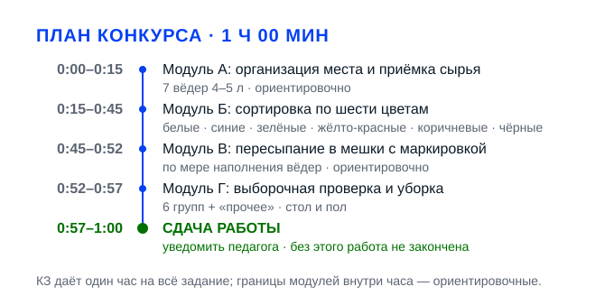
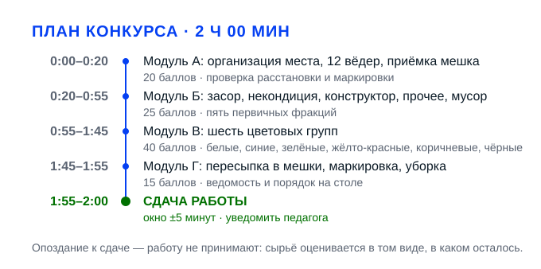
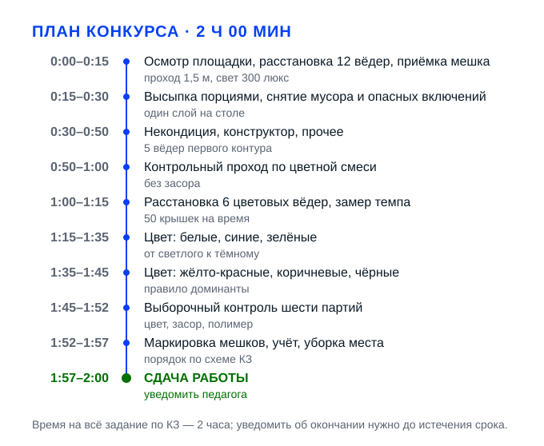

Сортировщик полимерного вторсырья (ФВ)
Задания ниже — официальные файлы «Абилимпикс» (источник: abilympics-russia.ru), разложенные по категориям. Решения написаны по тексту задания, регламенту и критериям оценки; в них указано, что именно проверяет эксперт.
Школьник
14–16 лет, базовый уровень заданияВ официальном файле категории не разделены отдельными разделами — приводим задание целиком; различия по категориям смотрите в таблице модулей.
Пошаговое решение
Конкурсное задание для школьников выглядит просто: высыпать мешок пластиковых крышек и разложить их по цветам. За этой простотой скрыт целый час однообразной, но точной работы: по таблице 2.2 нужно получить смесь, рассортированную на шесть цветовых групп — белые, синие, зелёные, жёлто-красные, коричневые и чёрные, — и при этом не потерять ни одной крышки. Семь вёдер по 4–5 литров, седьмое — для прочего, мешок сырья, шесть мешков с маркировкой и ровно 60 минут на всё задание. Разбаловки в документе нет, зато есть жёсткая последовательность из раздела 2.3: организовать рабочее место, отсортировать сырьё по инструкции, убрать за собой и уведомить педагога. Ошибки здесь почти всегда не про глаза, а про порядок: перепутанная маркировка, вёдра не в том порядке, спорные оттенки, решённые по-разному в разные минуты. Поэтому решение идёт от стола к мешкам, а не от цвета к цвету.

Задача 1. Организовать рабочее место и принять сырьёМодуль А · первые 15 минут из 60
До того как пальцы коснутся первой крышки, стол должен быть превращён в маленькую сортировочную линию: пустая сухая столешница, семь вёдер по 4–5 литров в строгом порядке цветовой шкалы и мешок сырья, высыпанный ровным слоем. Конкурсное задание даёт на всё шестьдесят минут, и пятнадцать из них, потраченные на организацию, возвращаются с лихвой: без готовых ёмкостей сортировка превращается в перекладывание крышек из кучи в кучу.
Действие 1.1. Подготовить стол и посадить себя правильно
Шаг 1.1.1
Освобождаем столешницу полностью: убираем на соседний стол или на полку всё, что не относится к сортировке — сумку, телефон, бутылку с водой, бумаги с записями. Стол протираем влажной тряпкой и даём высохнуть, потому что на мокрой поверхности крышки скользят под пальцами, а пыль и мелкий сор прилипают к ладоням и потом оказываются в цветных вёдрах. Рабочее место по разделу 4 задания — 3000 на 1900 миллиметров: на такой площади семь вёдер по 4–5 литров встают в один ряд, а перед ними остаётся полоса стола шириной около сорока сантиметров, где удобно разбирать горсть крышек, не сдвигая ёмкости.
Свободный стол — первое, что фиксирует эксперт, подходя к рабочему месту, и это прямая часть критерия «организовать рабочее место», с которого начинается последовательность выполнения задания в разделе 2.3. Лишние предметы в рабочей зоне заставляют тянуться через них, и рука идёт мимо ведра: крышка падает на пол, вы наклоняетесь, теряете ритм. За час такие заминки складываются в минуты, которых в конце не хватит на досортировку.
Проверьте ладонью: положите руку на стол перед собой — под ней должна быть чистая сухая поверхность, а в пределах вытянутой руки не должно остаться ничего, кроме вёдер и текущей горсти крышек. Проход между рабочими местами по разделу 4 — 1,5 метра: если ваш стул, рюкзак или мешок вылезает в проход, место организовано неправильно, и это видно сразу.
Самая частая ошибка — оставить на столе пакет с личными вещами и работать вокруг него: горсть крышек приходится высыпать на самый край, половина скатывается на пол. Вторая — протереть стол и сразу начать, не дав высохнуть: мокрые разводы размазываются, крышки липнут к столешнице, а на белых остаются серые полосы.
Эксперт подходит к рабочему месту в первые минуты модуля А и отмечает, свободен ли стол и не мешает ли участник соседям слева и справа. Второй раз он смотрит на это же место в самом конце, когда оценивает уборку, и сравнивает два состояния.
Шаг 1.1.2
Садимся так, чтобы корпус касался спинки стула, а расстояние от глаз до рабочей поверхности было 35–40 сантиметров: ближе — шея устаёт к середине часа, дальше — цвет различается хуже, особенно тёмные оттенки. Свет должен падать на работу слева, если вы правша, и справа, если левша, — тогда тень от руки не закрывает ту крышку, которую вы оцениваете. Для участников с нарушением зрения раздел 4 требует освещения не менее 300 люкс, поэтому лампу не придвигаем вплотную к одному ведру, а ставим так, чтобы свет ложился на всю зону ровно.
Различение цвета — не украшение, а суть задания: результат по таблице 2.2 — смесь, рассортированная на шесть цветовых групп, и любая ошибка в оттенке уводит крышку в чужой мешок. При косом свете или тени от корпуса чёрная крышка читается как тёмно-синяя, а коричневая — как чёрная, и вы этого не заметите, пока не сравните две штуки рядом. Правильная посадка даёт выносливость: час движений в наклоне к сороковой минуте снижает темп вдвое.
Посмотрите на своё рабочее место глазами соседа: тень от вашей руки не должна перекрывать крайние вёдра, а на белом листе под лампой не должно быть жёлтого пятна. Проверьте расстояние до стола локтем — при 35–40 сантиметрах предплечье лежит на краю столешницы, и кисти не приходится висеть в воздухе.
Типичная ошибка — сесть сбоку от стола и работать вполоборота, потому что так «удобнее доставать» дальние вёдра: через двадцать минут начинает болеть поясница, движения становятся резкими, и крышки летят мимо. Вторая — поставить лампу так, что она бьёт в глаза или, наоборот, оставляет рабочую зону в собственной тени.
Эксперт обращает внимание на посадку в первые пять минут и потом ещё раз — ближе к концу, когда видно, держится ли участник ровно или уже сгорбился над ведром.
Шаг 1.1.3
Раскладываем под рукой всё, что понадобится за час, и больше ничего не берём: перчатки, если они предусмотрены, пустые мешки с маркировкой (их шесть плюс один для прочего), маркер для подписи, тряпку для стола и отдельную плошку под посторонние предметы. Перчатки надеваем сразу, а не «когда станет грязно»: крышки приходят из контейнеров, на них остаётся пыль и следы клея, и руки после первых горстей становятся липкими. Всё кладём с правой стороны, если работаете правой рукой, в том порядке, в котором будете брать.
Расходные материалы и оборудование на одного участника перечислены в разделе 3.1: один мешок вторичного сырья и семь пластиковых вёдер 4–5 литров с маркировкой. Если чего-то не хватает или предмет неисправен, раздел 5 требует замены, а не работы «как получится», и заменить это можно только до старта. Разложенные заранее предметы не отвлекают: маркер и тряпка не ищутся по карманам в тот момент, когда ведро уже переполнено.
Проверьте себя по короткому списку, не заглядывая в записи: на столе есть ровно семь вёдер, шесть мешков с маркировкой, тряпка и ёмкость для посторонних предметов; ничего лишнего в рабочей зоне нет. Перчатки сидят по размеру и не сползают при сжатии кулака — если сползают, лучше взять другие сразу.
Частая ошибка — начать работу без перчаток и надеть их на грязные руки: под перчаткой рука потеет, а грязь остаётся на коже. Вторая — положить мешки за спиной: чтобы пересыпать ведро, приходится разворачиваться всем корпусом, и крышки сыплются мимо горловины.
Эксперт оценивает готовность инвентаря до старта и отдельно — соблюдение требований охраны труда из раздела 5, куда входит и запрет брать материалы в рот, и аккуратное обращение с инвентарём.
Действие 1.2. Расставить семь вёдер по цветовой шкале
Шаг 1.2.1
Ставим вёдра в один ряд слева направо в том порядке, в котором цвета перечислены в задании: белые, синие, зелёные, жёлто-красные, коричневые, чёрные. Седьмое ведро — для прочего — ставим с краю, отдельно от цветового ряда, лучше справа за чёрным, но с заметным промежутком в ладонь-две, чтобы рука не путала его с цветными. Между вёдрами оставляем по два-три сантиметра: вплотную они стоят устойчивее, но задевают друг друга, и при наполнении крышки пересыпаются через край соседнего ведра. Ряд должен стоять не дальше вытянутой руки от той полосы стола, где вы разбираете горсть.
Порядок вёдер — это не формальность, а способ не думать лишний раз: движение руки становится автоматическим, и мозг занимается только определением цвета. Задание в разделе 2.3 требует раскладывать крышки «в соответствии с цветной маркировкой», и проверяющему важно видеть, что маркировка соблюдена не только в мешках, но и в процессе. Если вёдра стоят хаотично, вы каждый раз прицеливаетесь заново, и на это уходит ощутимая часть часа.
Отойдите на шаг и посмотрите на ряд: цвета должны читаться как шкала, без перестановок. Проверьте рукой: от центра рабочей зоны до любого ведра — не больше одного движения, без наклона корпуса в сторону. Вёдра стоят на столе устойчиво, дно полностью касается поверхности, ни одно не висит на краю.
Ошибка — расставить вёдра «как встали», например белое между чёрным и коричневым: тогда на автомате белая крышка летит в коричневое. Вторая — поставить вёдра в два ряда, чтобы все были ближе: второй ряд закрыт первым, и вы либо тянетесь через крышки, либо не видите, что ведро уже полно.
Эксперт обходит рабочие места перед стартом и смотрит, совпадает ли порядок вёдер с порядком цветов в задании. Дальше он наблюдает, попадают ли крышки в вёдра с первого движения.
Шаг 1.2.2
Проверяем маркировку каждого ведра: надпись или цветная наклейка должны быть обращены к вам, а не к соседу или в стену. Если маркировка стёрлась или наклеена криво, переворачиваем ведро или подписываем маркером сами — крупно, печатными буквами, на высоте двух-трёх сантиметров от верхнего края, чтобы надпись была видна и когда ведро наполовину полно. Заодно проверяем объём: по разделу 3.1 это вёдра на 4–5 литров, и если попалось ведро заметно меньше, его лучше заменить до старта — оно переполнится первым и заставит бросать сортировку ради пересыпания.
Семь вёдер — это ровно шесть цветовых групп плюс ёмкость для прочего, и вся логика задания держится на том, что каждая ёмкость однозначно опознаётся. Перепутанная маркировка — самая дорогая ошибка в этой компетенции: она не проявляется сразу, вы спокойно работаете час, а на сдаче выясняется, что коричневые и чёрные собраны в одном мешке. Исправлять это в конце придётся полной переборкой двух групп.
Проверьте маркировку, стоя на месте участника, а не наклоняясь к ведру: надпись должна читаться с расстояния 35–40 сантиметров, то есть с той дистанции, с которой вы работаете. Пройдите взглядом по ряду слева направо и назовите цвета про себя — если хоть раз замялись, маркировку надо сделать заметнее.
Частая ошибка — довериться цвету самого ведра: если белые крышки лежат в белом ведре, а надписи нет, сосед по столу может переставить ёмкости, и вы этого не заметите. Вторая — подписать мелко, шариковой ручкой по ребристой поверхности: такая надпись не читается уже через полчаса.
Эксперт проверяет читаемость маркировки в начале работы и потом сверяет её с содержимым мешков на сдаче. Расхождение между надписью и содержимым трактуется не в пользу участника.
Шаг 1.2.3
Ставим вёдра так, чтобы они не перекрывали друг другу обзор и не занимали всю глубину стола: задняя треть столешницы остаётся свободной, туда мы будем отодвигать пустые мешки и складывать тряпку. Сами вёдра ставим на передний край рабочей зоны, но не на самый край столешницы — при неловком движении ведро съезжает и опрокидывается. Если стол выше вашего локтя, подставьте под вёдра ровную дощечку или лоток: тогда бросок крышки идёт сверху вниз, а не снизу вверх, и рука не устаёт.
Высота и глубина установки напрямую влияют на точность: при броске сверху вниз крышка летит по короткой дуге и почти не выскакивает, при броске снизу вверх она переворачивается в воздухе и цепляет край. Кроме того, свободная задняя часть стола нужна для манёвра: наполненные вёдра придётся отставлять и заменять, и делать это на забитом столе невозможно без потерь.
Проверьте устойчивость: толкните каждое ведро ладонью — оно должно сдвинуться, но не опрокинуться. Убедитесь, что задняя треть стола свободна, а вёдра не выходят за границу рабочей зоны 3000 на 1900 миллиметров, то есть не свисают в проход.
Ошибка — поставить вёдра на самый край, «чтобы было ближе»: одно неловкое движение, и ведро с сороковкой крышек летит на пол. Вторая — поставить их в глубине стола, за горстью крышек: чтобы бросить крышку, приходится каждый раз перегибаться через стол, и через десять минут болит спина.
Эксперт смотрит на устойчивость и на то, не выходит ли рабочее место за границы зоны; для участников на кресле-коляске это ещё и вопрос доступности, который проверяется отдельно.
Действие 1.3. Принять сырьё и высыпать его на стол
Шаг 1.3.1
Получаем мешок вторичного сырья и осматриваем его до того, как развязать: мешок должен быть целым, без прорех и подтёков, шов не разошёлся, снизу нет влажного пятна. Если мешок мокрый или из него пахнет сыростью, сразу говорим об этом педагогу — влажные крышки слипаются, их невозможно быстро разложить, а на поверхности остаётся плёнка, которую потом видно на белых крышках. Один мешок на участника — это по разделу 3.1 весь ваш запас, второго не будет, поэтому приёмка идёт до старта, а не в процессе.
Приёмка — единственный момент, когда недостачу или брак ещё можно исправить: после старта замена идёт только через педагога и только если причина уважительная. Кроме того, осмотр мешка сразу даёт план: если сверху лежат крупные крышки от банок, а мелкие от бутылок ссыпались на дно, вы заранее знаете, что первую горсть надо разбирать внимательнее.
Проверьте три признака: мешок сухой снаружи, шов целый, вес соответствует объёму — мешок не должен быть неожиданно лёгким, как будто в нём одна пыль. Если внутри слышен звон стекла или металла, это тоже повод сказать педагогу до того, как высыпать содержимое на стол.
Ошибка — развязать мешок сразу и высыпать, не глядя: вместе с крышками на стол уходят осколки, батарейки и острые обрезки, и вы обнаруживаете это руками. Вторая — промолчать про мокрый мешок, рассчитывая «высохнет»: слипшиеся крышки придётся раздирать по одной, и времени на сортировку не останется.
Педагог или эксперт фиксирует приёмку сырья и выдачу инвентаря; в этот момент видно, осматривает участник то, что получил, или берёт не глядя. Отдельно отмечается, сказал ли участник о браке упаковки до старта, — это показатель внимательности, а не жалобы.
Шаг 1.3.2
Высыпаем сырьё на стол одним движением: берём мешок двумя руками за дно и за горловину, поднимаем на высоту груди и плавно вытряхиваем на середину рабочей зоны так, чтобы слой получился ровным и не толще двух-трёх сантиметров. Не вываливаем всё одной кучей: в куче нижние крышки не видны, и вы будете разгребать её руками вместо того, чтобы сортировать. Если сырья много, делим его на две порции и высыпаем вторую половину только тогда, когда первая разобрана примерно наполовину, — так рабочая зона остаётся обозримой.
Ровный слой — условие скорости: в один слой каждая крышка видна целиком, и цвет определяется за доли секунды, а в куче приходится переворачивать и разгребать. Разделение на порции даёт ещё и психологический эффект: разобранная половина видна как результат, и темп не падает. Задание даёт час на всё, и именно на этапе высыпания закладывается, будет ли сортировка ровной или рваной.
Проверьте: крышки лежат в один-два слоя, ни одна не свисает с края стола, горловина мешка пустая и сам мешок отложен в сторону, а не брошен в рабочую зону. Площадь засыпки не должна выходить за полосу, с которой вам удобно дотянуться, — примерно сорок сантиметров по глубине.
Ошибка — вытряхнуть мешок с высоты вытянутой руки: крышки разлетаются по всему столу и частично на пол, а собрать их придётся по одной. Вторая — высыпать всё сразу, даже если сырья объективно много: куча высотой в ладонь закрывает стол, и вы сортируете вслепую.
Эксперт смотрит на организацию подачи сырья: аккуратное высыпание и порционная работа читаются как понимание процесса, а разбросанные по полу крышки — как потеря контроля.
Шаг 1.3.3
Первый проход делаем не по цветам, а по посторонним предметам: убираем из кучи всё, что не является пластиковой крышкой, — бумажные обёртки, фольгу, пластиковые пакеты, металлические кольца, батарейки, осколки, а также крышки явно другого назначения, которые не попадают ни в одну из шести групп. Постороннее складываем в отдельную плошку или сразу в седьмое ведро для прочего, но не в цветные вёдра. Заодно отбраковываем сильно загрязнённые крышки — с землёй, краской, засохшим клеем: они пойдут в прочее, потому что испачкают всю группу.
Этот проход экономит время, а не тратит его: посторонний предмет, попавший в цветное ведро, обнаружится только при пересыпании в мешок, когда разбирать придётся всю ёмкость. Кроме того, мусор в цветной группе снижает сортность сырья — по описанию компетенции именно чистота сортировки повышает стоимость вторсырья, а значит, и объём помощи, ради которой проект существует.
Проверьте горсть из середины кучи: в ней должны быть только крышки, без бумажек, пробок и мелкого сора. Убедитесь, что плошка для постороннего стоит отдельно и в ней уже что-то есть — если она пуста после осмотра мешка, скорее всего вы просто не смотрели.
Ошибка — считать, что «бумажка не помешает»: в мешке она превращается в засор, из-за которого партию приходится перебирать на приёмке. Вторая — отбрасывать в прочее крышки, которые просто выглядят необычно: потери в цветовой группе считаются так же строго, как ошибки цвета.
Эксперт может проверить содержимое седьмого ведра и цветных вёдер в любой момент работы, поэтому «потом разберу» здесь не работает. Чаще всего он заглядывает в седьмую ёмкость в середине модуля, когда она уже чем-то заполнена и видно принцип отбора.
Действие 1.4. Свериться с инструкцией и распределить час
Шаг 1.4.1
Читаем задание до старта, а не в процессе, и выписываем для себя две вещи: перечень шести цветовых групп и правило для спорных оттенков. В задании группы названы так: белые, синие, зелёные, жёлто-красные, коричневые, чёрные, — обратите внимание, что жёлтые и красные объединены в одну группу, и это главная ловушка: участник, который по привычке начнёт раскладывать жёлтое отдельно от красного, сделает лишнюю работу и получит две неполные группы вместо одной полной. Если что-то в формулировке непонятно, уточняем у педагога до начала, а не после.
Понимание того, что именно требуется на выходе, определяет всю стратегию: результат по таблице 2.2 — смесь, рассортированная на шесть цветовых групп, а не на двенадцать оттенков. Ошибка в трактовке задания стоит дороже любой технической оплошности, потому что исправляется только полной переборкой. Кроме того, задание разрешает уточняющие вопросы до старта, и это законный способ снять неопределённость.
Сформулируйте вслух, для себя или для педагога: шесть групп, жёлтое и красное вместе, всё неопознанное — в прочее. Если вы можете назвать состав групп, не подглядывая, значит, инструкция прочитана. Проверьте, что ваша маркировка на вёдрах совпадает с этой формулировкой дословно.
Типичная ошибка — начать сортировку, не дочитав задание, и разделить жёлтые и красные: к концу часа у вас восемь неполных групп, а требование — шесть. Вторая — толковать «прочее» как «мусор» и складывать туда всё, в чём сомневаетесь, включая явно синие крышки.
Эксперт проверяет, задаёт ли участник уточняющие вопросы и совпадает ли его трактовка групп с заданием; на сдаче это видно по составу мешков. Если жёлтое и красное разделены на две группы, вопрос о трактовке задают сразу, не дожидаясь конца.
Шаг 1.4.2
Раскладываем час на четыре отрезка и держим их в голове: первые пятнадцать минут — организация места и приёмка сырья, следующие тридцать — собственно сортировка, затем семь минут на пересыпание в мешки и последние восемь — на контрольную проверку, уборку и уведомление педагога. Точку контроля ставим на двадцать пятой минуте: если к этому времени разобрана примерно треть сырья, темп правильный, если меньше — надо ускоряться, отложив разглядывание спорных крышек в отдельную кучку для второго прохода.
Сортировка без плана почти всегда идёт по кривой: первые двадцать минут участник разбирает крышки идеально, потом обнаруживает, что времени осталось мало, и начинает бросать всё подряд, а последние минуты тратит на паническую переборку. Разделение на отрезки и промежуточная точка контроля позволяют заметить отставание вовремя, когда его ещё можно догнать спокойным темпом, а не рывком в конце.
Проверьте себя на контрольной точке: назовите, сколько групп уже собрано и сколько крышек в самой полной группе. Если вы не можете ответить, значит, счёт не ведётся и темп вы не контролируете. Проще всего отмечать пройденные этапы маркером на листе, который лежит на виду.
Ошибка — потратить первые полчаса на идеальную сортировку мелких партий и оставить основную массу на последние минуты. Вторая — не оставить времени на уборку и уведомление педагога: по разделу 2.3 это обязательные шаги, и без них работа не считается завершённой, даже если крышки разложены идеально.
Эксперт следит за темпом по ходу конкурса и отмечает, нарастает ли спешка к концу; ровная работа без рывков читается как уверенное владение навыком. Резкое ускорение в последние десять минут он тоже фиксирует: оно почти всегда идёт за счёт качества.
Задача 2. Разложить смесь по шести цветовым группамМодуль Б · около 30 минут из 60
Основная часть задания: каждая крышка из общей кучи должна найти своё ведро. Здесь работают три вещи — заранее заданные эталоны цвета, автоматическое движение руки и жёсткое правило «одна крышка — одно ведро, сразу и без возврата». Тридцать минут ровного темпа дают результат, который по таблице 2.2 и называется рассортированной на шесть цветовых групп смесью.
Действие 2.1. Задать эталоны цвета и договориться с собой о границах
Шаг 2.1.1
Прежде чем начать бросать крышки в вёдра, отбираем из кучи по три-пять эталонных штук каждого цвета и кладём их на стол перед соответствующим ведром — прямо на столешницу, подписью к себе. Эталон — это крышка, в цвете которой вы уверены без колебаний: насыщенный синий, чистый белый, тёмный шоколадный коричневый, глухой чёрный. Дальше любая спорная крышка сравнивается не с памятью, а с эталоном, который лежит в двадцати сантиметрах, и решение принимается за секунду.
Сравнение с физическим образцом — самый надёжный способ не ошибиться: глаз подводит, особенно под искусственным светом и к сороковой минуте, когда накапливается усталость. Шесть групп по заданию — широкие корзины, и попасть в нужную надо с первого раза: возврат крышки занимает втрое больше времени, чем точный бросок. Эталоны ещё и защищают при споре на сдаче — вы показываете образец, по которому принимали решение.
Проверьте: перед каждым ведром лежит свой эталон, эталоны не перепутаны и не сдвинуты в сторону. Возьмите спорную крышку и положите рядом с двумя эталонами — если она читается как «между», значит, границу надо определить заранее, а не в момент броска.
Ошибка — держать эталоны в голове: к середине работы память о конкретном оттенке размывается, и коричневое начинает казаться чёрным. Вторая — разложить эталоны так далеко, что за ними надо тянуться: тогда вы их просто перестанете использовать.
Эксперт видит эталоны на столе и понимает, что участник работает осознанно; на спорных крышках он может попросить объяснить, почему выбрана эта группа.
Шаг 2.1.2
Отдельно разбираем три пары, на которых ошибаются чаще всего. Жёлтый и оранжевый: по заданию они в одной группе «жёлто-красные», поэтому граница проходит не между ними, а между этой группой и коричневым — оранжевая крышка идёт в жёлто-красное, а тёмно-рыжая, ближе к шоколаду, уже в коричневое. Синий и голубой: голубые крышки идут в синие, отдельного ведра для них нет. Красный и бордовый: бордовый остаётся в жёлто-красной группе, если он не уходит в тёмно-коричневый по насыщенности. Проговариваем эти три решения до старта сортировки.
Спорные оттенки — источник половины всех ошибок в этой компетенции, и решать их в момент, когда в руке уже крышка, а глаза следят за следующей, невозможно последовательно. Заранее принятое правило даёт одинаковый ответ на одинаковый вопрос: пять оранжевых крышек подряд уйдут в одну группу, а не в две разные. Именно однородность групп проверяется на сдаче — не «правильность» отдельной крышки, а то, что группа собрана по одному признаку.
Проверьте себя на пяти случайных крышках: разложите их по группам вслух, называя основание. Если на двух из пяти вы задумались дольше секунды, правило не сформулировано — вернитесь к эталонам и решите один раз, а дальше держитесь решения.
Ошибка — менять правило по ходу: сначала оранжевое в коричневое, через двадцать минут в жёлто-красное, и в итоге группа размыта. Вторая — откладывать спорные крышки в сторону «на потом»: к концу наберётся горсть, которую придётся разбирать в спешке.
Эксперт специально подкладывает в задание несколько пограничных по цвету крышек и смотрит, куда они попадут и одинаково ли участник решает один и тот же вопрос.
Шаг 2.1.3
Определяем судьбу крышек, которые не относятся ни к одной цветовой группе: двухцветные, с рисунком, полупрозрачные, а также крышки от канистр и технических ёмкостей необычной формы. Все они идут в седьмое ведро для прочего, и это не «отход», а отдельная группа, которую на сдаче нужно предъявить. Правило простое: если крышка целиком читается как один из шести цветов — она идёт в цвет; если цвет делится пополам или его невозможно назвать одним словом — в прочее.
Задание прямо предусматривает седьмую ёмкость, и её наличие — часть организации рабочего места: без неё неопознанные крышки оказываются в цветных вёдрах и портят группы. Отдельная группа ускоряет работу: вместо разглядывания нестандартной крышки вы отбрасываете её одним движением и продолжаете поток. При этом сбрасывать туда всё, что не хочется решать, нельзя — за явно цветную крышку снимают так же, как за чужой цвет.
Проверьте седьмое ведро через десять минут работы: в нём должны быть только действительно нестандартные экземпляры. Если там больше десятой части всего сырья, вы отбрасываете лишнее и теряете цветовые группы.
Ошибка — отправлять в прочее всё тёмное, потому что «не разобрать»: чёрные и коричневые крышки различаются по эталону за секунду. Вторая — складывать туда мусор вместе с крышками: смешанная группа на сдаче выглядит как небрежность.
Эксперт проверяет седьмое ведро и оценивает, разумно ли участник отделяет нестандарт от цветного; это отдельный показатель понимания материала. Он же смотрит, не превратилась ли эта ёмкость в свалку «сложного».
Действие 2.2. Вести основной поток сортировки
Шаг 2.2.1
Работаем двумя руками: левая берёт горсть из кучи и подаёт крышки по одной, правая бросает их в нужное ведро. Глаза при этом смотрят не на ведро, а на крышку в руке — прицеливание идёт периферийным зрением, потому что вёдра стоят на неизменных местах. Бросок делаем короткий, сверху вниз, с высоты десяти-пятнадцати сантиметров над краем ведра, кистью, а не всей рукой: так движение остаётся точным и не утомляет предплечье.
Разделение труда между руками — то, что отличает ровную сортировку от суетливой: если брать и бросать одной рукой, вы делаете вдвое больше движений и вдвое быстрее устаёте. Взгляд на крышку, а не на ведро, экономит доли секунды на каждой штуке, а за тридцать минут и несколько сотен крышек это складывается в минуты, которые можно потратить на досортировку. Короткий бросок кистью ещё и не даёт крышке перелететь через ведро.
Проверьте через минуту работы: крышки попадают в вёдра, а не на стол между ними, и вам не приходится поправлять ведро после каждого броска. Если приходится — сократите амплитуду и опустите руку ниже, к самому краю. Между бросками не должно быть пауз на прицеливание.
Ошибка — бросать через весь стол с замахом: крышка переворачивается и цепляет край, а половина уходит мимо. Вторая — смотреть на ведро в момент броска: взгляд уходит с потока, и следующая крышка уже пропущена.
Эксперт наблюдает за техникой в первые минуты модуля Б: ровные короткие движения без суеты читаются как освоенный навык, а размашистые броски с наклоном корпуса — как работа силой вместо работы кистью.
Шаг 2.2.2
Держим жёсткое правило: одна крышка — одно ведро, решение принимается один раз и не пересматривается. Если крышка уже брошена и вы поняли, что ошиблись, достать её нужно сразу, а не «в конце разберу», — в полном ведре сделать это будет невозможно без переборки. Сомнительные экземпляры не держим в руке и не перекладываем из ладони в ладонь: либо в цвет по эталону, либо в прочее.
Правило одного решения защищает от главной потери времени в сортировке — возвратов. Каждая крышка, извлечённая из ведра, стоит нескольких секунд и сбивает ритм, а переборка полного ведра в конце может съесть все оставшиеся минуты. Кроме того, немедленное исправление ошибки сохраняет однородность группы, которая и есть результат задания по таблице 2.2.
Проверьте: содержимое каждого ведра однородно по цвету, если смотреть сверху на слой в пять-семь сантиметров. Убедитесь, что в ведре нет крышек, которые вы «положили временно» — временных мест быть не должно.
Ошибка — откладывать спорную крышку на край стола «на второй проход»: край зарастает, и вы теряете из виду уже разобранную территорию. Вторая — перекладывать крышку из ведра в ведро по нескольку раз, пытаясь решить окончательно.
Эксперт в любой момент может зачерпнуть из ведра и посмотреть, однородна ли группа; это самая быстрая его проверка в модуле Б. Чаще всего он выбирает белое и чёрное ведро, где чужая крышка заметнее всего.
Шаг 2.2.3
Темп держим ровный, без рывка на старте: первые пять минут работаем чуть медленнее обычного, чтобы руки и глаза синхронизировались, а дальше выходим на устойчивую скорость и держим её до конца. Каждые десять минут пересчитываем глазами наполнение вёдер и мысленно отмечаем, какая группа отстаёт: если белых почти нет, а чёрных уже полведра, значит, вы, скорее всего, часть белых отправили в прочее.
Разгон с первых секунд — типичная ошибка новичка: руки ещё не настроены, первые броски идут мимо, а исправление разгона стоит дороже спокойного начала. Ровный темп нужен и для контроля качества: при спешке доля ошибок растёт непропорционально. Промежуточный пересчёт наполнения даёт обратную связь по составу сырья и позволяет заметить систематическую ошибку до того, как она разойдётся по всему объёму.
Проверьте на десятой минуте: разобрано примерно столько, сколько вы планировали на этот отрезок, и ни одна группа не выглядит подозрительно маленькой. Если какая-то группа отстаёт вдвое, остановитесь на полминуты и посмотрите, не уходят ли её крышки в прочее.
Ошибка — гнаться за скоростью и потом перебирать: переборка одной группы занимает больше времени, чем спокойная работа с самого начала. Вторая — замечать отставание группы только на сдаче, когда исправлять уже поздно.
Эксперт оценивает и результат, и характер работы: ровный темп без паники к концу часа — признак того, что участник умеет планировать нагрузку. Он отмечает и момент, когда участник впервые посмотрел на часы.
Шаг 2.2.4
Работаем сидя, не наклоняя голову к самому столу: куча должна быть на расстоянии 35–40 сантиметров от глаз, а корпус — опираться на спинку. Раз в десять минут меняем положение: расправляем плечи, сдвигаем стопы, перехватываем горсть другой рукой, если устала ведущая. Перчатки, если они есть, снимаем только на время контрольной проверки и надеваем обратно — вспотевшая рука внутри перчатки теряет чувствительность к мелким деталям.
Выносливость в этом задании — не абстракция: час однообразных движений с наклонённой головой и сведёнными плечами к сороковой минуте даёт заметное падение точности, а ошибки в конце самые дорогие, потому что исправлять их нечем. Смена позы раз в десять минут стоит пять секунд и возвращает рабочее состояние. Требование держать дистанцию 35–40 сантиметров прямо записано в разделе 5, и оно про зрение, а не про осанку.
Проверьте: спина касается спинки стула, плечи опущены, шея не вытянута вперёд. Если через двадцать минут появляется ноющая боль между лопатками, вы работаете в наклоне — поднимите стол или подложите что-то под локти.
Ошибка — работать стоя, «чтобы было быстрее»: стоя вы наклоняетесь над столом ещё сильнее и к середине часа теряете точность. Вторая — не менять положение вообще: однообразие быстрее утомляет, чем сама нагрузка.
Эксперт отмечает эргономику рабочей позы как часть критерия организации рабочего места, а для участников с нарушениями ОДА это ещё и вопрос доступности оборудования.
Действие 2.3. Не терять порядок в рабочей зоне
Шаг 2.3.1
Держим кучу компактно: разбираем крышки в пределах полосы шириной сорок сантиметров перед собой, а не по всему столу. По мере разбора подгребаем остаток к центру ладонью, а освободившееся место оставляем пустым — туда будет удобно ставить наполненное ведро и подносить пустое. Разобранную территорию не засыпаем обратно: если сырья было много, вторую порцию высыпаем только на освободившееся место.
Компактная рабочая зона — это скорость и контроль одновременно: чем ближе крышки, тем короче путь руки, и тем проще заметить, что какая-то часть кучи осталась неразобранной. Разрастание кучи по столу — первый признак потери контроля, и оно же приводит к тому, что часть крышек оказывается под вёдрами и обнаруживается только при уборке. Пустое место нужно ещё и для манёвра с вёдрами, которые придётся менять по мере наполнения.
Проверьте: неразобранные крышки лежат одной компактной массой, между ней и ведрами есть свободная полоса, а под вёдрами и за ними крышек нет. Если приходится тянуться к дальней части стола — подгребite остаток ближе.
Ошибка — разбрасывать крышки по всей столешнице, «чтобы лучше видеть»: площадь растёт, а обзор не улучшается, зато часть крышек уходит за ведра. Вторая — подгребать остаток к краю и работать на самом краю стола, откуда крышки падают на пол.
Эксперт видит, насколько управляема рабочая зона в середине модуля Б: компактная куча и свободные края читаются как уверенная работа, а разбросанные по столу крышки — как потеря контроля над процессом.
Шаг 2.3.2
Следим за наполнением: ведро считается рабочим, пока крышки занимают не больше двух третей высоты. Как только уровень подошёл к этой отметке, ведро отставляем назад или в сторону и заменяем пустым, а полное ставим в очередь на пересыпание. Не ждём, пока крышки пойдут через край: переполненное ведро невозможно поднять, не рассыпав половину, и оно же закрывает обзор соседним.
Правило двух третей — практическое: при полном ведре крышки лежат выше края горкой, и любой бросок добавляет рассыпание. Кроме того, переполнение происходит в самый неподходящий момент, когда вы в потоке, и заставляет бросать сортировку ради уборки. Своевременная замена занимает пять секунд и не сбивает темп, а вот подбирание рассыпанных крышек с пола — минуту и нервы.
Проверьте перед каждым десятым броском, куда вы бросаете: уровень в целевом ведре должен быть ниже двух третей. Если полное ведро уже стоит на столе, уберите его из рабочего ряда, чтобы рука не бросала в него по инерции.
Ошибка — набивать ведро «до последнего», потому что замена кажется потерей времени: в итоге теряется больше на подбирании. Вторая — ставить полное ведро на место пустого: вы бросаете в него ещё минуту, прежде чем замечаете.
Эксперт обращает внимание на то, как участник обходится с инвентарём: аккуратная ротация вёдер — часть организации рабочего места. Ведро, поднятое с горкой, он отмечает как риск рассыпания.
Шаг 2.3.3
Если крышка упала мимо ведра — на стол, между вёдрами или на пол, — поднимаем её сразу, не откладывая. Упавшую на пол крышку сначала протираем тряпкой и только потом определяем в группу: пол в конкурсной зоне нестерилен, и пыльная крышка испачкает весь слой в ведре. Крышки, скатившиеся под вёдра, достаём сразу же, потому что потом их не видно, и они обнаружатся только при уборке — уже после того, как вы отчитались о результате.
Своевременный подъём сохраняет и результат, и чистоту: крышка на полу — это потеря из цветовой группы, а грязная крышка в ведре — снижение качества всей группы. Кроме того, разбросанные по полу крышки — прямая угроза безопасности: на них легко поскользнуться, а раздел 5 требует от участника аккуратности и внимания к рабочему месту.
Проверьте зону вокруг стула и под столом через двадцать минут: пол должен быть чистым. Если на полу уже есть крышки, значит, броски идут с перелётом — сократите амплитуду и придвиньте вёдра ближе к рабочей полосе. Тряпка для протирания должна лежать под рукой, а не в дальнем конце стола.
Ошибка — «потом подберу»: к концу часа под столом набирается горсть, которую нужно разобрать по цветам в последние минуты. Вторая — положить поднятую с пола крышку в ведро, не протерев: пыль оседает на соседних.
Эксперт может пройти по зоне и посмотреть на пол; чистота вокруг рабочего места входит в оценку организации и безопасности. Крышка под ногами для него ещё и сигнал, что участник не контролирует силу броска.
Действие 2.4. Разобрать сложные случаи
Шаг 2.4.1
Тёмные крышки разбираем при хорошем свете и обязательно с эталоном в руке: чёрная, тёмно-синяя и тёмно-коричневая при боковом свете читаются почти одинаково. Приём простой — поворачиваем крышку к лампе плоскостью: чёрная остаётся чёрной без оттенка, тёмно-синяя даёт холодный синеватый блик, коричневая — тёплый рыжеватый. Если крышка выглядит как «тёмная без цвета», она идёт в чёрные; если в блике есть цвет — в синие или коричневые по оттенку.
Тёмные группы — самая частая точка смешения: по опыту именно здесь образуются мешки, в которых чёрное и коричневое перемешаны, и на сдаче это видно сразу, потому что проверяют как раз пограничные группы. Правильное решение по блику занимает секунду, но требует, чтобы свет падал на крышку, а не на вашу тень. Ошибка здесь дорога вдвойне: она не единичная, а систематическая, и исправляется переборкой двух групп целиком.
Проверьте себя на пяти тёмных крышках подряд: разложите их и посмотрите на результат вместе — в одной группе должны оказаться штуки с одинаковым характером блика. Если разброс очевиден, поменяйте угол наклона крышки к лампе.
Ошибка — делить тёмные «на глаз» без поворота к свету: половина уходит в чужую группу. Вторая — считать все тёмные чёрными, потому что так быстрее: коричневая группа останется почти пустой, и дисбаланс будет заметен.
Эксперт проверяет именно тёмные группы: он зачерпывает из чёрного и коричневого мешка и смотрит на однородность при дневном свете. Смешение этих двух групп — самая частая находка при сдаче.
Шаг 2.4.2
Белые и прозрачные различаем по плотности: белая крышка матовая и не просвечивает, прозрачная видна насквозь и читается как «стеклянная». Прозрачные и полупрозрачные идут в прочее, потому что в задании отдельной группы для них нет. Белую крышку с загрязнением — с серым налётом, следами краски или засохшей этикеткой — сначала протираем; если след не сходит, отправляем в прочее, чтобы не испортить чистую белую группу.
Белая группа — самая заметная на сдаче: любая цветная или грязная крышка в ней видна сразу, как точка на листе бумаги. Поэтому белые разбирают тщательнее остальных, и именно на них лучше всего видно, работал участник аккуратно или бросал по принципу «похоже». Загрязнённая белая крышка портит впечатление от всей группы, хотя формально цвет определён верно.
Проверьте белую группу сверху: слой должен быть однородно белым, без цветных вкраплений и без серых экземпляров. Возьмите три случайные крышки из середины — они должны быть чистыми на просвет. Прозрачных в этой группе быть не должно ни одной.
Ошибка — складывать прозрачные в белые, потому что «они же светлые»: на сдаче группа выглядит неоднородной, и проверяющий видит это первым делом. Вторая — не протирать загрязнённые белые, надеясь, что «не видно»: серый налёт читается на всей группе сразу.
Эксперт осматривает белую группу первой — она работает как индикатор аккуратности всей сортировки. Он же проверяет, нет ли в ней прозрачных крышек: это самая частая подмена понятия «светлое» на «белое».
Шаг 2.4.3
Двухцветные и разноцветные крышки, крышки с рисунком, детали конструктора и крышки необычной формы — всё это уходит в седьмое ведро для прочего. Решение принимается по правилу «один цвет на всю крышку»: если цвет делится на две части или рисунок занимает больше половины площади, крышка не относится ни к одной из шести групп. Не пытаемся определить «преобладающий» цвет — это всегда спорно и всегда приводит к разнобою.
Задание для школьников прямо ограничивает результат шестью цветовыми группами, и седьмая ёмкость существует именно для таких случаев: она сохраняет чистоту групп и не даёт потерять материал. Правило «один цвет» удобно тем, что применяется механически и даёт одинаковый ответ у всех, кто его использует. Если выделять преобладающий цвет, две одинаковые крышки у разных участников попадут в разные группы.
Проверьте седьмое ведро: двухцветные крышки должны лежать вместе, без цветных соседей. Возьмите одну такую крышку и попробуйте назвать её цвет одним словом — если не получается, она на своём месте. Заодно убедитесь, что рисунчатые не разошлись по цветным вёдрам.
Ошибка — раскладывать двухцветные по преобладающему цвету: группы становятся неоднородными, а решение невозможно объяснить. Вторая — выбрасывать такие крышки в мусор: это потеря вторсырья, ради сбора которого и проводится конкурс.
Эксперт проверяет седьмое ведро на предмет того, нет ли там явно цветных крышек, и оценивает, насколько осознанно участник трактует нестандарт. Единичная двухцветная крышка в цветном ведре его не смутит, десяток — уже вопрос.
Шаг 2.4.4
Посторонние предметы, попавшие в кучу, убираем сразу и без разглядывания: фольгу, бумагу, обёртки, металлические кольца, батарейки, осколки стекла, органику. Острые предметы берём не голой рукой, а через тряпку или перчатку, и кладём в отдельную плошку, а не в цветное ведро. Батарейки и стекло не бросаем в общий мусор, а откладываем отдельно и показываем педагогу — в конкурсной зоне для них есть отдельная тара.
Чистота групп — это и качество результата, и требование безопасности: раздел 5 запрещает брать материалы в рот и требует аккуратности, а осколок в ведре с крышками — прямая опасность для того, кто будет это ведро пересыпать. Посторонний предмет, оставленный в цветной группе, обнаруживается на приёмке и превращает отсортированную партию в засор, то есть обесценивает работу целиком.
Проверьте плошку для постороннего: к середине работы в ней должно быть что-то, если сырьё пришло из реального сбора. Полностью пустая плошка — признак того, что вы не смотрите на состав кучи, а только на цвет.
Ошибка — бросать мелочь в ближайшее ведро, потому что «она маленькая»: одна обёртка делает группу засорённой, а на приёмке засор считается по факту, а не по весу. Вторая — хватать острые предметы голой рукой, торопясь: порез останавливает работу полностью и стоит дороже всего остального.
Эксперт смотрит на безопасность и на чистоту групп; посторонние предметы в цветных вёдрах он замечает при первой же выборочной проверке. Осколок или батарейка в ведре для него ещё и вопрос допуска к дальнейшей работе.
Задача 3. Пересыпать крышки в мешки с маркировкойМодуль В · около 8 минут из 60
Раздел 2.3 задания требует пересыпать крышки из вёдер в мешки с соответствующей цветной маркировкой по мере наполнения — то есть не один раз в конце, а по ходу работы. Это самая короткая часть задания и самая чувствительная к аккуратности: здесь теряются рассыпанные крышки и здесь же обнаруживаются все ошибки сортировки.
Действие 3.1. Подготовить шесть мешков и держать их наготове
Шаг 3.1.1
До начала сортировки раскладываем шесть мешков с маркировкой в том же порядке, в котором стоят вёдра: белый, синий, зелёный, жёлто-красный, коричневый, чёрный. Мешки ставим не в рабочую зону стола, а на пол или на соседнюю поверхность с правой стороны, горловиной к себе, на расстоянии шага. Седьмой мешок для прочего ставим отдельно от цветовых, чтобы он не оказался под рукой в момент, когда вы пересыпаете цветную группу.
Порядок мешков, совпадающий с порядком вёдер, убирает ещё один повод для ошибки: вы пересыпаете не «куда-то», а в конкретный мешок, который стоит напротив своего ведра. Раздел 2.3 требует пересыпать крышки в мешки «с соответствующей цветной маркировкой», и соответствие проверяется на сдаче содержимым, а не намерениями. Мешки вне стола — это ещё и место: шесть открытых мешков на столешнице занимают всю рабочую зону и мешают сортировать.
Проверьте: мешков шесть, порядок совпадает с вёдрами, каждый мешок раскрыт и его горловина смотрит вверх. Седьмой мешок стоит в стороне не менее чем на полметра от цветовых, и на нём читается надпись «прочее». Если маркировка бледная, подпишите мешок маркером сразу.
Ошибка — оставить мешки в куче у стены, чтобы «не мешали»: в момент пересыпания вы несёте полное ведро через всю зону и ищете нужный мешок взглядом. Вторая — перепутать местами белый и прозрачный мешок, если маркировка бледная.
Эксперт проверяет готовность мешков до старта и потом сверяет маркировку мешков с содержимым на сдаче. Мешки, лежащие кучей в углу, он отмечает как неподготовленную логистику.
Шаг 3.1.2
Каждый мешок раскрываем и отгибаем край наружу на пять-семь сантиметров, формируя валик: так горловина держится открытой сама и не схлопывается, когда вы высыпаете крышки. Если мешок высокий, подворачиваем его сверху так, чтобы высота борта была не больше двадцати сантиметров, — в низкий мешок крышки летят точно, а в высокий приходится прицеливаться. Валик придерживаем коленом или ставим мешок в устойчивую ёмкость, если он норовит упасть.
Открытая горловина с валиком — это разница между одним движением и тремя: в схлопнувшийся мешок половина крышек попадает на пол, и их приходится подбирать и заново сортировать. Подвёрнутый борт нужен ещё и для контроля: когда мешок стоит ровно и открыт, видно, сколько в нём уже лежит, и вы не пересыпаете второй раз одно и то же ведро. Устойчивость мешка — вопрос времени: упавший мешок придётся собирать целиком.
Проверьте рукой: борт держится, мешок не падает при лёгком толчке, горловина смотрит вверх. Отойдите на шаг — отверстие должно быть видно целиком, без наклона. Если мешок всё равно заваливается, поставьте его в ведро или придержите коленом.
Ошибка — оставить мешок закрытым и открывать его в момент пересыпания, держа полное ведро в руках: одна рука занята, и вы высыпаете мимо. Вторая — натянуть мешок на ведро и переворачивать вместе с ним: край рвётся, а крышки идут на пол.
Эксперт отмечает, насколько продумана работа с тарой: подготовленные мешки видны сразу, и по ним понятно, планировал участник пересыпание или собирался решать это по ходу. Отогнутый борт он считает признаком практического опыта.
Действие 3.2. Пересыпать по мере наполнения
Шаг 3.2.1
Пересыпаем по триггеру, а не по настроению: как только крышки в ведре поднялись до двух третей, ведро идёт на пересыпание. В момент пересыпания сортировку останавливаем полностью — не пытаемся одновременно бросать крышки и держать ведро. Порядок движений такой: отставляем горсть, берём ведро двумя руками за борт, подносим к мешку, наклоняем над горловиной и высыпаем, постучав ладонью по дну, чтобы вышло всё.
Раздел 2.3 говорит именно о пересыпании «по мере наполнения», и это логистика, а не формальность: полное ведро на столе занимает место, закрывает обзор и создаёт риск рассыпания при каждом следующем броске. Остановка сортировки на время пересыпания нужна для точности: в движении, с горстью в другой руке, ведро наклоняют неверно, и крышки идут мимо горловины. Постукивание по дну — простой приём, который вытряхивает застрявшие у стенок крышки.
Проверьте после каждого пересыпания: ведро пустое или в нём осталось меньше горсти, на столе между ведром и мешком нет рассыпанных крышек, мешок стоит ровно. Если крышки всё же просыпались, подберите их сразу и определите обратно в тот же цвет.
Ошибка — пересыпать на весу, держа ведро одной рукой: кисть не удерживает равновесие, и половина уходит мимо. Вторая — наклонять ведро резко, до переворота: крышки вылетают с разгоном и не попадают в горловину.
Эксперт наблюдает за пересыпанием в процессе: аккуратность этого действия видна сразу, а рассыпанные крышки на полу фиксируются как потеря результата.
Шаг 3.2.2
Сыпем не в центр мешка, а по его дальней стенке: наклоняем ведро так, чтобы крышки скользили по внутренней поверхности и скатывались вниз, а не падали с высоты. Ведро держим на уровне груди, не поднимаем над головой и не опускаем на пол — так движение остаётся контролируемым, а спина не устаёт. Если крышек много, высыпаем в два-три приёма, каждый раз возвращая ведро в вертикальное положение, чтобы видеть, сколько осталось.
Скольжение по стенке гасит скорость: крышки не разлетаются и не выскакивают из горловины, а ложатся ровным слоем. Подъём на уровень груди — это эргономика: при работе с пола или над головой быстрее устают и руки, и спина, а к этому моменту вы уже отработали сорок минут. Высыпание в несколько приёмов даёт контроль над процессом и позволяет заметить в мешке чужую по цвету крышку до того, как она уйдёт на дно.
Проверьте: в мешке крышки лежат слоем, а не горкой у одной стенки, и ни одна не застряла в валике горловины. Осмотрите пол вокруг мешка — он должен быть чистым. Ведро после слива держите вертикально: так видно, сколько осталось.
Ошибка — сыпать с высоты вытянутой руки: крышки разлетаются, часть отскакивает от края и уходит под стол. Вторая — высыпать всё одним махом и не заметить, что на дне ведра лежала крышка другого цвета, которая теперь ушла в глубину мешка.
Эксперт смотрит на технику пересыпания как на отдельный навык работы с вторсырьём: аккуратный слив без потерь — часть оценки. Он же отмечает, поднимает ли участник ведро над головой, что он считает лишним риском.
Шаг 3.2.3
Сразу после пересыпания проводим короткую проверку группы: разравниваем крышки в мешке ладонью в перчатке и смотрим на поверхность — она должна быть однородной. Если видна крышка другого цвета, достаём её сейчас, пока она сверху, и отправляем в правильное ведро. Заодно проверяем, не попал ли в мешок посторонний предмет — обёртка, пробка, деталь от дозатора.
Проверка в момент пересыпания — самая дешёвая: крышка лежит на поверхности, и её видно без переборки. Через десять минут она уйдёт вглубь, и найти её можно будет только высыпав мешок целиком. Однородность группы — это и есть то, что оценивают на сдаче, поэтому проверка «на поверхности» даёт максимальный эффект при минимальных затратах времени.
Проверьте поверхность каждого мешка сразу после слива: однородный цвет, нет посторонних предметов. Если вы нашли и убрали чужую крышку — отметьте про себя, из какого ведра она пришла, чтобы не повторить ошибку.
Ошибка — завязать мешок сразу и больше к нему не возвращаться: чужая крышка остаётся внутри до сдачи, и на проверке её достают при эксперте. Вторая — разравнивать рукой без перчатки: на крышках остаётся влага и грязь с ладони.
Эксперт при сдаче развязывает мешки и смотрит верхний слой; если он однородный, глубже он обычно не проверяет. Именно поэтому проверка в момент слива даёт наибольший эффект при наименьших затратах времени.
Действие 3.3. Завершить пересыпание и досортировать остаток
Шаг 3.3.1
За пять-семь минут до конца сортировки прекращаем бросать крышки в вёдра и работаем только с остатком на столе: разбираем последнюю горсть до конца, по одной, без спешки. Остаток после этого должен быть нулевым — на столе не остаётся неразобранных крышек, только пустое место. Если на столе осталось больше горсти, значит, темп был рассчитан неверно, и теперь надо не ускоряться, а разбирать по одной, чтобы не наделать ошибок в спешке.
Финальная досортировка — самый рискованный участок: именно здесь участники начинают бросать всё подряд, и в группы попадают чужие цвета. Спокойный разбор по одной занимает меньше времени, чем последующая переборка, и сохраняет однородность групп. Пустой стол после разбора — это ещё и визуальный результат: эксперт видит, что сырьё отработано полностью, а не брошено на середине.
Проверьте: на столе нет крышек, под вёдрами и за ними тоже, пол вокруг чистый. Вёдра пустые или содержат меньше горсти, которая сразу уходит в мешок. Свободное место на столе — это и есть видимый результат досортировки.
Ошибка — оставить на столе «мелочь», чтобы успеть пересыпать вёдра: неразобранные крышки на сдаче выглядят как незаконченная работа. Вторая — в спешке сгрести остаток в ближайшее ведро, не глядя на цвет.
Эксперт обходит рабочие места перед сдачей и смотрит на стол: остаток сырья читается как незавершённое задание, даже если мешки собраны правильно. Горсть крышек у края стола он замечает сразу.
Шаг 3.3.2
Пересыпаем последние вёдра и проверяем седьмую группу: в ведре для прочего не должно быть явно цветных крышек, а посторонний мусор надо отделить от нестандартных крышек. Если в прочем накопилось много явно цветного, разбираем его по цветам — на это уйдёт минута, но группа перестанет быть свалкой. Нестандартные крышки пересыпаем в седьмой мешок с маркировкой «прочее» и оставляем его открытым до сдачи, чтобы эксперт мог заглянуть.
Седьмая группа — самая заметная для проверяющего: если в ней лежит цветное, видно, что участник отбрасывал не то, что действительно не поддаётся классификации, а то, что не хотел решать. При этом нестандартные крышки нельзя выбрасывать: это ценное вторсырьё, и по описанию компетенции именно из цветного пластика делают сувенирную продукцию проекта.
Проверьте седьмой мешок: сверху должны лежать двухцветные и необычные крышки, а не синие или белые. Мусор — отдельно, в отведённой таре. Если нестандартных набралось меньше горсти, это нормально: их в реальном сборе немного.
Ошибка — выбросить содержимое седьмого ведра в общий мусор: теряется часть сырья, а именно из цветного пластика делают сувенирную продукцию проекта. Вторая — оставить в прочем цветные крышки «их мало»: по этой группе судят о качестве всей сортировки.
Эксперт почти всегда заглядывает в седьмой мешок: это быстрый способ понять, как участник принимал решения. Наличие в нём цветных крышек он трактует как отказ от классификации, а не как ошибку зрения.
Шаг 3.3.3
Сверяем итог с заданием: шесть мешков с цветной маркировкой, каждый завязан или подвёрнут, каждый подписан тем цветом, который внутри, плюс седьмой мешок для прочего. Выстраиваем мешки в том же порядке, что и вёдра стояли на столе: белый, синий, зелёный, жёлто-красный, коричневый, чёрный, прочее. Порядок нужен для сдачи — эксперт обходит результат и сверяет маркировку с содержимым, и делать это удобнее, когда мешки стоят ровно.
Выстроенный результат — это половина сдачи: по таблице 2.2 ожидается «смесь крышек, рассортированная на 6 цветовых групп», и эксперт должен увидеть ровно шесть групп, а не кучу мешков, в которых надо разбираться. Совпадение маркировки и содержимого — то, что проверяется первым; несоответствие хотя бы в одном мешке снижает оценку за всю сортировку, потому что ставит под сомнение остальные группы.
Проверьте: мешков ровно семь, порядок совпадает с порядком цветов в задании, на каждом видна маркировка. Подпишите мешок маркером, если заводская маркировка стёрлась, — это займёт полминуты. Мешки должны стоять устойчиво, не заваливаясь друг на друга.
Ошибка — оставить мешки как получилось, вразнобой: эксперт тратит время на разбор и может неверно сопоставить маркировку. Вторая — завязать мешок наглухо, так, что содержимое не видно: проверка затягивается.
Эксперт сдаёт работу по мешкам: он сверяет количество групп и соответствие маркировки, и первое впечатление формируется именно от их расстановки. Ровный ряд он читает как доведённую до конца работу.
Задача 4. Проверить результат, убрать место и сдать работуМодуль Г · последние 8 минут из 60
Раздел 2.3 заканчивает последовательность двумя шагами: привести рабочее место в порядок и уведомить педагога об окончании работы. Без них задание не считается выполненным, каким бы удачным ни получился результат. Здесь же делается последняя выборочная проверка групп — единственная возможность поймать систематическую ошибку, пока её ещё можно исправить.
Действие 4.1. Проверить группы перед сдачей
Шаг 4.1.1
Проверяем каждый мешок выборочно: зачерпываем горсть из середины — десять-пятнадцать крышек — и раскладываем её на столе перед собой. В горсти не должно быть ни одной крышки другого цвета. Проверяем все шесть мешков подряд, на каждый уходит не больше двадцати секунд, и это единственный способ узнать о систематической ошибке до того, как работу увидят эксперты.
Выборочная проверка ловит именно то, что не видно сверху: если вы, например, все голубые отправляли в прочее, то в синем мешке будет подозрительно мало крышек, а в прочем — много. Однородность группы — основной признак качества сортировки, и проверяющий тоже смотрит на неё выборочно, поэтому лучше найти расхождение самому. Двадцать секунд на мешок против переборки целой группы в спешке — очевидная арифметика.
Проверьте: в каждой горсти все крышки одного цвета, а количество крышек в горстях примерно одинаковое по объёму. Если из какого-то мешка горсть набирается заметно легче или труднее, объём группы выбивается из общего ряда — это повод проверить её внимательнее.
Ошибка — проверить только первый мешок и успокоиться: систематическая ошибка обычно сидит в одной-двух группах, чаще всего в тёмных. Вторая — смотреть на мешок сверху, не зачерпывая: сверху лежат крышки, которые вы бросали последними, и они почти всегда правильные.
Эксперт при сдаче тоже зачерпывает из мешков, и обычно из тех же — из тёмных и из белого. Совпадение вашей проверки с его — не случайность, а результат систематической работы.
Шаг 4.1.2
Пересчитываем и сравниваем объёмы групп: если одна группа занимает половину мешка, а соседняя — только дно, надо понять причину. В реальной смеси крышек разных цветов примерно поровну, с перевесом в пользу белых, синих и зелёных, а вот чёрных и коричневых обычно меньше. Резкий перекос почти всегда означает, что часть крышек ушла в чужую группу или в прочее, и это надо проверить до сдачи.
Объём группы — бесплатный индикатор ошибки: он не требует переборки и виден сразу. Именно дисбаланс выдаёт самые дорогие ошибки — например, когда все тёмные крышки сложены в чёрный мешок, а коричневый остался почти пустым. Обнаружить это в конце и перебрать две группы за три минуты вполне реально, а на сдаче уже ничего не исправить.
Проверьте соотношение: ни одна группа не должна выглядеть подозрительно маленькой на фоне остальных. Если коричневый мешок почти пуст, а чёрный полон, зачерпните из чёрного — скорее всего, там лежит коричневое.
Ошибка — считать, что «сколько собралось, столько и есть»: цветовой состав смеси примерно известен, и сильное отклонение почти всегда ваша ошибка. Вторая — начать перебирать полный мешок, не проверив горсть: возможно, всё в порядке и время уйдёт зря.
Эксперт обращает внимание на соотношение групп, когда оценивает полноту сортировки: пустая группа при полном мешке соседнего цвета — заметный сигнал, который он проверяет первым делом.
Шаг 4.1.3
Отдельно проверяем седьмой мешок и мусор: в прочем должны лежать только нестандартные крышки, без цветных, а посторонние предметы — в отдельной таре, не в мешках с вторсырьём. Если в прочем обнаружились цветные крышки, раскладываем их по группам, а не оставляем «как есть». Осколки и батарейки показываем педагогу — их нельзя сдавать вместе с пластиком.
Чистота седьмой группы — это честность результата: она показывает, отделял участник действительно нестандарт или сбрасывал туда всё, что показалось сложным. По описанию компетенции сырьё идёт в переработку партнёру и в собственное производство сувениров, поэтому посторонние предметы в партии — это реальная проблема, а не формальность конкурса. Опасные отходы отдельно — требование безопасности из раздела 5.
Проверьте: в прочем нет ни одной крышки чистого цвета, мусор лежит отдельно, острые предметы не торчат из мешка. Мешок с прочим должен быть открыт — его будут смотреть. Батарейки и стекло отложены отдельно, а не брошены в общую тару.
Ошибка — свалить мусор в мешок с прочим: группа перестаёт быть вторсырьём, и её дальше никто не разбирает. Вторая — оставить осколки в цветном мешке, потому что «их мало»: это прямая опасность для того, кто будет разбирать партию после конкурса.
Эксперт проверяет седьмую группу и наличие отдельной тары для мусора; это быстрый и показательный тест на осознанность работы. Отдельно он смотрит, не спрятаны ли опасные отходы под крышками.
Шаг 4.1.4
Сверяем итог с формулировкой задания ещё раз, целиком: шесть цветовых групп — белые, синие, зелёные, жёлто-красные, коричневые, чёрные, — плюс ёмкость для прочего, сырьё разобрано полностью, рабочее место свободно. Если вы можете, глядя на свои мешки, назвать каждую группу и объяснить, по какому признаку в неё попадали крышки, значит, результат готов. Последняя сверка занимает минуту и защищает от самой обидной ошибки — сделанной работы, которая не совпадает с заданием.
Задание для школьников короткое, и соблазн решить его «как понял» велик: кто-то делит жёлтое и красное, кто-то добавляет группу прозрачных. Сверка с текстом перед сдачей возвращает к формулировке и позволяет исправить трактовку, пока материал ещё в руках. Кроме того, готовность объяснить свои решения — это то, что делает результат защищаемым при вопросах эксперта.
Проверьте: мешков ровно семь, названия групп совпадают с заданием дословно, ни одна группа не разделена на две. Проговорите про себя признак каждой группы — если на какой-то не получается сформулировать, загляните в мешок.
Ошибка — считать готовым то, что сделано по собственной схеме: например, восемь групп вместо шести или отдельная группа для прозрачных. Вторая — не оставить времени на сверку и обнаружить расхождение, когда мешки уже осматривают.
Эксперт сверяет результат с заданием формально: количество групп и соответствие названий проверяются в первую очередь. Затем он просит назвать признак, по которому собиралась спорная группа.
Действие 4.2. Привести рабочее место в порядок
Шаг 4.2.1
Освобождаем стол: вёдра составляем одно в другое и убираем в отведённое место, тряпку складываем и убираем, эталонные крышки отправляем в свои мешки — они тоже часть результата. Столешницу протираем насухо, особое внимание краю и углам, где скапливается мелкий сор. Мешки с результатом оставляем на виду, ровно, в порядке цветов: они понадобятся при сдаче, и убирать их в дальний угол нельзя.
Уборка — отдельный шаг последовательности в разделе 2.3, а не любезность: без неё работа не считается законченной. Кроме того, пустой чистый стол делает результат читаемым — эксперт видит семь мешков и ничем не занятое место, и ему не приходится разбираться, где чьи крышки. Эталонные крышки, забытые на столе, — типичная потеря: они относятся к своей группе и должны быть в мешке.
Проверьте: стол пустой и сухой, вёдра убраны, на столе остались только мешки с результатом, выстроенные по порядку. Проведите ладонью по столешнице — на руке не должно быть сора и влаги. Эталонные крышки в мешках, а не на столе.
Ошибка — смести всё в кучу на край стола и назвать это уборкой: визуально беспорядок остался. Вторая — убрать мешки с результатом «чтобы не мешали»: при сдаче их придётся искать, а часть может уехать под стол.
Эксперт оценивает рабочее место в конце работы, и чистота стола — самая быстрая его проверка. Пустой стол рядом с ровным рядом мешков он читает как умение завершать работу, а не только начинать её.
Шаг 4.2.2
Подметаем или протираем пол вокруг своего места: собираем крышки, скатившиеся под стол, вытираем пятна, если что-то пролилось. Собранные с пола крышки не выбрасываем и не кладём в мешок грязными — протираем и отправляем в соответствующую группу. Мусор относим в отведённую тару, а не оставляем у стола: раздельный сбор — часть смысла этой компетенции, и смешивать бумагу с пластиком в одном пакете здесь неуместно.
Пол вокруг рабочего места — зона, которую проверяют и по технике безопасности, и по чистоте: крышка под ногами — риск поскользнуться, а раздел 5 требует от участника аккуратности и внимания к рабочему месту. Крышки, подобранные с пола, — это возвращённый в результат материал: их немного, но именно они отличают доведённую работу от брошенной.
Проверьте: под столом и вокруг стула чисто, пятен нет, мусор в таре. Пройдите по своему участку взглядом с двух сторон — с пола видно то, что не видно со стула. Отдельно загляните за вёдра и под мешки.
Ошибка — оставить под столом крышки, потому что «их не видно»: при обходе их видят сразу. Вторая — бросить бумажную обёртку в мешок с крышками: партия становится засорённой, а раздельный сбор здесь и есть смысл задания.
Эксперт обходит зону и смотрит на пол; для участников с нарушениями ОДА чистота пола — ещё и вопрос безопасного передвижения. Пятно или крышка под столом фиксируются как незавершённая уборка.
Шаг 4.2.3
Возвращаем инвентарь: вёдра — на место, где они стояли до старта, тряпку — в отведённую тару, перчатки снимаем и выбрасываем, если они одноразовые, или убираем, если многоразовые. Руки моем с мылом или протираем дезинфицирующим средством. Если что-то из инвентаря повредилось в процессе — треснуло ведро, порвался мешок, — говорим об этом педагогу сразу, а не после сдачи.
Раздел 5 требует, чтобы неисправные инструменты и материалы заменялись, а не использовались дальше: сообщить о поломке — часть культуры работы, которую здесь оценивают. Возвращённый на место инвентарь — это то, по чему видно, что участник умеет заканчивать: после него рабочее место готово к следующему человеку. Мытьё рук после работы с вторсырьём — гигиеническая необходимость, а не формальность.
Проверьте: инвентарь на своих местах, вёдра пустые и сухие, перчатки не брошены на стол. Если вы что-то повредили — факт назван педагогу до того, как он это обнаружит сам. Мешки с результатом при этом остаются на виду.
Ошибка — уйти, оставив грязные вёдра на столе: их содержимое уже в мешках, а сами ёмкости должны быть чистыми. Вторая — промолчать о треснувшем ведре: при следующем участнике оно разойдётся окончательно.
Эксперт и педагог принимают инвентарь; состояние вёдер и мешков фиксируется в момент сдачи. Сообщение о поломке до обнаружения он отмечает в пользу участника, а не против.
Действие 4.3. Уведомить педагога и предъявить результат
Шаг 4.3.1
Уведомляем педагога об окончании работы — это прямой пункт раздела 2.3, и делать это надо голосом и явно: подойти, дождаться внимания, сказать, что работа закончена. Недостаточно помахать рукой или положить инструмент и сесть: без уведомления время сдачи не фиксируется, и работа формально продолжается. Если педагог занят с другим участником, ждём рядом, не отходя от своего места, и повторяем обращение, когда он освободится.
Уведомление — граница между работой и сдачей: после него меняется статус результата, и всё, что вы не успели, уже не успеете. Именно поэтому уведомлять надо не «когда всё идеально», а когда результат приведён в состояние, которое вы готовы защищать, с запасом в две-три минуты. Молчаливое ожидание — самая обидная потеря: работа сделана, а сдача не зафиксирована.
Проверьте: педагог вас услышал и ответил — кивнул, назвал время, подошёл. Если ответа нет, скажите ещё раз, громче и с дистанции разговора, а не через стол. Стоять при этом надо у своего места, а не идти через зону к педагогу.
Ошибка — решить, что «и так видно, что я закончил»: у педагога несколько участников, и он ориентируется на слова, а не на догадки. Вторая — уведомить и сразу уйти с места, не дождавшись осмотра, когда замечание уже некому предъявить.
Педагог фиксирует время окончания; эксперт подходит к работе после уведомления, а не до него. Молчаливое ожидание он трактует как незавершённую работу, даже если всё разложено.
Шаг 4.3.2
Коротко и по делу называем, что сделано: семь мешков — шесть цветовых групп и прочее, сырьё разобрано полностью, рабочее место убрано. Если в процессе были спорные решения — например, все двухцветные крышки отправлены в прочее, — говорим об этом сами, одной фразой и с причиной. Не оправдываемся и не рассказываем, как было трудно: только факты, которые можно проверить, открыв мешок.
Проговорённый результат защищает от недопонимания: эксперт видит семь мешков, но не знает, по какому принципу вы работали с пограничными крышками, и может счесть решение ошибкой. Объяснение принципа переводит спорный случай из «ошибки» в «осознанное решение». Кроме того, умение сформулировать свою работу — часть оценки коммуникации, которая есть в критериях любой компетенции.
Проверьте: ваш рассказ занимает не больше тридцати секунд и содержит число групп, состояние стола и одно пояснение по спорному случаю. Если получается длиннее, вы объясняете процесс, а не результат. Начните с числа мешков — это первое, что проверяют.
Ошибка — молчать и ждать вопросов: эксперт может не спросить, а просто зафиксировать то, что видит. Вторая — начинать с извинений и объяснений, почему что-то не получилось: это настраивает проверяющего на поиск недостатков.
Эксперт слушает и задаёт уточняющие вопросы по спорным группам; ясный ответ без пауз производит лучшее впечатление, чем сама по себе сортировка. Он же проверяет, совпадает ли рассказ с тем, что лежит в мешках.
Шаг 4.3.3
Отвечаем на вопросы эксперта коротко и по существу: почему эта крышка в этой группе, чем отличается коричневая от чёрной, что считается прочим. Если вопрос ставит в тупик, честно говорим, как решали: «сравнивал с эталоном, вот этим» — и показываем эталон, если он остался. Спорить и доказывать свою правоту в момент сдачи бессмысленно: оценку это не изменит, а впечатление испортит.
Вопросы задают не для того, чтобы поймать, а чтобы понять, работает участник осознанно или случайно: одинаковый результат может быть получен и пониманием, и везением, и разница видна именно в ответах. Честное «решала по эталону, потому что на глаз не различаю» звучит сильнее, чем уверенное изобретение правила на ходу. Спокойствие в разговоре — тоже навык, и он входит в оценку коммуникации.
Проверьте себя: на каждый вопрос у вас есть ответ в одно-два предложения, без ссылок на «так получилось». Если вы не можете объяснить решение, значит, оно было случайным — и лучше сказать это прямо, чем изобретать правило на ходу.
Ошибка — начать спорить с экспертом и доказывать, что задание понято правильно: это переводит разговор в конфликт. Вторая — отвечать «не знаю» на вопрос о собственном решении, которое только что сделано своими руками.
Эксперт оценивает понимание материала именно по ответам; вопрос про различие тёмных оттенков задают почти всегда. Честный ответ «сравнивал с эталоном» он принимает, выдуманное правило — нет.
Шаг 4.3.4
После осмотра остаёмся на месте, пока педагог не разрешит уйти: работу могут вернуть на доработку, попросить показать отдельный мешок или переставить группы. Свои мешки не уносим и не перекладываем без просьбы. Если время конкурса ещё идёт и доработка возможна, уточняем, что именно нужно исправить и сколько на это есть минут, — и делаем только это, не начиная перебирать всё заново.
Финальные минуты — время, когда ещё можно исправить замечание, и терять его на сборы нельзя. Возврат на доработку — обычная практика: эксперт видит конкретный недостаток и даёт возможность его устранить, если участник на месте и готов работать. Унесённые мешки означают, что исправить уже ничего нельзя.
Проверьте: вы стоите у своего места, мешки на виду, замечания выслушаны и поняты. Если что-то неясно в замечании, переспросите сразу — потом некому будет уточнить, а переделывать придётся вслепую. Уходить можно только после прямого разрешения.
Ошибка — сразу после осмотра собрать вещи и уйти: замечание остаётся неисправленным, хотя время ещё есть. Вторая — начать перебирать все группы вместо одной указанной и не успеть нигде, испортив при этом то, что было правильно.
Эксперт даёт замечание и смотрит, как участник его отрабатывает: скорость и точность доработки часто важнее исходного результата. Он же отмечает, уточняет ли участник границы задачи перед тем, как взяться за переделку.
Студент
учащиеся колледжей и техникумовВ официальном файле категории не разделены отдельными разделами — приводим задание целиком; различия по категориям смотрите в таблице модулей.
Пошаговое решение
Задание категории «Студенты» — два часа и сто баллов: из одного мешка цветной смеси полиэтиленовых и полипропиленовых крышек нужно получить шесть цветовых групп без засора. У школьников работа заканчивается раскладкой по цветам за час, у студентов она идёт в два контура: сначала первичный отбор на пять фракций — цветная смесь, некондиция, конструктор, прочее и мусор, — и только потом цветная часть расходится по шести вёдрам: белые, синие, зелёные, жёлто-красные, коричневые, чёрные. На участника выдаётся один мешок сырья и двенадцать вёдер объёмом 4–5 литров, рабочее место — зона 3000 на 1900 миллиметров при свете не ниже 300 люкс. Баллы: двадцать за организацию места, двадцать пять за первичный отбор, сорок за цвет, пятнадцать за упаковку и сдачу. Дороже всего стоит дисциплина границ: коричневый и чёрный, зелёный и жёлто-зелёный различаются на границе, и там теряется больше всего баллов.

Задача 1. Развернуть рабочее место и двенадцать ёмкостейМодуль А · организация места и приёмка сырья · 20 баллов · 20 минут
Студенческое задание отличается от школьного вторым контуром работы: прежде чем раскладывать крышки по цветам, из смеси убирают засор и делят сырьё на пять фракций. За два часа участник проходит четыре модуля: двадцать минут на организацию места, тридцать пять на первичный отбор, пятьдесят на цветовую сортировку и пятнадцать на упаковку. Первый модуль задаёт остальные: если двенадцать вёдер стоят не по порядку, рука идёт через стол, крышки летят мимо и темп теряется к середине второго часа. Двадцать баллов берутся за расстановку, читаемую маркировку, рабочую позу и приёмку мешка.
Действие 1.1. Осмотреть зону и настроить рабочую позу
Шаг 1.1.1
Встаём у своего стола и первые две-три минуты ничего не трогаем: смотрим, где проходит граница участка, куда выходит проход, откуда падает свет. По конкурсному заданию рабочее место — это зона 3000 на 1900 миллиметров с проходом между местами не уже полутора метров, и выходить за неё нельзя: чужие крышки, подкатившиеся под соседний стол, уже не ваши, а ваши, уехавшие к соседу, считаются потерянными. Отмечаем для себя три вещи: где лежит мешок сырья, где стоит стул и с какой стороны падает свет — по требованиям охраны труда он должен идти на работу слева, чтобы тень от правой руки не закрывала клеймо на крышке.
Осмотр — часть критерия «организация рабочего места», а он в модуле А стоит дороже всего остального. Смысл в том, что участок уже оборудован под разные нозологии: освещённость не ниже 300 люкс, регулируемые стол и стул, расширенный проход. Если вы этим не пользуетесь — не поднимаете стол под свой рост, не разворачиваете стул к свету, — эксперт видит, что участник работает «как получилось», и снимает баллы за организацию, даже если сортировка в итоге верная.
Проверьте себя по трём признакам: граница участка видна и вы её не пересекаете; свет падает слева и на столе нет собственной тени от корпуса; до мешка и до вёдер можно дотянуться, не вставая. Если свет бьёт справа или сзади — разверните стул или сдвиньте его на полметра, это разрешено и занимает полминуты.
Типичная ошибка — сразу сесть за стол боком к свету и начать разбирать первую горсть: через десять минут глаза устают, белые и серые крышки сливаются, и в белой группе появляется сероватая мелочь. Вторая ошибка — занять часть прохода коробками и мешками: это нарушение требований к оснащению, за него снимают баллы отдельно от сортировки.
Эксперт обходит участки в первые минуты модуля А и смотрит именно на это: где стоит стул, куда падает свет, не занят ли проход. Дальше он к этому вернётся только при сдаче.
Шаг 1.1.2
Садимся так, чтобы корпус касался спинки стула, ноги стояли на полу всей стопой, а предплечья лежали на столе почти горизонтально. Расстояние от глаз до слоя крышек — не меньше 35 и не больше 40 сантиметров: ближе — шея уходит вниз и к концу второго часа начинает болеть, дальше — приходится щуриться, и цвет определяется «на глазок». Стол по высоте регулируется, поэтому подгоняем его под себя, а не наоборот: край стола должен быть на уровне локтя согнутой руки. Вёдра ставим так, чтобы бросок был коротким и кисть не поднималась выше плеча.
Поза — не эстетика, а производительность: за два часа участник перебирает тысячи крышек, и каждое лишнее движение, умноженное на это число, съедает минуты, которых в модуле В и так впритык. Кроме того, эргономика прямо прописана в требованиях к рабочим местам: столы с регулируемой высотой и наклоном, стулья с регулируемой спинкой. Эксперт вправе считать, что участник не умеет организовать место, если регулировки не использованы.
Проверка простая: положите ладонь на стол — предплечье должно лежать, а не висеть; посмотрите на ведро, не наклоняя голову, — оно должно попадать в поле зрения; через десять минут работы шея и поясница не должны тянуть. Если тянет — меняйте высоту сразу, а не терпите до конца модуля.
Частая ошибка — работать стоя «так быстрее»: первые двадцать минут действительно быстрее, а на цветовой сортировке, где нужно различать близкие оттенки, стоящий участник наклоняется над столом и теряет контроль над светом. Вторая ошибка — подложить под стул куртку вместо регулировки: стол остаётся низким, и глаза оказываются в 25 сантиметрах от крышек.
Эксперт отмечает позу в первые пять минут и потом ещё раз в середине модуля В — по тому, как участник сидит на пике нагрузки, видно, думал ли он об эргономике вообще.
Шаг 1.1.3
Проверяем то, что нам выдали: двенадцать пластиковых вёдер объёмом 4–5 литров, все с маркировкой, все сухие и целые. Каждое поднимаем и ставим на стол — так сразу слышно трещину по дну и видно, если ведро продавлено. Считаем вёдра вслух или переставляя: пять первичных, шесть цветовых, одно резервное — всего двенадцать, ровно столько, сколько указано в перечне оборудования на одного участника. Рядом кладём мешок сырья, сухую ветошь для протирки рук и стола, маркер и бирки; перчатки надеваем только если они не мешают чувствовать заусенец на кромке.
Недостача ведра обнаруживается в самый неподходящий момент — когда цветовая группа уже наполовину собрана и её некуда деть. По условиям задания на участника выдаётся именно двенадцать ёмкостей, и если на столе их одиннадцать, это надо выяснить в первые минуты, пока замена ничего не стоит. После старта вопрос решается только через главного эксперта, и время на это уходит из вашего модуля.
Счёт сошёлся: двенадцать вёдер, у каждого читается маркировка, дно сухое, борта без сколов. Мешок на месте и закрыт. Если ведро с трещиной — меняем сразу, а не заклеиваем скотчем: через трещину крышки уходят на пол, и вы теряете фракцию.
Ошибка новичка — не пересчитывать вёдра и обнаружить нехватку на этапе цветовой сортировки, когда жёлто-красная группа уже не помещается в одно ведро. Вторая — поставить мокрое после мытья ведро: крышки в нём отсыревают, а влажное сырьё считается засором и снижает оценку за качество.
Эксперт подходит к столу в начале модуля и пересчитывает вёдра вместе с участником: ему важно видеть, что участник сверился с перечнем, а не принял комплект на веру.
Действие 1.2. Расставить двенадцать вёдер по зонам
Шаг 1.2.1
Первые пять вёдер — те, что описаны в задании как первичная разборка: цветная смесь полиэтиленовых и полипропиленовых крышек, некондиция, конструктор, прочее и мусор. Ставим их слева от себя, полукругом на расстоянии ладони друг от друга, в том порядке, в котором рука будет их обходить: сначала смесь — то есть то, откуда вы берёте крышку, потом некондиция, конструктор и прочее, а мусор — крайним, ближе к краю стола. Мусорное ведро удобнее держать чуть ниже остальных, на полу или на нижней полке: в него бросают бумажки и обрывки этикеток, и наклоняться к нему каждый раз незачем.
Порядок вёдер — это порядок решений. Когда мусор стоит последним в ряду, рука отправляет туда всё сомнительное автоматически, и вы не тратите секунды на раздумья «а вдруг это ещё сырьё». Если же мусорное ведро стоит первым или в середине, в него улетают вполне годные крышки, и это прямой минус по критерию точности первичного отбора, который в модуле Б весит больше всего.
Проверьте: от вашего стула до каждого из пяти вёдер рука дотягивается без наклона корпуса; мусор не загораживает остальные вёдра; на маркировке каждого ведра видно надпись, не повёрнутую от вас. Если надпись смотрит в другую сторону — разверните ведро, а не вертите головой весь модуль.
Классическая ошибка — поставить все двенадцать вёдер в один длинный ряд: до крайних приходится тянуться, и часть крышек летит мимо. Вторая — поставить мусор между некондицией и прочим: граница между этими фракциями стирается, и в мусор попадают крышки, которые эксперты потом достают и показывают.
Эксперт обходит стол и смотрит на геометрию расстановки: полукруг с коротким броском читается как понимание процесса, длинный ряд — как формальное выполнение.
Шаг 1.2.2
Шесть цветовых вёдер ставим прямо перед собой, вторым рядом, в том порядке, в котором цвета перечислены в задании: белые, синие, зелёные, жёлто-красные, коричневые, чёрные. Порядок не случайный — он идёт от светлого к тёмному, и глаз, привыкнув к такой последовательности, перестаёт путать соседние группы. Между вёдрами оставляем по два-три сантиметра: слишком плотно — крышка, брошенная под углом, отскакивает в соседнее ведро; слишком широко — рука гуляет и теряет такт. Если стол узкий, ставим их в два ряда по три: впереди белые, синие, зелёные, сзади жёлто-красные, коричневые, чёрные.
Цветовая сортировка — самый дорогой модуль задания: сорок баллов из ста. Половина этих баллов теряется не на спорных оттенках, а на механике: крышка, брошенная через весь стол, часто попадает не туда, а участник этого даже не замечает. Короткий бросок и жёсткий порядок вёдер убирают эту ошибку почти полностью, и на неё не нужно тратить ни одной лишней секунды.
Встаньте и посмотрите на ряд сверху: цвета должны читаться слева направо как последовательность, без разрывов. Проверьте бросок: возьмите крышку и бросьте в каждое ведро по очереди — попадание должно быть уверенным, без подъёма кисти выше плеча. Если хотя бы в одно ведро приходится целиться — переставьте его.
Ошибка — расставить цветовые вёдра в произвольном порядке, «как встали»: тогда коричневые и чёрные оказываются рядом, и на границе этих групп начинается путаница. Вторая — поставить цветовые вёдра в один ряд с первичными: рука в спешке бросает цветную крышку в ведро «прочее».
Эксперт фотографирует расстановку в начале модуля А и сверяет с ней итог: если крышки лежат в вёдрах не по заявленному порядку, объяснение «я так задумал» не принимается. Порядок от светлого к тёмному он называет вслух и просит участника повторить.
Шаг 1.2.3
Двенадцатое ведро оставляем пустым и ставим его справа, чуть в стороне от цветового ряда — это резерв. В него идут крышки, цвет которых вы не решили с первого взгляда: тёмно-синяя, которая может оказаться чёрной, зеленовато-коричневая, выгоревшая розовая. Правило простое: не больше пяти секунд на крышку, не решил — в резерв, вернёшься к нему на контрольном проходе. Рядом с резервом кладём сухую ветошь: ею протирают руки от пыли и сажи, которая осыпается с тёмных крышек и пачкает светлые.
Резервное ведро — это инструмент темпа. Без него участник застревает на каждой спорной крышке, и к середине модуля В выясняется, что разобрана половина смеси. С ним спорные крышки не тормозят поток, а разбираются одним заходом в конце, когда глаз уже натренирован на оттенки. Именно так работает промышленная сортировка, и эксперты это ценят отдельно — в критерии «рациональные приёмы работы».
Проверьте: резерв стоит так, что до него можно дотянуться, не вставая; в нём к концу каждого этапа не больше горсти; ветошь сухая и не лежит на крышках. Если резерв переполняется — значит, вы откладываете слишком много, и правило пяти секунд не работает.
Ошибка — складывать спорное обратно в общую кучу: через минуту вы уже не помните, что именно вызывало сомнение, и перебираете всё заново. Вторая — держать резерв рядом с мусором: в спешке спорная крышка уходит в отходы, а это потеря сырья и минус по точности.
Эксперт смотрит, есть ли на столе зона для сомнительного: её наличие — признак того, что участник думал о темпе, а не только о результате. Отдельно он проверяет, не переполнен ли резерв к середине модуля В: полное ведро означает, что решения откладывались, а не принимались.
Шаг 1.2.4
Проходим по всем двенадцати вёдрам и проверяем маркировку: надпись или цветной скотч должны читаться с рабочего места, не надо наклоняться и вертеть ведро. Если маркировка нанесена только на дне — переверните ведро или подпишите борт маркером сами: это разрешено и занимает минуту. Дальше проверяем «слепые зоны»: место, куда падает тень от корпуса, щель между рядами вёдер, край стола со стороны прохода. Всё, что попадает в тень, надо либо переставить, либо запомнить и проверять отдельно — именно там остаются неприбранные крышки к моменту сдачи.
Маркировка — единственное, что связывает ведро с фракцией, когда крышек становится много. На сдаче эксперт смотрит не на ваши слова, а на бирки: если белые и синие стоят в вёдрах без подписи, доказать, что вы их не перепутали, невозможно. Слепые зоны — вторая по частоте причина потери крышек: они остаются на столе, и в итоговой оценке появляется строка «сырьё не полностью рассортировано».
Проверка занимает полминуты: отойдите на шаг и прочитайте все двенадцать надписей подряд, не наклоняясь. Потом проведите ладонью по столу в тени — на руке не должно оставаться крышек и крошек. Если что-то нашлось, определите фракцию и отправьте по адресу сразу.
Ошибка — подписывать вёдра «по памяти» и надеяться, что к концу модуля всё вспомнится: под нагрузкой память на цвета отказывает первой, и коричневые уезжают в жёлто-красные. Вторая — оставить маркировку на дне и весь модуль поднимать ведро, чтобы понять, куда бросать.
Эксперт проверяет читаемость маркировки при сдаче работы и в середине модуля В: если бирки не читаются или вёдра переставлены, вся цветовая сортировка оценивается как неподтверждённая. Он же смотрит на край стола со стороны прохода — там чаще всего остаются забытые крышки.
Действие 1.3. Принять мешок сырья и подготовить стол
Шаг 1.3.1
Принимаем мешок у педагога или главного эксперта и осматриваем его до вскрытия: мешок целый, шов не разошёлся, снизу нет мокрых пятен, бирка с маркировкой на месте. По перечню оборудования на одного участника выдаётся один мешок вторичного сырья — цветная смесь полиэтиленовых и полипропиленовых крышек, и если мешок пришёл подмокшим или порванным, вопрос решается сейчас, а не после старта. Под мешок подкладываем клеёнку или плотный пакет: на дне всегда есть пыль и мелкий сор, который иначе разъедется по столу.
Приёмка — единственный момент, когда недостачу или порчу можно предъявить без потери баллов. После старта претензия считается необоснованной: формально участник согласился с комплектом. Кроме того, мокрое сырьё — это прямой засор: влажные крышки слипаются, плохо читаются по цвету и портят оценку за качество сортировки, поэтому подмокший мешок надо менять, а не сушить на батарее.
Мешок целый, сухой, бирка читается, под ним подложка. Если на бирке указан вес — сверьте его с тем, что написано в ведомости; расхождение фиксируйте сразу, пока мешок не вскрыт. Вскрывать мешок до окончания расстановки вёдер нельзя: крышки поедут по неподготовленному столу.
Ошибка — вскрыть мешок «посмотреть, что внутри» до того, как расставлены вёдра: содержимое рассыпается, и первые минуты уходят на сбор вместо организации. Вторая — принять подмокший мешок молча, а потом объяснять, почему белые крышки пошли в некондицию.
Эксперт присутствует при выдаче мешка и отмечает, осмотрел ли участник упаковку или сразу потащил её на стол. Подмокший или порванный мешок, принятый молча, он фиксирует как нарушение приёмки: замена после старта уже не производится.
Шаг 1.3.2
Готовим поверхность: застилаем рабочую часть стола клеёнкой или плотной плёнкой с бортиком, чтобы крышки не скатывались на пол, и ограничиваем зону высыпания примерно шестьюдесятью на восемьдесят сантиметров — это площадь, которую глаз удерживает целиком без движения головы. Свободное место справа оставляем под резерв и под мешки, которые будут наполняться. Всё лишнее — коробки, сумки, бутылки с водой — убираем под стол: на участке 3000 на 1900 миллиметров места хватает, но только если не занимать его вещами.
Ограниченная зона высыпания — приём, который экономит время: когда крышки лежат плотным слоем в поле зрения, рука работает по короткой траектории, а глаз не перескакивает через пустой стол. Кроме того, бортик из плёнки спасает от потери сырья: упавшая на пол крышка считается потерянной, а её возврат в работу после контакта с полом — нарушением санитарных требований.
Проверьте: подложка лежит ровно, бортик поднят со всех четырёх сторон, зона высыпания не перекрывает вёдра, справа есть свободное место под два мешка. Проведите рукой по краю — плёнка не должна сдвигаться, иначе первый же бросок её скомкает.
Ошибка — высыпать крышки прямо на голый стол: они разъезжаются, часть уходит в щель между столами, и вы теряете время на сбор. Вторая — занять зону высыпания коробкой с инвентарём, а потом переставлять её на каждом шаге.
Эксперт оценивает подготовку поверхности в модуле А и возвращается к ней при сдаче: аккуратно застеленный стол с бортиком читается как понимание, что сырьё не должно касаться пола. Крышки, поднятые с пола и возвращённые в работу, он фиксирует отдельно.
Шаг 1.3.3
Вскрываем мешок не сверху «наотмашь», а по шву, аккуратно, чтобы не рассыпать содержимое, и высыпаем первую порцию — примерно треть мешка, не больше. Слой должен получиться в одну-две крышки: если насыпать всё сразу, образуется куча, в которой нижние слои не видны, и засор в них останется до сдачи. Остаток мешка подворачиваем и ставим справа, чтобы он не мешал и не подмокал. Первую порцию разравниваем ладонью или совком, не перемешивая: перемешивание поднимает пыль и сбивает уже сложившийся порядок.
Порционная работа — единственный способ удержать качество на объёме: за два часа через руки проходит весь мешок, и если разложить его одним слоем сразу, вы будете ползать взглядом по всей площади и пропускать мусор. Треть мешка — это примерно то количество, которое разбирается за десять-двенадцать минут, то есть ровно один рабочий такт модуля Б.
Слой ровный, в одну-две крышки, вся площадь зоны видна, остаток мешка закрыт и стоит справа. Проверьте на просвет: под слоем не должно быть тёмных пятен — это признак, что где-то насыпано горкой. Если горка есть, разровняйте её и только потом начинайте.
Ошибка — высыпать весь мешок сразу: к концу модуля Б половина смеси остаётся в нижних слоях неразобранной, а сверху уже лежат отобранные фракции. Вторая — высыпать порцию на вёдра или на край стола: крышки падают на пол, и часть сырья теряется безвозвратно.
Эксперт подходит к столу в момент высыпания и смотрит на две вещи: не рассыпано ли сырьё мимо зоны и каким слоем оно лежит. Порционная работа по трети мешка для него — признак того, что участник имел дело с таким объёмом раньше.
Действие 1.4. Свериться с заданием и распределить время
Шаг 1.4.1
Перечитываем задание и раскладываем его на четыре окна: организация места — двадцать минут, первичный отбор с удалением засора — тридцать пять, цветовая сортировка на шесть групп — пятьдесят, упаковка и сдача — пятнадцать. Всего два часа, и это время на всё задание целиком, включая уборку и уведомление педагога об окончании работы. Записываем окна на листке и кладём его на стол так, чтобы видеть: контроль времени по часам в зале есть, но полагаться на них не стоит — они висят далеко и показывают не то, что вам кажется.
Распределение времени — часть критерия организации, и оно напрямую влияет на результат: чаще всего участники теряют баллы не потому, что не умеют различать цвета, а потому что первые сорок минут аккуратно отбирают мусор, а потом за двадцать минут пытаются разложить всю цветную смесь. Сорок баллов за цвет в такой ситуации уходят почти целиком, хотя работа была сделана честно.
Проверьте, что окна записаны и лежат на виду, а часы или таймер доступны. Хорошая проверка на старте: если к двадцатой минуте вёдра не расставлены и первая порция не разобрана — вы уже отстаёте, и дальше надо ускоряться, а не наводить красоту.
Ошибка — идти «по ощущениям»: время на сортировке летит незаметно, и сигналом служит только голос эксперта «осталось десять минут». Вторая — потратить на организацию сорок минут из ста двадцати, потому что «так надёжнее»: цветовая сортировка остаётся недоделанной.
Эксперт спрашивает о плане в начале работы и сверяет фактические этапы с заявленными: сбитый график виден по тому, в каком состоянии стол в середине конкурса.
Шаг 1.4.2
Отдельно проговариваем для себя правило сдачи: работу принимают в конце второго часа, окно — плюс-минус пять минут, и опоздание означает, что работу не принимают в том виде, в каком она есть. Поэтому последние пятнадцать минут не сортируют, а упаковывают: то, что не разобрано к этому моменту, остаётся в первичном ведре и оценивается как недосортированное. Заранее решаем, что делаем, если время кончается на середине цветовой сортировки: доводим до конца ту группу, которая уже начата, и упаковываем остальное как есть, а не бросаем всё и не начинаем новую.
Такое правило нужно потому, что решение принимается в состоянии спешки, когда думать некогда. Участник, у которого план на последние пятнадцать минут записан заранее, сдаёт аккуратно упакованные восемь фракций; участник без плана в последние минуты мечется между вёдрами и сдаёт стол, на котором всё перемешано.
Проверьте: вы можете одной фразой сказать, что делаете в последние пятнадцать минут, и назвать, какая группа будет закончена первой. Если ответа нет — решите сейчас, до старта, а не в момент, когда до сдачи осталось десять минут и руки заняты.
Ошибка — рассчитывать, что успеете всё: смесь почти никогда не разбирается целиком, если работать аккуратно, и это нормально. Вторая — в последние минуты начать сгребать недосорт в один мешок: это обнуляет уже полученный результат по цветам.
Эксперт смотрит на поведение участника в последние десять минут: спокойная упаковка против панического перекладывания — это разница в несколько баллов за организацию.
Задача 2. Убрать засор и разделить смесь на пять первичных фракцийМодуль Б · первичный отбор и засор · 25 баллов · 35 минут
В школьном задании крышки просто раскладывают по цветам. У студентов к этому добавляется засор: сначала из смеси убирают всё, что не является кондиционной крышкой, и только потом цветную часть раскладывают на шесть групп. Пять первичных вёдер — цветная смесь, некондиция, конструктор, прочее и мусор — работают как фильтр: через них проходит весь мешок, а то, что осталось в первом ведре, уходит в модуль В. Тридцать пять минут — четверть всего времени, и порядок здесь важнее скорости: сначала быстрое удаление явного, потом медленное решение по спорному, потому что явного всегда больше.
Действие 2.1. Разровнять порцию и задать такт работы
Шаг 2.1.1
Разравниваем высыпанную порцию так, чтобы получился ровный слой в одну-две крышки по всей зоне высыпания. Двигаем ладонью или пластиковым совком от центра к краям, не подгребая крышки к бортику и не сдвигая их в кучу. Крупные скопления разбираем пальцами: они обычно образуются там, где крышки слиплись от остатков продукта — такие комки сразу откладываем в некондицию, не раздирая их над общей массой. Разравнивание повторяем после каждого десятка взятых крышек: слой проседает, и на освободившееся место надо подсыпать из остатка мешка, а не растягивать оставшиеся крышки по всей площади.
Ровный слой — это условие видимости: засор чаще всего лежит под крышками, а не сверху, потому что при пересыпании мелкое уходит вниз. Если слой лежит горкой, вы выбираете то, что видно, и к концу порции под крышками обнаруживается слой бумаги и фантиков, которые уже невозможно отделить без повторного перебора. Критерий «полнота удаления засора» проверяется именно по дну ведра смеси, а не по верху.
Проверьте: сквозь слой не видно тёмных провалов, крышки лежат в один-два ряда, по краям зоны нет валика. Проведите ладонью плашмя — она должна идти ровно, без бугров. Если слой больше двух крышек в высоту, разровняйте ещё раз, даже если кажется, что и так нормально.
Ошибка — разравнивать, подгребая крышки к себе: они сбиваются в валик, и половина зоны остаётся пустой, а вы работаете на пятачке. Вторая — разравнивать уже начатую разборку: перемешанные фракции приходится перебирать заново.
Эксперт смотрит на слой в первые минуты модуля Б: ровная поверхность и работа по всей площади читаются как системный подход, а горка в центре — как работа на пятачке. Он же проверяет, подсыпает ли участник новую порцию по мере разбора.
Шаг 2.1.2
Первый проход делаем обзорным, без вёдер в руках: за десять-пятнадцать секунд оцениваем порцию целиком. Смотрим, чего больше — цветных крышек, прозрачных или тёмных, много ли бумаги и этикеток, есть ли детали конструктора, попадаются ли крупные крышки от канистр. По этому обзору решаем, с чего начать: если мусора много, первые две-три минуты работаем только на удаление мусора, не отвлекаясь на цвета; если смесь чистая, сразу идём по некондиции, потому что её всегда меньше и она быстрее заканчивается.
Обзорный проход экономит время за счёт переключения: мозг быстрее выполняет однотипные решения подряд, чем чередует их. Участник, который хватает всё по порядку и на каждой крышке решает «мусор — некондиция — конструктор — цвет», тратит на крышку в два раза больше времени и чаще ошибается. На тридцать пять минут модуля Б это разница между «успел всё» и «не успел цветовую часть».
Проверьте себя вопросом: можете ли вы назвать три вещи, которых в этой порции больше всего. Если ответа нет — обзор был формальным, посмотрите ещё раз. Правильный обзор всегда заканчивается решением, с какой фракции начинаете.
Ошибка — начинать с цвета, потому что «цветных больше»: цветная часть перемешивается с мусором, и через десять минут в цветовых вёдрах уже лежат бумажки. Вторая — обзор «на глаз» без решения: потратили минуту, ничего не изменили.
Эксперт отмечает, есть ли у участника этап оценки порции: по нему видно, работает человек по алгоритму или наугад. Правильный обзор всегда заканчивается решением, с какой фракции начинать, и это решение он слышит или видит по первому движению руки.
Шаг 2.1.3
Задаём такт: одна крышка — два-три движения, не больше. Берём крышку большим и указательным пальцами за борт, поворачиваем клеймом или маркировкой к свету (на внутренней стороне обычно видно материал и знак переработки), определяем фракцию и бросаем в ведро коротким движением кисти, не поднимая локоть. Крышку не переворачиваем в руке дважды и не рассматриваем: если за две-три секунды решение не пришло, она идёт в резервное ведро. Работаем по горсти: взяли пять-семь крышек, разобрали, взяли следующие — так рука не «зависает» над столом между бросками.
Такт — главный ресурс этого модуля. Тридцать пять минут при темпе две-три секунды на крышку дают примерно семьсот-восемьсот решений, и это ровно столько, сколько нужно, чтобы пройти мешок без спешки в конце. Участник, который разглядывает каждую крышку по десять секунд, физически не успевает дойти до цветовой сортировки, и сорок баллов модуля В остаются недобранными.
Проверьте по часам: за минуту должно уходить примерно двадцать-тридцать крышек. Если получается меньше десяти — вы разглядываете, а не сортируете. Если больше сорока — почти наверняка часть крышек летит не в те вёдра, и это будет видно на контрольном проходе.
Ошибка — держать крышку в руке и думать: время уходит, а решение всё равно принимается наугад. Вторая — бросать всей горстью сразу: крышки сцепляются и уходят в чужое ведро, а вы этого не замечаете до контрольного прохода, когда исправлять уже поздно.
Эксперт считает темп визуально: ритмичная работа с коротким броском — признак навыка, рывки и остановки — признак того, что участник не владеет приёмом.
Действие 2.2. Выбрать мусор и «прочее»
Шаг 2.2.1
Мусор — всё, что не является крышкой и не может быть переработано вместе с ней: бумажные этикетки и ценники, фантики, обрывки скотча, куски пакетов, металлические пробки и фольга, стекло, резинки, зубочистки, песок и мелкая пыль, высохшие остатки продукта. Убираем его первым, в самом начале работы с порцией, и отправляем в отдельное ведро с маркировкой «мусор». Мелочь и пыль не вылавливаем по одной: соберите их совком в углу зоны и высыпьте в мусор, а стол протрите сухой ветошью, чтобы пыль не оседала на светлых крышках.
Засор — это то, за что в задании студентов отвечает отдельный результат: смесь должна быть без засора. Оценка идёт не по количеству выброшенного, а по остатку: если в цветных вёдрах потом найдут бумажку или металлическую пробку, весь модуль Б считается выполненным с замечанием, а это минус по двум критериям сразу — и за чистоту, и за внимательность.
Проверьте ведро смеси после того, как убрали явный мусор: пересыпьте горсть из ладони в ладонь над столом — на ладонях не должно оставаться песка и крошек. Если остаётся, значит, пыль ещё в смеси, и её надо выдуть или стряхнуть, а не оставлять до цветовой сортировки.
Ошибка — оставлять бумажные этикетки на крышках, считая, что «это же часть крышки»: при переработке бумага даёт брак, и эксперты снимают такие крышки из цветной группы. Вторая — выкидывать в мусор крышки с сильным загрязнением: они идут в некондицию, а не в отходы, и за потерю сырья тоже снижают балл.
Эксперт выборочно проверяет мусорное ведро: если в нём лежат годные крышки, это фиксируется как ошибка сортировки, а не как аккуратность. Обратная проверка тоже есть — он смотрит, не остались ли в ведре смеси бумажки и фантики, которые легко было убрать.
Шаг 2.2.2
Ведро «прочее» — для того, что крышкой является, но в цветную смесь не идёт: крышки от канистр и бутылей большого диаметра, дозаторы и помпы, крышки-поилки, колпачки от аэрозолей, детали от тюбиков, крышки с встроенной кистью, а также комбинированные изделия, где пластик соединён с металлом или другим полимером намертво. Отличие от мусора простое: мусор — это не пластик или пластик, потерявший форму, а «прочее» — годный пластик неподходящего размера или конструкции, который в этом задании не сортируют по цвету.
Задание студентов перечисляет пять первичных ёмкостей, и «прочее» — одна из них, отдельно от мусора. Это разделение не формальность: смешав «прочее» с мусором, участник теряет часть сырья, а смешав его с цветной смесью — портит цветовую группу крупными деталями, которые не проходят по габаритам. На приёмке сырья такое расхождение видно сразу, потому что фракции взвешивают и сверяют.
Проверьте ведро «прочее»: в нём не должно быть мелких стандартных крышек — они уходят в цвет. И наоборот: если в ведре смеси осталась крупная крышка от канистры, её надо вынуть, иначе она займёт место и собьёт счёт фракций.
Ошибка — считать «прочим» всё непонятное: тогда в ведре оказываются обычные крышки, которые просто лежали кверху дном. Вторая — отправлять в «прочее» крышки с остатками металла, хотя это некондиция: металл в сырье недопустим, и такая крышка не может считаться годной.
Эксперт осматривает ведро «прочее» при сдаче: наличие в нём стандартных крышек — типичный признак того, что участник не различает фракции. Он же проверяет, не ушли ли крупные детали в цветные группы, где они занимают место и ломают однородность.
Шаг 2.2.3
Спорные предметы не держим в руке дольше пяти секунд. Если непонятно, мусор это или сырьё, — в резервное ведро, и возвращаемся к нему на контрольном проходе, когда основная масса разобрана. Если непонятно, «прочее» это или цветная крышка, — смотрим на диаметр: всё, что заметно крупнее стандартной крышки от напитка, уходит в «прочее» независимо от цвета. Если непонятно, годная крышка или некондиция, — смотрим на кромку и резьбу: целая резьба и ровный борт означают, что крышка годная, даже если цвет выгоревший.
Правило пяти секунд защищает темп и качество одновременно. Спорных предметов в мешке немного — единицы процентов, — но именно на них уходит половина времени, если решать каждый сразу. Отложенные предметы разбираются одним заходом в конце, когда глаз натренирован, а критерии уже проверены на сотнях крышек, и решение принимается за секунду.
Проверьте резерв к концу каждого этапа: если в нём больше горсти, значит, правило не работает и вы откладываете слишком много. Тогда пересмотрите критерии: скорее всего, вы сомневаетесь в цвете, а не в статусе предмета, и это вопрос к модулю В, а не к первичному отбору.
Ошибка — решать спорное «на глаз» и бросать в первую попавшуюся ёмкость: такие крышки потом находят в мусоре и показывают экспертам. Вторая — складывать спорное обратно в общую смесь: вы теряете метку и перебираете те же предметы повторно.
Эксперт смотрит, есть ли на столе зона для сомнительного и пустеет ли она к концу модуля: пустое резервное ведро к моменту сдачи — хороший знак, полное — признак того, что решения так и не были приняты.
Действие 2.3. Отобрать некондицию
Шаг 2.3.1
Некондиция — крышка, которая уже не может пойти в переработку как полноценное сырьё. Признаки механические: трещина по борту или по дну, скол, отломанный сектор, вмятина с изломом, оплавленная или обожжённая кромка, обрезанный борт, срезанная резьба. Признаки внешние: глубокие царапины до матовости, выгоревший до белесости цвет, въевшаяся грязь, следы краски и клея, которые не снимаются ногтем. Каждую крышку проверяем большим пальцем по кромке — заусенец и трещина чувствуются раньше, чем видны.
Некондиция — отдельная ёмкость, потому что такая крышка портит цветовую группу: треснувшая белая крышка внешне белая, и на цветовой сортировке её никто не отличит от годной. Именно поэтому отбор идёт до цвета, а не после. В критериях модуля Б за это отвечает точность первичного отбора, и там же оценивается, не попали ли в некондицию годные крышки — перебор в обратную сторону тоже считается ошибкой.
Проверьте ведро некондиции: все предметы в нём должны иметь видимый или осязаемый дефект. Если хотя бы каждая десятая крышка целая — вы бракуете по внешнему виду, а не по состоянию. Возьмите три крышки из ведра наугад и попробуйте найти у них дефект: если не находится, верните их в смесь.
Ошибка — отправлять в некондицию всё тёмное и выгоревшее: выгоревшая крышка всё ещё годное сырьё, её цвет определяется по внутренней стороне, где он сохранился. Вторая — оставлять в смеси крышку с трещиной, потому что «цвет хороший»: на переработке она развалится.
Эксперт выборочно достаёт три-четыре крышки из ведра некондиции и проверяет наличие дефекта: это самый быстрый способ понять, различает ли участник годное и брак.
Шаг 2.3.2
Загрязнения разбираем по принципу «что снимается без воды». Сухая пыль и песок стряхиваются, следы продукта снимаются сухой ветошью или ногтем, липкие остатки от этикетки убираются тем же движением, что и бумага. Мыть крышки нельзя: вода в зале одна, сушить негде, а влажная крышка считается засором и слипается с соседними. Если загрязнение въелось — тёмный налёт в резьбе, следы масла, краска — крышка идёт в некондицию, даже если механически целая.
Мокрое и жирное сырьё — главная причина, по которой партия уходит в брак на переработке: влага при нагреве даёт пар, а масло — нагар на оборудовании. Поэтому в задании студентов засор понимается широко: не только посторонние предметы, но и всё, что делает крышку непригодной. Эксперт проверяет это руками — берёт горсть из цветового ведра и смотрит, не липнет ли.
Проверьте: проведите ладонью по слою в ведре смеси — она должна остаться сухой и чистой. Если на ладони тёмный налёт, в смеси остались грязные крышки, и их надо выборочно снять. Ветош после работы должна быть сухой, а не мокрой от протирания.
Ошибка — тереть крышки влажной тряпкой «чтобы блестели»: внешне чисто, но сырьё мокрое, и оценка за качество падает. Вторая — оставлять крышки с наклейками, рассчитывая, что «на переработке отойдёт»: наклейка — это бумага, то есть прямой засор.
Эксперт проверяет сухость и чистоту сырья при сдаче: мокрые крышки видны по блеску и по тому, как они слипаются в мешке. Он берёт горсть из цветового ведра и растирает её между пальцами — налёт на пальцах означает, что загрязнения остались.
Шаг 2.3.3
Отдельно разбираемся с вкладышами. У многих крышек внутри стоит прокладка — силиконовая, резиновая, картонная или вспененная. Прокладку вынимаем: поддеваем ногтем или обратной стороной ножниц и вытряхиваем в мусор, а крышку оставляем в смеси. Картонные вкладыши иногда приклеены — тогда снимаем вместе с клеем, и если клей остаётся липким, крышка уходит в некондицию. Крышки, у которых вкладыш вплавлен в корпус, тоже в некондицию: разделить материалы без оборудования нельзя.
Разные полимеры в одной крышке — это брак при переработке: силикон и резина не плавятся вместе с полиэтиленом и полипропиленом, а картон обугливается и даёт чёрные включения в готовом изделии. По условиям задания студент сдаёт смесь без засора, и вкладыш — самый частый засор, который пропускают, потому что он не виден снаружи.
Проверьте горсть крышек из цветового ведра: переверните каждую внутренней стороной вверх и посмотрите на дно. Прокладка видна как кольцо другого цвета или фактуры. Если хотя бы у одной из десяти она на месте — нужен ещё один проход по ведру.
Ошибка — оставлять прокладку, потому что «она маленькая»: именно такие мелкие включения и проверяют эксперты, и одна найденная прокладка стоит нескольких баллов. Вторая — вынимать прокладку и бросать её в цветное ведро: она уходит в мусор, а не в сырьё.
Эксперт проверяет несколько крышек из каждой цветовой группы именно на вкладыши — это стандартная проверка на этой компетенции. Он переворачивает крышку внутренней стороной вверх и смотрит на дно: кольцо другого цвета или фактуры считается засором.
Действие 2.4. Отобрать конструктор и закрыть первичный этап
Шаг 2.4.1
Конструктор — это детали типа строительных кубиков: у них нет резьбы, зато есть шипы сверху и пазы или трубки снизу, часто внутри видна полая колонка. Отличаем по трём признакам: нет резьбы по внутреннему борту, есть шипы или гнёзда, деталь не накручивается на горлышко. Отбираем их в отдельное ведро, не разбирая на цвет: в задании конструктор идёт отдельной фракцией, потому что это другой тип изделия и другая переработка. Мелкие детали от конструктора — колёсики, оси, окошки — тоже сюда, а не в мусор.
Конструктор выделен в отдельную ёмкость не случайно: это самый частый «обман зрения» в смеси. Деталь похожа на крышку размером и цветом, и на цветовой сортировке её автоматически бросают в жёлто-красные или синие, а потом эксперты находят её при выборочной проверке. За это снимают и по первичному отбору, и по точности цветовой группы, то есть дважды.
Проверьте ведро конструктора: в нём не должно быть обычных крышек. Возьмите деталь и попробуйте накрутить её на горлышко бутылки, если она под рукой: конструктор не накрутится. Обратная проверка — покрутите крышку из смеси: если у неё внутри гладкий борт без резьбы, это конструктор.
Ошибка — отправлять конструктор в цветную смесь, потому что «цвет подходит»: на цветовой сортировке его уже не отличить, и он остаётся в группе. Вторая — считать конструктором всё нестандартное, включая дозаторы: дозаторы идут в «прочее».
Эксперт проверяет ведро конструктора на наличие обычных крышек и наоборот — цветовые вёдра на наличие деталей конструктора. Деталь, найденная в цветной группе, стоит баллов дважды: и по первичному отбору, и по точности цвета.
Шаг 2.4.2
Закончив порцию, проходим по ведру цветной смеси контрольным взглядом: разравниваем его содержимое на столе небольшими частями по горсти и просматриваем ещё раз, уже целенаправленно на пропущенное. Особое внимание — дну ведра: мелкий мусор, скрепки, обломки прокладок оседают вниз. Если после контрольного прохода в смеси остались посторонние предметы, их убирают, и только после этого ведро смеси считается готовым к цветовой сортировке.
Контрольный проход — это разница между «вроде убрал» и «убрал». На глаз в слое видно процентов семьдесят засора, остальное проявляется только при пересыпании, когда предмет оказывается сверху. Один такой проход по порции занимает две-три минуты и снимает почти все замечания по чистоте, которые потом всплывают на сдаче.
Проверьте: высыпьте горсть из ведра смеси на ладонь и разведите пальцами. В горсти не должно быть ничего, кроме крышек. Если попадается бумажка или обломок — ведро не готово, и контрольный проход надо повторить.
Ошибка — пропускать контрольный проход, чтобы сэкономить время: сэкономленные три минуты оборачиваются минусом по двум критериям сразу, за чистоту и за внимательность. Вторая — проверять только верхний слой, хотя засор почти всегда лежит внизу.
Эксперт может подойти в любой момент модуля Б и взять горсть из ведра смеси: чистота горсти — прямой показатель качества первичного отбора. Такую проверку он делает обычно дважды — после первой порции и перед цветовой сортировкой.
Шаг 2.4.3
Переходим к следующей порции: подсыпаем из мешка ещё примерно треть, разравниваем, повторяем обзор, удаление мусора, отбор некондиции и конструктора. Разобранную ранее смесь не смешиваем с новой: готовое к цветовой сортировке держим в первом ведре отдельно, а новую порцию разбираем на освободившемся месте. Так к концу модуля Б у вас будет полное ведро чистой цветной смеси и три частично заполненных ведра остальных фракций.
Разделение потоков нужно, чтобы не перебирать дважды. Если подсыпать новую порцию в уже проверенную смесь, вы теряете границу и вынуждены просматривать всё заново. Кроме того, к моменту цветовой сортировки важно знать, сколько у вас сырья: по объёму ведра смеси видно, успеваете ли вы разложить его на шесть групп за пятьдесят минут.
Проверьте: ведро готовой смеси стоит отдельно и не смешивается с новой порцией; в мешке осталось меньше трети; все три промежуточных ведра не переполнены. Если ведро некондиции наполняется быстрее смеси — вы бракуете слишком много, пересмотрите критерий.
Ошибка — разбирать весь мешок сразу, не разделяя порции: к концу этапа на столе лежит гора, в которой перемешаны проверенное и непроверенное. Вторая — начинать цветовую сортировку, не закончив первичный отбор: в цветные вёдра попадает мусор, и группа считается грязной.
Эксперт смотрит на организацию потоков в середине модуля: раздельные вёдра и понятная граница между проверенной и новой порцией — признак продуманной работы. Смешанные порции он отмечает как потерю времени на повторный перебор.
Задача 3. Рассортировать смесь на шесть цветовых группМодуль В · цветовая сортировка · 40 баллов · 50 минут
Главный модуль конкурса: сорок баллов из ста за то, чтобы смесь распалась на белые, синие, зелёные, жёлто-красные, коричневые и чёрные крышки. Пятьдесят минут — половина всего времени, и в эти минуты входит не только раскладка, но и контроль каждой группы на просвет, потому что шесть вёдер с первого прохода чистыми почти никогда не получаются. Работают здесь не «на глаз», а по эталону: шесть образцовых крышек на борту вёдер и сравнение при рабочем свете. Кто пытается определять цвет по памяти, тот на границе жёлтого и коричневого теряет больше, чем заработал на скорости.
Действие 3.1. Поставить эталоны и собрать светлые группы
Шаг 3.1.1
Перед началом раскладки делаем эталоны: из уже проверенной смеси отбираем по одной типичной крышке каждого цвета и кладём их на борт соответствующего ведра — белую на белое, синюю на синее и так далее. Эталон должен быть чистым и не выгоревшим, поэтому берём крышку с внутренней стороны ведра, где она меньше всего контактировала со светом. Дальше каждую спорную крышку сравниваем не с памятью, а с эталоном: подносим к борту ведра на расстояние 10–15 сантиметров и смотрим при рабочем свете не ниже 300 люкс, не на просвет и не против окна.
Эталон убирает главную причину ошибок — усталость глаза. Через сорок минут работы оттенки начинают «плыть»: коричневый кажется красноватым, тёмно-синий чёрным. Сравнение с физическим образцом возвращает точку отсчёта за секунду. В критериях модуля В точность по каждой из шести групп оценивается отдельно, и группа, собранная с ошибками, стоит дороже, чем время, потраченное на эталоны.
Проверьте: на каждом из шести цветовых вёдер лежит эталонная крышка, все шесть различимы между собой на расстоянии вытянутой руки. Если две эталонные крышки визуально не отличаются, значит, вы выбрали неудачные образцы — замените их на более характерные.
Ошибка — ставить эталоном первую попавшуюся крышку: выгоревшая или грязная крышка уводит всю группу в сторону. Вторая — держать эталоны в куче на столе: они смешиваются с рабочими крышками и теряются в первые пять минут.
Эксперт проверяет наличие эталонов при обходе: шесть образцов на вёдрах — признак того, что участник понимает, за что здесь дают баллы. Он может попросить сравнить спорную крышку с эталоном и смотрит, делает участник это или отвечает по памяти.
Шаг 3.1.2
Белые собираем первыми, пока руки и стол чистые: белая группа впитывает любую грязь и темнеет от сажи, которая осыпается с чёрных крышек. В белую идут молочно-белые, кремовые и слегка сероватые крышки — граница проходит там, где цвет перестаёт читаться как белый при сравнении с эталоном: всё, что темнее светло-бежевого, уже не белое. Прозрачные и полупрозрачные крышки в белую не берём: у них другой материал и другой вид, они уходят в «прочее», если явно не относятся к цветной смеси. Работаем по горсти, каждый раз сверяясь с эталоном на борту.
Белая группа — самая малочисленная и самая чувствительная к чистоте. Одна серая крышка в ведре белых видна сразу, и эксперт при проверке достаёт именно её. При этом белые крышки чаще других имеют остатки продукта и наклейки, поэтому на этом этапе особенно важно, что первичный отбор был сделан честно.
Проверьте ведро белых на просвет: все крышки должны быть одного светлого тона, без серых и кремовых вкраплений. Возьмите пять крышек наугад и положите рядом с эталоном — разница не должна бросаться в глаза. Если бросается, разберите ведро ещё раз, пока оно не наполнилось.
Ошибка — относить к белым всё светлое, включая светло-серое и кремовое: группа становится «грязной» и теряет в оценке. Вторая — собирать белые последними, когда стол уже в саже: чистые крышки пачкаются о ладони.
Эксперт проверяет белую группу первой, потому что на ней ошибки видны без приборов: достаточно высыпать горсть на белый лист. Серая или кремовая крышка в белой группе — самая частая находка на приёмке, и она стоит балла по точности цвета.
Шаг 3.1.3
Синие собираем вторыми: сюда идут насыщенно-синие, тёмно-синие, голубые, бирюзовые и серо-голубые крышки. Граница с чёрными проходит по насыщенности: тёмно-синяя крышка при наклоне к свету отдаёт синевой, чёрная — нет. Граница с зелёными — по преобладающему тону: бирюзовая с уклоном в голубой идёт в синие, а зеленовато-голубая с уклоном в зелень — в зелёные. Серо-голубые и пыльно-синие не выбрасываем и не относим к «прочему»: это синяя группа, просто приглушённая.
Синяя группа — самая большая после жёлто-красной, и именно на ней появляется соблазн ускорения. Ошибка здесь не так заметна, как в белой, но стоит столько же: в критериях все шесть групп равны по весу, а тёмно-синие крышки, ушедшие в чёрные, обнаруживаются при контрольном проходе и требуют переборки всего ведра.
Проверьте: высыпьте горсть синих на светлую подложку и посмотрите, нет ли среди них чёрных и зелёных. Особенно проверяйте тёмный край группы — там скапливаются пограничные крышки. Если тёмных больше десятой части, разберите группу по одной.
Ошибка — отправлять в синие всё, что «холодное на вид», включая фиолетовые и сиреневые крышки: они относятся к жёлто-красной группе по цветовому кругу задания. Вторая — не отделять голубые, считая их отдельным цветом, которого в задании нет.
Эксперт проверяет синюю группу выборочно, обращая внимание на тёмный край: там чаще всего оказываются чёрные крышки. Он просит показать две-три тёмно-синие и смотрит, отличает ли участник их от графитовых при наклоне к свету.
Шаг 3.1.4
Зелёные собираем третьими: салатовые, травяные, тёмно-зелёные, оливковые, бутылочные. Граница с жёлто-красной группой проходит по жёлтому: жёлто-зелёная крышка с преобладанием жёлтого идёт в жёлто-красные, а зеленовато-жёлтая с преобладанием зелёного — в зелёные. Практический приём: положите спорную крышку между эталонами зелёного и жёлтого и посмотрите, к какому она ближе по общему тону, а не по краю. Оливковые и хаки не отправляем в коричневые: они зелёные, просто приглушённые.
Зелёная группа — самая узкая по границам, потому что между зелёным и жёлтым лежит широкая полоса переходных оттенков. Именно здесь участники чаще всего перекладывают крышки дважды: сначала в зелёные, потом в жёлто-красные, и на это уходит время, которого в модуле В и без того немного. Эталон и правило «по общему тону» решают вопрос за одну секунду.
Проверьте ведро зелёных: в нём не должно быть явно жёлтых и явно коричневых крышек. Возьмите три пограничные крышки и разложите их в ряд от жёлтого к зелёному — вы должны уверенно сказать, где проходит ваша граница, и держать её одинаково для всех.
Ошибка — относить к зелёным всё болотное и хаки, а потом удивляться, что группа выглядит коричневой. Вторая — менять границу по ходу работы: первые крышки ушли в зелёные, а через полчаса такие же — в жёлтые, и группа получилась неровной.
Эксперт смотрит на однородность группы: если зелёные в ведре разного оттенка, значит, граница не была выдержана и менялась по ходу работы. Он выкладывает горсть в ряд от жёлтого к зелёному и смотрит, где участник проводит черту.
Действие 3.2. Разобрать спорные группы
Шаг 3.2.1
Жёлто-красная группа — самая широкая: в неё по заданию идут жёлтые, оранжевые, красные, бордовые, розовые, сиреневые и фиолетовые крышки. Это не ошибка задания, а особенность переработки: близкие тёплые цвета дают при смешении предсказуемый оттенок, поэтому их не разделяют. Собираем их в одно ведро, но внутри стараемся держать порядок: сначала выбираем явно жёлтые и явно красные, а пограничные — оранжевые и розовые — идут туда же без колебаний. Отдельного ведра для розовых не делаем: шесть групп — это всё, что предусмотрено.
Понимание логики группы снимает половину сомнений. Участник, который знает, что жёлтый и красный смешивают намеренно, перестаёт искать между ними границу и экономит секунды на каждой второй крышке. В критериях модуля В эта группа весит столько же, сколько белая, но крышек в ней в несколько раз больше — значит, и времени она забирает больше всех.
Проверьте: в ведре жёлто-красных не должно быть коричневых и зелёных. Граница с коричневым — по насыщенности и светлоте: тёмно-бордовая крышка ещё красная, а красновато-коричневая уже коричневая. Если сомневаетесь, сравните с двумя эталонами одновременно.
Ошибка — заводить седьмую группу «розовые» или «оранжевые»: задание требует шесть групп, и лишняя ёмкость сбивает и вас, и приёмку. Вторая — отправлять в жёлто-красные коричневые крышки, потому что «они тоже тёплые».
Эксперт проверяет жёлто-красную группу на наличие коричневых и на отсутствие отдельной кучи розовых: лишняя ёмкость сбивает счёт фракций при приёмке. Он же спрашивает, почему жёлтый и красный смешаны, и ждёт ответа про технологию.
Шаг 3.2.2
Коричневые — шоколадные, кофейные, терракотовые, тёмно-бежевые, цвета мокрого асфальта с рыжиной. Граница с жёлто-красной проходит по светлоте: коричневый — это затемнённый тёплый цвет, и если крышка в тени читается как тёмно-красная, но на свету даёт грязноватый коричневый, она коричневая. Граница с чёрной — по наличию тёплого оттенка: коричневая крышка при наклоне к свету отдаёт рыжиной, чёрная остаётся нейтральной. Сравниваем с эталоном на борту, а не с соседней крышкой в ведре.
Коричневая группа — вторая по сложности после зелёной, потому что в ней сходятся три границы сразу: с красным, с чёрным и с бежевым. Ошибки здесь стоят дорого: коричневые крышки, ушедшие в чёрные, делают чёрную группу «грязной», а чёрные в коричневой — наоборот. И то и другое снимает баллы по двум группам одновременно.
Проверьте ведро коричневых, высыпав горсть на белую подложку: все крышки должны быть тёплого тёмного тона, без чёрных и без ярко-красных. Если на белом фоне группа выглядит почти чёрной, значит, граница с чёрным проведена слишком высоко.
Ошибка — считать коричневыми все тёмные крышки: тогда в группу попадают тёмно-серые и графитовые, и она выглядит почти чёрной. Вторая — относить бежевые к белым: беж заметно темнее эталона и принадлежит коричневой группе.
Эксперт раскладывает горсть из ведра коричневых на белый лист: на белом фоне граница с чёрным видна безошибочно. Он же проверяет, не попали ли в группу ярко-красные крышки, которые относятся к жёлто-красным.
Шаг 3.2.3
Чёрные — собственно чёрные, тёмно-серые, графитовые, антрацитовые. Проверяем на белой подложке: приложите крышку к белому листу и посмотрите на отражение — чёрная не даёт цветного блика, тёмно-синяя отдаёт синим, тёмно-коричневая — рыжим. Второй приём: посмотрите на крышку с торца, где она тоньше — на тонком крае цветной пигмент виден отчётливее. Если и это не помогло, крышка идёт в резерв, а не в чёрные: ошибка в чёрной группе заметнее всего именно потому, что она самая тёмная.
Чёрная группа — магнит для всех сомнительных тёмных крышек. Участнику кажется, что «тёмное — значит чёрное», и к концу модуля в ведре оказываются тёмно-синие, тёмно-зелёные и коричневые. На приёмке такая группа оценивается как неотсортированная, и это самая обидная потеря: работа была сделана, но результат не подтверждён.
Проверьте: на белом листе чёрная группа должна выглядеть однородно тёмной, без цветных вкраплений. Возьмите пять крышек и посмотрите на них с торца — цветных бликов быть не должно. Если блик есть, крышка уходит в свою цветную группу.
Ошибка — собирать чёрные последними, когда устали глаза: именно на них усталость сказывается сильнее всего. Вторая — не проверять тёмные крышки на белой подложке, а определять их на тёмном столе, где разница не видна вообще.
Эксперт проверяет чёрную группу на белом листе — это стандартный приём на этой компетенции, и он сразу показывает цветные включения. Тёмно-синюю или тёмно-коричневую крышку он достаёт и показывает участнику, не комментируя.
Шаг 3.2.4
Резервное ведро разбираем в конце цветовой сортировки, одним заходом, когда все шесть групп уже собраны и глаз натренирован. Высыпаем резерв небольшими частями на белую подложку и раскладываем по группам, сравнивая каждую крышку с эталоном. Если после разбора резерва остались предметы, в которых вы всё ещё не уверены, — это уже не вопрос цвета: скорее всего, они относятся к некондиции или к «прочему», и их надо отправить туда.
Резерв существует ровно для этого момента. Разбирая спорное в конце, вы принимаете решения на свежем сравнении и с готовыми эталонами, а не в потоке. Практика показывает, что из резерва в цветные группы уходит больше половины, а остальное — в некондицию; если же резерв разбирать в начале, половина решений будет неверной.
Проверьте: резервное ведро пустое, а все его содержимое разложено по фракциям. Если в нём что-то осталось, значит, решение так и не принято, и на сдаче этот предмет будет засчитан как неотсортированный.
Ошибка — оставить резерв неразобранным и сдать его как есть: это прямая потеря баллов по полноте сортировки. Вторая — разбирать резерв в середине работы и снова откладывать сомнительное: ведро так и не пустеет.
Эксперт проверяет пустое резервное ведро при сдаче: оно должно быть свободно, а его содержимое — распределено по фракциям. Оставленные в резерве предметы он считает неотсортированными и вычитает их из полноты выполнения задания.
Действие 3.3. Держать темп и контролировать чистоту групп
Шаг 3.3.1
Темп на цветовой сортировке задаём жёстко: две-три секунды на крышку, работа по горсти, бросок короткий, локоть не поднимается. Каждые десять-двенадцать минут делаем короткую остановку на десять секунд: отводим взгляд на дальнюю стену, разминаем кисть, поправляем эталоны. Это не потеря времени, а его сохранение: глаз, который не отдыхает, начинает путать коричневый с чёрным уже к сороковой минуте, а на исправление ошибок уходит втрое больше времени.
Пятьдесят минут цветовой сортировки — это марафон на скорость и точность одновременно, и сорок баллов распределены по обеим составляющим. Участник, который гонит без остановок, к концу модуля теряет различение оттенков и делает ошибки именно в тех группах, которые собирал последними — то есть в тёмных.
Проверьте по часам: за десять минут должно уходить примерно двести-триста крышек. Если меньше — вы застреваете на спорных, и надо смелее отправлять их в резерв. Если больше — проверьте чистоту групп, вероятно, скорость достигнута за счёт точности.
Ошибка — работать без остановок «потом отдохну»: усталость накапливается и проявляется в самый неподходящий момент, на последней группе. Вторая — устраивать пятиминутные перерывы: время уходит, а темп восстанавливается не сразу.
Эксперт отмечает ритм работы: ровный темп с короткими паузами выглядит как профессионализм, рывки и остановки — как спешка. Он же смотрит, не начинает ли участник работать быстрее в ущерб проверке групп к концу модуля.
Шаг 3.3.2
Каждую наполовину заполненную цветовую группу проверяем на просвет: высыпаем горсть на ладонь или на белую подложку и смотрим, нет ли крышек другого цвета. Проверку делаем не реже одного раза на десять минут и обязательно перед тем, как пересыпать ведро в мешок. Найденную чужую крышку не бросаем обратно «наугад», а отправляем в её группу, даже если для этого надо встать.
Проверка на просвет — это то, что отличает рассортированное сырьё от перебранного. Ошибки имеют свойство накапливаться: одна коричневая крышка в чёрных тянет за собой вторую, потому что её уже не с чем сравнить. Проверка на ранней стадии стоит несколько секунд, проверка в конце — переборку всего ведра.
Проверьте: горсть из ведра, высыпанная на белую подложку, однородна по цвету. Если в горсти из десяти крышек одна выбивается — в ведре их примерно десять процентов, и группу надо разобрать полностью, пока она не наполнилась.
Ошибка — проверять группу только в конце модуля: к этому моменту ведро полное, и переборка занимает время, которого нет. Вторая — проверять на тёмном столе: на нём не видно именно тех различий, которые важны.
Эксперт может взять горсть из любого ведра в любой момент: однородность горсти — главный аргумент в оценке модуля В. Он делает это без предупреждения, и подготовиться к такой проверке задним числом невозможно.
Шаг 3.3.3
По мере наполнения цветовых вёдер — примерно на две трети — пересыпаем крышки в мешки с соответствующей маркировкой. Пересыпаем аккуратно, через край, подставив мешок вплотную к борту, чтобы ничего не просыпалось на пол. Ведро после пересыпания переворачиваем и вытряхиваем: на дне остаются мелкие крышки и обломки, которые иначе смешаются со следующей партией. Мешок с цветом завязываем или подворачиваем и ставим в свою зону, не смешивая с другими.
Пересыпка по мере наполнения — требование задания, и оно одновременно решает практическую задачу: полное ведро невозможно проверить на просвет и тяжело поднимать. Кроме того, в критериях оценки отдельно смотрят, соответствует ли содержимое мешка его маркировке: если цвет перепутан на этапе пересыпки, вся группа уезжает не туда.
Проверьте: мешок стоит под своей биркой, ведро после пересыпки пустое, на полу под столом нет просыпанных крышек. Если на полу что-то есть — поднимите сразу: упавшее сырьё в работу не возвращается, но и лежать под столом оно не должно.
Ошибка — пересыпать все вёдра в конце, разом: в спешке мешки путаются, и белые уезжают в синие. Вторая — пересыпать через верх горстью: часть крышек падает на пол, и фракция теряет вес, который сверяют при приёмке.
Эксперт присутствует при пересыпке или проверяет её результат: соответствие мешка и бирки — отдельный пункт приёмки. Он обращает внимание, вытряхивает ли участник ведро после пересыпки, — на дне остаётся десяток крышек.
Шаг 3.3.4
В конце модуля В делаем сводную проверку: выставляем все шесть цветовых вёдер и мешков в один ряд, смотрим на них со стороны и сравниваем с эталонами. Проверяем три вещи: все ли шесть групп заполнены (пустых быть не должно, даже если крышек мало), нет ли в каждой группе чужого цвета, читается ли маркировка. Остаток смеси, если он есть, досортировываем в первую очередь: недосортированное сырьё в конце стоит дороже, чем любая перепроверка.
Сводная проверка нужна потому, что по отдельности каждое ведро кажется нормальным, а в ряду сразу видно, что коричневые темнее, чем должны быть, а зелёные ушли в жёлтый. Это тот момент, когда ещё можно исправить группу целиком, а не отдельные крышки. Сорок баллов модуля В складываются из шести групп, и каждая проверяется отдельно.
Проверьте: шесть вёдер стоят в заданном порядке, в каждом видна однородная масса, эталоны на месте, маркировка читается. Остаток смеси в первом ведре — не больше горсти. Если остаток большой, модуль В не закончен, и его надо доводить, а не переходить к упаковке.
Ошибка — пропустить сводную проверку и сразу начать упаковку: ошибка, которую видно в ряду, остаётся в мешке. Вторая — выровнять группы «на глаз», перекладывая крышки из ведра в ведро без разбора: так в обеих группах появляется чужой цвет.
Эксперт обходит ряд вёдер в конце модуля В: именно на этом обходе фиксируется предварительная оценка по каждой группе. Ошибку, которую видно в ряду, он потом ищет в мешке, и если находит — группа считается неотсортированной.
Задача 4. Упаковать фракции, сдать работу и убрать местоМодуль Г · упаковка и сдача · 15 баллов · 15 минут
Последние пятнадцать минут решают, дойдёт ли сделанная работа до оценки. По условиям задания участник должен привести рабочее место в порядок и уведомить педагога об окончании работы — то есть сдача это не молчаливое отодвигание мешков, а короткий, внятный отчёт. Пятнадцать баллов здесь делятся на три части: правильная пересыпка и маркировка, чистое рабочее место и понятное объяснение результата. Всё это делается в жёстком окне плюс-минус пять минут, и опоздание означает, что работу принимают в том виде, в каком она есть, без права что-то доправить.
Действие 4.1. Пересыпать фракции и промаркировать мешки
Шаг 4.1.1
Пересыпаем оставшиеся вёдра в мешки: цветную смесь, некондицию, конструктор, прочее и мусор — каждый в свой мешок. Делаем это над столом, а не над полом, мешок держим двумя руками или ставим в устойчивую ёмкость, чтобы он не сложился. Из ведра высыпаем не всей массой сразу, а наклоняя его и помогая рукой: так видно, что осталось на дне. После пересыпки каждое ведро переворачиваем и вытряхиваем над соответствующим мешком — на дне всегда остаётся десяток крышек и мелкий сор, который иначе переедет в следующую фракцию.
Пересыпка — последний момент, когда можно исправить перепутанное: пока крышки в ведре, их видно, а в мешке они уже смешаны. По условиям задания ёмкости пересыпают по мере наполнения в мешки с соответствующей маркировкой, и именно соответствие мешка и содержимого проверяют на приёмке. Потерянная на полу крышка — это не только мусор, но и недостача веса, которая видна при сверке.
Проверьте: все вёдра пустые, на столе и на полу нет крышек, каждый мешок стоит под своей биркой. Поднимите каждое ведро и посмотрите на дно при свете — там не должно остаться ничего. Если на полу что-то нашлось, поднимите и положите в мусор, а не в мешок с сырьём.
Ошибка — пересыпать на весу, держа мешок на колене: часть крышек уходит мимо, а на сдаче не хватает веса. Вторая — оставлять в ведре остаток и ставить его рядом с мешком: эксперт видит недопересыпанную фракцию и считает её неучтённой.
Эксперт смотрит на пересыпку в конце: чистое дно вёдер и отсутствие крышек на полу — прямой признак аккуратности. Он же сверяет число мешков с числом фракций и отмечает, если какая-то группа осталась в ведре.
Шаг 4.1.2
Маркируем каждый мешок: пишем на бирке или на самом мешке несмываемым маркером название фракции — белые, синие, зелёные, жёлто-красные, коричневые, чёрные, некондиция, конструктор, прочее, мусор. Добавляем номер участника и дату. Надпись делаем крупно, с той стороны мешка, которая будет видна на приёмке, и дублируем короткой биркой, привязанной к завязке. Если для цветовых мешков выданы цветные маркировки — используем их и дублируем текстом, потому что цвет на мешке не всегда совпадает с цветом крышек.
Маркировка — то, что превращает кучу крышек в результат. Без бирки эксперт не может засчитать фракцию: он видит мешок и не знает, что в нём заявлено. В критериях оценки это отдельный пункт, и он особенно важен на категории «Студенты», где фракций десять, а не семь, и перепутать их легче.
Проверьте: отойдите на два шага и прочитайте все надписи подряд. Ни одна не должна требовать наклона или поворота мешка. Сверьте: цвет на бирке совпадает с содержимым — развяжите один мешок и посмотрите.
Ошибка — подписывать мешки «после сдачи», то есть никогда: без бирки фракция оценивается как неопределённая. Вторая — писать сокращения, понятные только вам: «ж-к» на приёмке читается как «жёлто-коричневые» и вызывает вопросы.
Эксперт проверяет маркировку при приёмке работы: читаемая бирка с названием фракции — условие зачёта группы. Он отходит на два шага и читает надписи сам, не спрашивая участника, что где лежит.
Шаг 4.1.3
Считаем или взвешиваем фракции и записываем результат в ведомость, если она выдана. Если весов нет — оцениваем объём по мешку: сколько мешков каждого цвета, насколько они заполнены. Записываем число фракций, отмечаем, какие группы получились крупными, а какие маленькими. Эти цифры понадобятся в коротком отчёте: эксперт спрашивает не «сколько вы собрали», а «что получилось и почему», и точный ответ на этот вопрос стоит баллов.
Количественный итог — это то, что отличает сдачу от «всё готово». Участник, который знает, что у него шесть цветовых мешков, мешок некондиции, ведро конструктора и ведро прочего, выглядит как человек, который контролирует процесс. Кроме того, сверка чисел сразу показывает потерю: если цветных мешков пять вместо шести, значит, одна группа осталась в ведре.
Проверьте: число подписанных мешков совпадает с числом фракций в задании; ни одна группа не осталась без мешка; цифры записаны и лежат на виду. Если какая-то группа пустая — так и запишите: пустая группа лучше, чем неподписанная.
Ошибка — придумывать цифры на ходу: эксперт может сверить вес, и расхождение будет выглядеть как небрежность. Вторая — не считать вообще и на вопрос о результате отвечать «всё рассортировано», не называя ни одной группы.
Эксперт задаёт вопрос о количестве фракций при сдаче: точный ответ без сверки с бумагой ценится выше, чем чтение с листка. Он же сверяет названные цифры с числом мешков на столе.
Действие 4.2. Проверить результат и убрать рабочее место
Шаг 4.2.1
Финальный контроль перед сдачей: проходим по столу и проверяем, что ни одна фракция не осталась неубранной. Смотрим на шесть цветовых мешков, на мешки с некондицией, конструктором, прочим и мусором, на пустые вёдра и на зону высыпания. Отдельно проверяем углы стола, место под вёдрами и щель между столами: именно там остаются крышки, которые потом находят при приёмке. Если что-то нашлось, определяем фракцию и отправляем по адресу, даже если мешок уже завязан.
Финальный контроль закрывает главный риск сдачи — недоучтённое сырьё. Крышка, оставшаяся на столе, формально не рассортирована, и в оценке появляется строка «работа выполнена не полностью». Один проход по столу занимает минуту и снимает этот риск целиком, тогда как разбирательство на приёмке стоит нескольких баллов и времени, которого уже нет.
Проверьте: стол пустой, вёдра пустые и стоят стопкой, мешки подписаны и стоят в своей зоне, под столом чисто. Проведите ладонью по столу — на руке не должно быть ни крышек, ни крошек, ни пыли, а в углах не должно оставаться мелочи.
Ошибка — считать, что «мешок завязан, значит всё»: именно после завязывания на столе остаётся десяток крышек. Вторая — оставлять на столе резервное ведро со спорными крышками: оно читается как недоделанная работа.
Эксперт обходит стол перед приёмкой: пустая поверхность и аккуратно составленные мешки — первое, что он видит. Крышку, найденную на столе после сдачи, он показывает участнику как недосортированное сырьё.
Шаг 4.2.2
Убираем место: сметаем крошки и пыль со стола в мусорное ведро, протираем поверхность сухой, а затем слегка влажной ветошью, вытираем насухо. Вёдра моем, если рядом есть вода, и обязательно вытираем насухо: мокрые вёдра ставятся стопкой только после просушки. Инвентарь — совок, ветошь, маркер, бирки — складываем в отведённое место. Пол под столом подметаем: упавшие крышки и бумажки остаются там чаще, чем кажется.
Уборка — обязательный пункт последовательности выполнения задания, и она оценивается отдельно: чистое место и сухие вёдра показывают, что участник довёл работу до конца. Кроме того, на площадке работают следующие участники, и оставленный беспорядок — это ещё и нарушение порядка проведения конкурса, за которое могут снять баллы по организации.
Проверьте: стол сухой и чистый, вёдра вымыты и высушены, инвентарь на месте, пол под столом подметён, мусорное ведро не переполнено. Пройдите по участку глазами эксперта и отметьте сами всё, что выглядит неубранным.
Ошибка — оставить мокрый стол «досохнуть»: вода на столе и на полу — нарушение требований охраны труда, а не только небрежность. Вторая — поставить мокрые вёдра одно в другое: внутри остаётся влага, и следующая партия сырья окажется подмокшей.
Эксперт осматривает участок после сдачи: чистота стола и сухость вёдер входят в оценку модуля Г. Мокрый пол он фиксирует отдельно — это уже нарушение требований охраны труда, а не только небрежность.
Шаг 4.2.3
Уведомляем педагога или главного эксперта об окончании работы — это прямая обязанность по заданию, а не формальность. Подходим, называем себя и говорим коротко: работа закончена, шесть цветовых групп собраны и подписаны, некондиция, конструктор и прочее отобраны отдельно, мусор убран, рабочее место приведено в порядок. Если что-то не успели — говорим сразу и точно, что именно, не дожидаясь вопроса.
Уведомление запускает приёмку: пока участник не сказал, что закончил, его работа не оценивается, а время идёт. Кроме того, спокойный и точный доклад — часть оценки коммуникации: эксперт видит, умеет ли участник сформулировать результат, а не только получить его.
Проверьте: вас услышали и зафиксировали время сдачи. Вы можете назвать число фракций и их состав, не подглядывая в записи. Если эксперт задаёт вопрос — отвечаете сразу, на месте, а не идёте смотреть в ведомость.
Ошибка — молча отойти в сторону, считая, что «и так видно»: работа остаётся непринятой до конца конкурса. Вторая — докладывать в стиле «вроде всё сделал»: без чисел и названий фракций это не отчёт, а извинение.
Эксперт фиксирует время уведомления и первые впечатления от доклада: они влияют на оценку коммуникации. Он же проверяет, назвал ли участник фракции сам, или ему пришлось задавать наводящие вопросы.
Действие 4.3. Ответить на вопросы и закрыть работу
Шаг 4.3.1
Если эксперт задаёт вопросы по работе, отвечаем по существу и коротко. Самые частые вопросы: как определяли границу между коричневыми и чёрными, что считали засором, почему жёлтые и красные в одном ведре, что делали с вкладышами. Отвечаем своими словами, но с опорой на то, что реально делали: сравнение с эталоном на борту, проверка тёмных на белом листе, извлечение прокладок в мусор. Не приписываем себе то, чего не делали, — эксперт видел процесс.
Ответы на вопросы — это отдельный, часто недооценённый источник баллов. Участник, который может объяснить логику своей сортировки, демонстрирует понимание процесса, а не механическое раскладывание. На этой компетенции особенно ценится понимание, почему жёлтый и красный смешивают, а коричневый отделяют: это вопрос технологии переработки, и он отличает студента от школьника.
Проверьте себя: на каждый из четырёх вопросов у вас есть ответ в два-три предложения, без пауз и без «ну, примерно так». Если ответа нет — честно скажите, что действовали по эталону и не анализировали: это лучше, чем выдумывать.
Ошибка — путаться в показаниях: сначала сказать одно, потом другое, особенно про границу коричневого и чёрного. Вторая — начать спорить с экспертом по поводу оценки: это не добавляет баллов и портит впечатление от всей работы.
Эксперт задаёт вопросы сразу после сдачи: по ответам он проверяет, понимает ли участник, что именно он сделал. Особенно его интересует, почему жёлтый и красный идут одной группой, — это отличает студента от школьника.
Шаг 4.3.2
Сдаём инвентарь по перечню: двенадцать вёдер, совок, ветошь, бирки, маркер. Считаем вёдра вслух и показываем, что все двенадцать на месте и сухие. Забираем личные вещи со стола и из-под стола, проверяем, не осталось ли куртки на стуле и бутылки на подоконнике. После этого отходим от участка и не возвращаемся к нему: подход к рабочему месту после сдачи может быть расценен как попытка что-то доправить.
Сдача инвентаря закрывает работу формально: не хватает ведра — вопрос к участнику, и разбирательство идёт уже после конкурса. Кроме того, порядок на участке после ухода — часть общей культуры работы, которую эксперты отмечают, даже когда она не выделена отдельным пунктом.
Проверьте: двенадцать вёдер на месте и сухие, инвентарь сдан по перечню, личные вещи собраны, участок пустой. Если чего-то не хватает — скажите сразу, до того как отойти от стола, а не после. Пройдите по участку ещё раз: куртка на стуле и бутылка на подоконнике остаются чаще, чем кажется.
Ошибка — уйти, оставив часть инвентаря у соседа или под столом: недостача фиксируется на участника. Вторая — вернуться к столу «поправить мешок» после сдачи: это выглядит как вмешательство в уже сданную работу.
Эксперт принимает инвентарь по счёту и отмечает, в каком состоянии участок остался после участника. Недостача ведра оформляется уже после конкурса, и объясняться придётся письменно.
Специалист
работающие профессионалыВ официальном файле категории не разделены отдельными разделами — приводим задание целиком; различия по категориям смотрите в таблице модулей.
Пошаговое решение
Разбор конкурсного задания по компетенции «Сортировщик полимерного вторсырья (ФВ)» для категории «Специалисты». На всё задание отводится 2 часа: за это время нужно разобрать один мешок смеси полиэтиленовых и полипропиленовых крышек, снять засор и некондицию, отделить конструктор и прочее, а цветную смесь рассортировать на шесть цветовых групп — белые, синие, зелёные, жёлто-красные, коричневые и чёрные. Результат по КЗ формулируется двумя условиями сразу: смесь без засора и шесть цветовых групп, — поэтому работа идёт в два контура. Сначала пять вёдер первого разбора: цветная смесь, некондиция, конструктор, прочее и мусор. Потом шесть цветовых, куда уходит только очищенное сырьё. Вёдра по 4–5 литров, проход 1,5 метра, площадь места 3000 на 1900 миллиметров — эти цифры задают планировку. Главный риск — не цвет, а время: если засор затянется, на шесть групп останется двадцать минут.

Задача 1. Подготовить рабочее место и принять сырьёЭтап 1 · 0:00–0:15 из 120 минут
До того как из мешка высыплется первая горсть, площадка должна быть размечена, двенадцать вёдер расставлены по маркировке, а сырьё осмотрено. Пятнадцати минут хватает с запасом, но именно они определяют, пойдёт работа по порядку или вы проведёте два часа, переставляя вёдра и отыскивая, куда положить очередную крышку. Всё, что не сделано сейчас, отнимается у цветовой сортировки, а она — самая долгая часть задания.
Действие 1.1. Осмотреть площадку и подготовить себя
Шаг 1.1.1
Обходим рабочее место до начала работы: стол площадью примерно 3000 на 1900 миллиметров, между вашим столом и соседним должно оставаться не меньше 1,5 метра прохода — этот размер задан в КЗ и на площадке выдерживается, значит, отодвинуть вёдра в проход нельзя, их придётся ставить на столешнице. Проверяем, откуда падает свет: он должен идти слева и спереди, чтобы тень от рук не ложилась на сортируемые крышки. Сразу отмечаем, где будет центр сортировочного поля, где станут вёдра, а куда вы поставите мешки.
Освещённость не ниже 300 люкс — требование к рабочему месту из раздела КЗ об оснащении; при боковом свете слева цвет крышки читается точнее, чем при свете сзади, когда вы работаете в собственной тени. Проход 1,5 метра нужен не только вам: по нему ходит эксперт, и загромождённый проход сразу читается как нарушение организации. Кроме того, разметка экономит движения: за два часа вы берёте крышку тысячи раз.
Свет падает слева и спереди, на столешнице нет слепящего пятна и нет глубокой тени от рук. Проход до соседнего стола свободен на всю ширину, ничего не выступает за край вашей столешницы. Площадь стола видна целиком и делится на три понятные зоны: разбор, цвет, готовые мешки.
Типичная ошибка — поставить вёдра в линию у дальнего края: приходится тянуться через всё поле, и уже через полчаса движения становятся резкими, крышки летят мимо. Вторая — занять проход мешками «пока не нужны»: эксперт отмечает это при первом же обходе, а вам потом весь конкурс приходится вставать, чтобы пропустить человека.
Эксперт обходит площадку в первые минуты работы и смотрит на планировку: свободен ли проход 1,5 метра, не заслонён ли свет, стоят ли мешки в отведённой зоне. Второй раз он возвращается к этому в середине конкурса, когда по расположению вёдер видно, удобно ли участнику работать на самом деле.
Шаг 1.1.2
Садимся так, чтобы корпус касался спинки стула, а расстояние от глаз до сортировочного поля было 35–40 сантиметров — это норма из раздела охраны труда КЗ. Если стол регулируется, поднимаем или опускаем столешницу под свой рост: локти должны лежать на столе, а плечи оставаться опущенными. Руки моем и вытираем насухо — мокрая ладонь скользит по гладкому полипропилену, и крышка выскальзывает.
Два часа в одной позе — это не абстрактная эргономика: при расстоянии меньше 35 сантиметров глаза быстро устают и начинают путать оттенки, а при сутулой спине к сороковой минуте появляется ноющая боль, которая сбивает темп. Сухие руки дают уверенный захват, а захват — это скорость и точность одновременно. Именно поэтому посадка и подготовка рук идут до, а не после начала сортировки.
Спина касается спинки, стопы стоят на полу всей поверхностью, локти на столе, плечи не подняты. От глаз до крышки на столе — примерно длина ладони с растопыренными пальцами плюс ещё немного, то есть те самые 35–40 сантиметров. Ладони сухие.
Сесть на край стула и работать на весу: плечи поднимаются, руки дрожат, мелкие крышки берутся со второго раза. Не менее частая ошибка — работать мокрыми после мытья руками: полипропилен гладкий, крышка проворачивается и падает под стол, а поднимать её приходится каждый раз.
Эксперт смотрит на посадку в начале работы: касается ли участник спинки стула, стоят ли локти на столе, не подносит ли крышку к самому лицу. Если к середине конкурса видно, что участник сутулится и щурится, это отмечается как потеря темпа из-за организации.
Шаг 1.1.3
Пересчитываем вёдра и проверяем каждое: по КЗ на участника-специалиста выдаётся 12 пластиковых вёдер объёмом 4–5 литров с маркировкой. Ставим их в ряд и осматриваем кромку и дно — трещины, сколы и заусенцы на кромке будут цеплять крышки и рвать мешок, когда вы начнёте пересыпать. Проверяем, что маркировка читается и не смазана: цветная наклейка или надпись должны однозначно говорить, какая фракция в это ведро идёт.
Двенадцать вёдер — это оснащение из КЗ, и в них укладывается вся схема: пять вёдер первого разбора и шесть цветовых. Если ведро с треснувшей кромкой попадёт в цветовую группу, при пересыпании в мешок вы потеряете часть партии и получите засор на полу. Замена ведра занимает минуту сейчас и полчаса в середине работы, когда всё уже разложено.
Вёдер ровно двенадцать, все объёмом 4–5 литров, кромка целая, дно без трещин, маркировка читается на каждом. Проведите пальцем по кромке каждого ведра — она должна быть гладкой, без заусенцев. Если ведро вызывает сомнение, отставляем его и меняем сразу.
Взять вёдра не пересчитывая: к моменту цветовой сортировки выясняется, что шестого цветового не хватает, и одну группу приходится ссыпать в общее ведро, а потом разбирать заново. Вторая ошибка — оставить ведро с надорванной кромкой: при пересыпании оно цепляет крышки, и часть партии уходит на пол.
Эксперт проверяет комплектность и состояние инвентаря в начале работы и сверяет количество вёдер с выданным. Отдельно он смотрит, не работает ли участник с повреждённым ведром и не заменил ли он его самовольно.
Действие 1.2. Расставить двенадцать вёдер по схеме
Шаг 1.2.1
Ставим первый контур — пять вёдер по КЗ: цветная смесь полиэтиленовых и полипропиленовых крышек, некондиция, конструктор, прочее и мусор. Слева направо, в порядке, в котором вы будете принимать решение: сначала мусор, дальше некондиция, конструктор, прочее, и последним — ведро цветной смеси, куда идёт всё годное. Вёдра ставим на расстоянии 10–15 сантиметров друг от друга, кромкой на уровне груди, не вплотную к краю стола.
Порядок вёдер — это порядок решений, и он должен совпадать с движением руки, а не с алфавитом. Когда мусор стоит первым, вы не бросаете обёртку в цветную смесь «пока под рукой». Пять вёдер первого контура — требование КЗ для категории «Специалист», и именно на этом этапе из смеси уходит засор, без которого цветовая сортировка теряет смысл.
Пять вёдер стоят в один ряд, каждое подписано или имеет цветную маркировку, до каждого можно дотянуться, не вставая. Между кромками остаётся зазор в ладонь, рука не задевает соседнее ведро. Мусорное ведро ближе всех к рабочей руке — проверьте это, сев на своё место.
Поставить мусор последним, в дальний конец ряда: рука тянется к ближнему ведру, и обёртки уходят в цветную смесь. Вторая ошибка — поставить вёдра вплотную: при броске крышка цепляет соседнюю кромку и падает между вёдрами.
Эксперт смотрит, совпадает ли расстановка с маркировкой и не путает ли участник ведро цветной смеси с ведром прочего. Отмечает он и то, стоит ли мусор там, куда рука действительно тянется первой.
Шаг 1.2.2
Второй контур — шесть цветовых вёдер: белые, синие, зелёные, жёлто-красные, коричневые, чёрные. Ставим их дугой за первым контуром или отдельным блоком справа, но обязательно в одной и той же последовательности: от светлых к тёмным. Такая последовательность не случайна — глаз быстрее различает переход от белого к синему, чем прыжок от чёрного к белому, и на длинной дистанции это экономит силы.
Шесть цветовых групп — это и есть конечный результат задания по КЗ: смесь, рассортированная на шесть групп. Перечень в КЗ задан дословно: белые, синие, зелёные, жёлто-красные, коричневые, чёрные, поэтому никаких «светлых» и «тёмных» групп придумывать нельзя — каждая крышка должна попасть в одну из шести.
Шесть вёдер стоят отдельным блоком, порядок от светлого к тёмному не нарушен, маркировка каждого видна с рабочего места. Между первым и вторым контуром остаётся полоса стола под горсть — не меньше 20 сантиметров.
Смешать два контура в один ряд: в спешке крышка из цветной смеси уходит в ведро некондиции. Или поставить цвета в произвольном порядке — тогда на каждом переходе приходится вспоминать, где какое ведро, и темп падает.
Эксперт проверяет, что все шесть групп представлены отдельной ёмкостью и что порядок не менялся по ходу работы. Если к концу конкурса ведро переставлено, он сверяет содержимое с маркировкой — чаще всего именно там и находится путаница.
Шаг 1.2.3
Двенадцатое ведро оставляем резервным и ставим его в стороне, но в пределах видимости — оно понадобится, когда какое-то из цветовых переполнится раньше остальных или когда обнаружится фракция, которой по схеме места нет. Рядом с вёдрами освобождаем площадку под мешки: пустые мешки складываем стопкой, подписанной стороной вверх, чтобы не искать маркировку в момент пересыпания.
В КЗ на участника выдаётся 12 вёдер, а схема разбора занимает 11 — резерв не случайность, а запас под переполнение и под спорную фракцию. Мешки нужны в тот момент, когда ведро наполнилось, и если их приходится искать, крышки из полного ведра стоят на столе и мешают работать. Подготовленное место под мешки — это те секунды, которые вы не потеряете на каждом пересыпании.
Резервное ведро пустое и стоит так, что его не задевают при работе. Мешки лежат стопкой, маркировка видна, подписанная сторона не перевёрнута. Свободная площадка под мешки есть и не занята вёдрами — на неё должно вставать не меньше двух мешков одновременно.
Поставить резервное ведро в общий ряд и потом путать его с цветовым: в него уходит часть годного сырья, и группа остаётся неполной. Вторая ошибка — свалить мешки под стол: каждый раз наклоняться за ними означает терять по десять секунд на каждом пересыпании.
Эксперт оценивает, продумана ли логистика: есть ли место под готовую продукцию, не занято ли оно лишним и не приходится ли участнику вставать за мешком. Это видно уже на третьей минуте работы.
Действие 1.3. Принять мешок и спланировать время
Шаг 1.3.1
Мешок с сырьём осматриваем до того, как развязать: проверяем, сухой ли он, нет ли подтёков и запаха, цела ли упаковка. Развязываем аккуратно, отгибаем край и смотрим сверху — так видно, не лежит ли на поверхности что-то явно постороннее: стекло, металл, органика. Если мешок подмок, работаем в первую очередь с верхним слоем, а мокрые крышки откладываем отдельно и не смешиваем с сухими.
В КЗ сырьё приходит одним мешком, и второго не будет: всё, что вы найдёте внутри, придётся разбирать в те же два часа. Влажные крышки — отдельная проблема: они слипаются, хуже читаются по цвету и дают плесень при хранении, поэтому их нельзя ссыпать в общую цветную смесь. Ранний осмотр позволяет спланировать, с чего начинать.
Мешок сухой, без запаха, упаковка целая, поверхность сырья видна. Если есть влага, вы знаете, в каком слое она лежит, и держите этот слой отдельно. Развязанный край отогнут, а не оторван — по нему видно, аккуратно ли вскрыта упаковка.
Высыпать всё не глядя: вместе с крышками на стол попадают осколки и органика, а вы тратите первые минуты на уборку вместо сортировки. Вторая ошибка — ссыпать мокрые крышки в общую массу, после чего они липнут к ладоням и путают цвет.
Эксперт смотрит, осматривает ли участник сырьё осознанно, и фиксирует случаи, когда посторонние предметы попадают в сортировку. Отдельно отмечается, отложены ли мокрые крышки, потому что это прямо влияет на качество партии.
Шаг 1.3.2
Оцениваем объём: пересыпаем сырьё из мешка в ведро или мерную ёмкость и смотрим, сколько это в литрах, а потом отсчитываем 50 крышек и засекаем, за сколько секунд вы их разобрали. Простая арифметика даёт норму: если пятьдесят крышек уходят за полторы минуты, значит, темп — около тридцати в минуту, и два часа нужно распределять, исходя из этого, а не из надежды успеть всё подряд.
Два часа — жёсткая рамка КЗ, и единственный способ в неё уложиться — знать свой темп с первых минут. Замер на пятидесяти крышках занимает минуту, но он показывает, где вы теряете время: на пересыпании, на разглядывании цвета или на перекладывании из руки в руку. Без замера участник обычно начинает быстро, к середине сбавляет и в конце сдаёт недоделанную партию.
Вы знаете примерный объём сырья в литрах и свой темп в крышках за минуту. По этим двум цифрам видно, укладываетесь ли вы в 120 минут с запасом на контроль и уборку. Если расчёт не сходится, решение принимается сразу, а не за двадцать минут до сдачи.
Начать сразу в максимальном темпе, не измерив объём: к сороковой минуте руки замедляются, и выясняется, что разобрана половина. Или наоборот — тянуть первую горсть, рассматривая каждую крышку, и не успеть к цветовой сортировке.
Эксперт отмечает, планирует ли участник работу по времени или реагирует на ситуацию, когда время уже кончилось. Показательно, смотрит ли он на часы в середине работы и меняет ли тактику после первого замера.
Шаг 1.3.3
Раскладываем 120 минут по этапам и держим эти границы в голове: до 0:15 — организация, до 1:00 — снятие засора, некондиции, конструктора и прочего, до 1:45 — цветовая сортировка на шесть групп, последние 15 минут — контроль, пересыпание и сдача. Контрольные точки привязываем к наполнению вёдер, а не к часам: если к 1:00 цветная смесь ещё не очищена, значит, темп надо поднимать.
Порядок этапов задан в КЗ: сначала разбор по маркировке на пять ёмкостей, потом цветная смесь на шесть групп, потом пересыпание в мешки. Если начать с цвета, засор и некондиция останутся внутри цветных групп, и результат «без засора» уже не получится. Расписание нужно не для отчёта, а чтобы вовремя заметить отставание.
К моменту 1:00 ведро цветной смеси заполнено очищенным сырьём, а мусор, некондиция, конструктор и прочее разложены. Если это не так, сокращаем время на разглядывание и работаем крупными горстями. Проверьте это по часам, а не по ощущению.
Идти строго по порядку, но без контроля времени: разбор засора затягивается до полутора часов, и на шесть цветов остаётся двадцать минут. Или наоборот — бросить разбор на середине и начать цветовую сортировку с неочищенной смесью.
Эксперт смотрит на распределение времени по этапам: успел ли участник пройти все стадии, а не только первую. Заметнее всего это к 1:00, когда по ведру цветной смеси видно, закончен первый контур или нет.
Задача 2. Снять засор, некондицию, конструктор и прочееЭтап 2 · 0:15–1:00 из 120 минут
Первый контур разбора — самый ответственный: из мешка нужно убрать всё, что не является полиэтиленовой или полипропиленовой крышкой, и разложить это по четырём ёмкостям. Здесь уходит засор, некондиция, конструктор и прочее, а в ведре цветной смеси остаётся только годное сырьё. Ошибка на этом этапе не исправляется позже: если засор остался внутри, он распределится по всем шести цветовым группам, и вытаскивать его придётся уже из готовых партий.
Действие 2.1. Высыпать сырьё порциями и разложить в один слой
Шаг 2.1.1
Высыпаем сырьё не целиком, а порциями по два-три килограмма — примерно две полные горсти, — распределяя по центру стола. Полный мешок на столе превращается в кучу высотой в ладонь, в которой крышки лежат в несколько слоёв, и тогда вы разбираете не цвет, а верхний слой. Порция должна покрывать стол так, чтобы каждая крышка лежала отдельно и её было видно целиком.
Работа в один слой — главный приём скорости: пока крышки лежат в куче, вы тратите движения на то, чтобы добраться до нижних. Порционный высып позволяет держать поле читаемым и не смешивать уже разобранное с новым. За два часа через руки проходит весь мешок, и разница между работой в слоях и работой в куче измеряется десятками минут.
Крышки лежат в один слой, между ними виден стол, ни одна не закрыта другой. Порция занимает центр поля и не расползается к краям. Проверьте ладонью: если она проходит между крышками и столом, слой действительно один.
Высыпать весь мешок сразу: поле превращается в гору, руки гребут её, крышки скатываются на пол. Вторая ошибка — высыпать маленькими щепотями и постоянно возвращаться к мешку: каждое возвращение отнимает время и сбивает ритм.
Эксперт оценивает организацию рабочего поля: видно ли, что участник управляет потоком сырья, а не следует за ним. Смотрит он и на пол — рассыпанные крышки означают потерю партии.
Шаг 2.1.2
Разравниваем порцию тыльной стороной ладони или коротким движением от центра к краям, не сгребая крышки в бортики. Ладонь идёт плоско, почти касаясь стола: так вы не сдвигаете крышки друг на друга и не переворачиваете их лицевой стороной вниз. Перевёрнутые крышки видно хуже, и их приходится поднимать, чтобы посмотреть цвет. Крышки, которые всё же перевернулись, возвращаем лицевой стороной вверх сразу, пока их немного.
Лицевая сторона крышки обычно чище, и цвет на ней читается точнее, чем на изнанке, где остаются следы уплотнителя и вкладыша. Ровное поле снижает количество подъёмов: крышку видно и можно брать сразу. Это мелочь, которая повторяется тысячи раз и в сумме даёт заметный выигрыш по времени.
Поле ровное, крышки не наезжают друг на друга, большинство лежит лицевой стороной вверх. Свободные края стола остаются свободными. Проведите ладонью над полем — она не должна задевать горки. Если ладонь собирает крышки в кучу, порция слишком большая.
Сгребать крышки в бортики, чтобы освободить центр: в бортиках они снова ложатся в несколько слоёв, и вы возвращаетесь к тому, с чего начали. Или разравнивать резко, рассыпая часть на пол: каждая упавшая крышка — это потерянная единица партии и лишнее движение, а к концу работы на полу их набираются десятки.
Эксперт смотрит на аккуратность: не теряется ли сырьё на пол и не разбрасывается ли оно по всей столешнице. Отмечает он и то, работает ли участник в один слой или гребёт кучу.
Шаг 2.1.3
Первую порцию просматриваем целиком, не раскладывая, — так вы за минуту понимаете состав: сколько примерно некондиции, есть ли конструктор, много ли посторонних полимеров. Это нужно, чтобы решить, как часто менять тактику: если некондиции много, ведро под неё наполняется быстро, и его надо ставить ближе. Если конструктора единицы, его можно откладывать в сторону и ссыпать реже.
Состав партии определяет скорость: когда участник знает, что в смеси много некондиции, он не тратит время на попытки спасти треснувшую крышку. Оценка состава на первой порции — это планирование, которое стоит одной минуты и экономит десятки. Кроме того, по составу видно, чего ждать дальше, потому что мешок обычно неоднороден по слоям.
Вы можете назвать примерные доли: сколько некондиции, есть ли конструктор, много ли чужих полимеров. Тактика разбора подстроена под это — ведро частой фракции стоит ближе. Если состав оказался нетипичным, стоит пересмотреть раскладку вёдер сразу.
Работать вслепую, одинаково реагируя на каждую крышку: на редкой фракции участник замирает и думает, а на частой теряет скорость. Или наоборот — делать вывод по одной горсти, которая оказалась нетипичной.
Эксперт отмечает, понимает ли участник структуру партии и умеет ли подстроить работу под неё. Показательно, меняется ли расстановка вёдер после первой порции или всё остаётся как было.
Действие 2.2. Убрать мусор и опасные включения
Шаг 2.2.1
Мусор убираем первым, до всякой сортировки: обёртки, этикетки, фольгу от йогуртов, куски пакетов, бумагу, органические остатки. Берём не по одному предмету, а собираем в ладонь и ссыпаем в ведро для мусора — так за один проход снимается весь слой. Мелкие бумажные обрывки прилипают к крышкам, поэтому их лучше снимать сразу, пока они не разлетелись по полю.
Засор — это первое, что проверяют в готовой партии: результат задания по КЗ звучит как «смесь крышек без засора, рассортированная на шесть цветовых групп». Пока мусор лежит на поле, любая крышка, взятая рядом с ним, рискует унести обрывок с собой. Кроме того, мусор занимает место, и поле становится теснее ровно там, где вы работаете.
На поле нет обёрток, фольги, бумаги и органики. Ведро для мусора стоит рядом и заполняется, а не лежит забытым в конце ряда. Пробегите взглядом по столешнице против света — обрывки видны как светлые пятна на тёмной крышке.
Откладывать мусор «на потом», чтобы не терять темп: к середине работы обрывки распределяются по всем ведрам, и вытаскивать их приходится уже из готовых партий. Вторая ошибка — бросать фольгу в ведро прочего, где она смешивается с полимерами.
Эксперт проверяет ведро мусора и чистоту поля, а на финальном осмотре — отсутствие засора в цветных партиях. Отмечает он и то, снимается ли засор в начале, а не вытаскивается потом из готовых вёдер.
Шаг 2.2.2
Отдельно от мусора откладываем то, что может поранить или испортить оборудование: осколки стекла, металлические крышки и пробки, батарейки, острые обрезки. Их не бросаем в общее ведро мусора, а складываем в отдельную ёмкость или на край стола и показываем эксперту. Металлическую крышку узнаём по весу и звону: она тяжелее пластиковой такого же размера и не гнётся пальцами.
Осколок в ведре с крышками — это травма при пересыпании, а батарейка — ещё и опасный отход, который нельзя отправлять в переработку полимера. Металл в партии — прямой засор, из-за которого партия теряет стоимость. По КЗ металлические и комбинированные крышки к цветной смеси не относятся, их место в ведре прочего или отдельно от всех потоков.
Опасные включения лежат отдельно, вы можете их перечислить. Металл не попал ни в цветную смесь, ни в мусор, где его потом не отделить. Проверьте металлическую крышку на вес: она заметно тяжелее пластиковой того же размера.
Ссыпать всё постороннее в мусор: металл уходит в отходы, хотя это вторсырьё, а осколок может остаться на дне ведра. Вторая ошибка — не заметить батарейку и обнаружить её уже в мешке, когда партия закрыта.
Эксперт смотрит, различает ли участник мусор, металл и опасные включения, и фиксирует нарушения безопасности. Если на площадке нашлось стекло, он отмечает, заметил ли это участник сам.
Шаг 2.2.3
Прежде чем отставить ведро мусора, просматриваем его сверху: иногда туда попадают годные крышки, особенно мелкие и тёмные, которые легко принять за обрывок. Пробегаем ладонью по поверхности и возвращаем в разбор всё, что является крышкой. Ту же проверку делаем с ведром прочего, когда оно наполнится. Найденную годную крышку откладываем на буфер, а не бросаем обратно в общую кучу: так она не потеряется второй раз.
Каждая годная крышка в мусоре — это потерянная часть партии и неполная цветовая группа. В КЗ результат считается по шести группам, и недостача в любой из них видна сразу. Просмотр ведра занимает секунды, а возвращает десятки крышек, которые иначе ушли бы в отходы вместе с обёртками.
В ведре мусора нет крышек, в ведре прочего нет ничего, что относится к цветной смеси. Поверхность обоих вёдер просмотрена, а не только верхний слой. Если сомневаетесь, просмотрите ведро ещё раз перед сдачей.
Считать мусорное ведро «грязной» зоной и не смотреть в него вообще. Вторая ошибка — наоборот, вылавливать из мусора всё подряд, включая действительно испорченное, и возвращать в партию грязные обрывки.
Эксперт отмечает, есть ли потери годного сырья: это видно по соотношению объёмов мусора и цветной смеси. Переполненное мусорное ведро при аккуратной работе — первый признак, что крышки уходят в отходы.
Действие 2.3. Отделить некондицию
Шаг 2.3.1
Некондицию определяем по четырём признакам: трещина или скол, деформация корпуса, обломанная юбка или отсутствие части крышки, а также неотделимый вкладыш, который не вынимается. Крышку с трещиной откладываем сразу, не пытаясь её выпрямить: полипропилен после деформации теряет прочность и при переработке даёт брак. Обломанную юбку видно по неровному краю — проводим большим пальцем по кромке, и она цепляется.
Некондиция — отдельная ёмкость в схеме КЗ, и это не формальность: треснувшая или деформированная крышка при дроблении даёт неравномерную фракцию, из которой партнёр не сделает качественный продукт. Кроме того, некондиция внутри цветной группы портит вид партии и снижает её стоимость, а стоимость — это прямая цель проекта, ради которой сырьё и сортируют.
В ведре некондиции лежат крышки с видимыми дефектами, в цветной смеси таких нет. Проверьте кромку пальцем у десятка случайных крышек — ни одна не цепляется. Треснувшую крышку, найденную в цветной группе, откладываем в некондицию сразу.
Считать некондицией всё, что выглядит неидеально: ведро некондиции переполняется, а цветные группы остаются недособранными. Или наоборот — пропускать трещину, потому что «на вид целая»: трещина часто идёт от юбки и видна только при наклоне крышки к свету.
Эксперт смотрит на ведро некондиции и выборочно проверяет несколько крышек из цветных партий на дефекты. Ему важно не количество в ведре, а то, что дефектные не остались в цветных группах.
Шаг 2.3.2
Загрязнённые крышки откладываем отдельно от целых: остатки продукта, следы краски, клея, герметика, засохшие капли. Крышку с остатком йогурта внутри не отмываем — времени на мойку в задании нет, — а отправляем в некондицию или в прочее, в зависимости от того, можно ли её вообще переработать. Клей и герметик опаснее всего: они не удаляются сухой тряпкой и портят партию при дроблении.
Загрязнение — это тот же засор, только внутри крышки, и он не виден при быстром осмотре сверху. Партия с органическими остатками начинает пахнуть и плесневеть, а клей и герметик дают чёрные включения в готовом изделии. По КЗ партия сдаётся «без засора», поэтому грязная крышка в цветной группе — прямая потеря качества результата.
В цветных партиях нет крышек с остатками продукта, краски и клея. Проверьте несколько крышек на просвет и изнутри — внутри чаще всего и остаётся грязь. Уплотнитель должен быть чистым, без засохших капель.
Пропускать грязные крышки, потому что снаружи они чистые: грязь остаётся на внутренней стороне и на уплотнителе. Вторая ошибка — пытаться оттереть крышку о халат, размазывая загрязнение по всей поверхности.
Эксперт выборочно переворачивает крышки из партий и смотрит внутреннюю сторону и уплотнитель. Влажная или липкая крышка в его руке — это сразу вопрос к участнику о том, как он понимает засор.
Шаг 2.3.3
Договариваемся с собой о правиле и держим его до конца: лёгкая потёртость и царапина — не некондиция, крышка идёт в цвет; выцветшая, но целая — тоже в цвет, потому что оттенок определяется по остатку; отсутствие вкладыша — норма, вкладыш не нужен; трещина, скол и деформация — некондиция. Правило лучше проговорить вслух в первые минуты, чтобы потом не возвращаться к каждой спорной крышке.
Единообразие — это скорость и предсказуемость: если в начале трещина считается браком, а через час вы её пропустили, партия получается неровной. Эксперт оценивает не отдельную крышку, а всю партию, и разнородные решения видны именно на сравнении. Проговорённое правило экономит время на сомнениях, а сомнения на этой операции — главный тормоз.
Вы можете сформулировать своё правило одной фразой и показать три крышки, которые по нему ушли в разные ведра. Спорных крышек на поле не остаётся. Если правило менялось, вы помните, с какого момента и почему.
Решать каждую спорную крышку заново: работа встаёт на сомнениях, а решения получаются разными. Вторая ошибка — менять правило на середине, когда становится жалко выбрасывать подпорченные крышки: партия получается неровной, и это видно при сравнении её частей.
Эксперт сравнивает крышки из разных частей партии и смотрит, одинаково ли участник трактует дефекты. Особенно заметно это на царапинах и потёртостях: если часть из них в цвете, а часть в некондиции, правило не сложилось.
Действие 2.4. Отделить конструктор и прочее, проверить смесь
Шаг 2.4.1
Крышки-конструктор узнаём по форме: у них есть цилиндрические выступы или шипы сверху и ответные углубления снизу, они соединяются друг с другом в фигуры. Такие крышки часто яркие и многоцветные, поэтому их легко принять за цветное сырьё, но в цветовую смесь они не идут — по КЗ под них выделено отдельное ведро. Складываем их в ведро конструктора сразу, не разбирая по цветам.
Конструктор — отдельная фракция в схеме КЗ для категории «Специалист», потому что это другой продукт с другой стоимостью: его выгоднее сдавать отдельно, чем дробить в общую массу. Если он попадёт в цветную группу, партия станет неоднородной, а восстановить разделение после смешивания уже невозможно без полного перебора.
В ведре конструктора только крышки с шипами и ответными углублениями. В цветной смеси таких нет — проверьте горсть на просвет, шипы видны на силуэте. Крышку с рельефным рисунком, но без шипов, относим к обычным.
Складывать конструктор по цветам вместе с обычными крышками: фракция теряется, и партия цветной смеси становится неоднородной. Вторая ошибка — путать конструктор с крышками, у которых просто рельефный рисунок: рельеф не соединяется, значит, это обычная крышка.
Эксперт проверяет ведро конструктора и выборочно смотрит цветные партии на наличие шипов. Отдельно он отмечает, различает ли участник конструктор и просто рельефную крышку.
Шаг 2.4.2
В ведро прочего уходит всё, что не является полиэтиленовой или полипропиленовой крышкой: крышки из ПЭТ и полистирола, металлические, комбинированные с фольгой, слишком крупные или слишком мелкие экземпляры, детали от дозаторов. Полимер определяем по маркировке на внутренней стороне — треугольник с цифрой и буквами PP, HDPE, LDPE, — и по поведению при сжатии: полипропилен жёсткий и щёлкает, полиэтилен мягче и гнётся без звука.
Цветная смесь по КЗ — это именно полиэтиленовые и полипропиленовые крышки, и посторонний полимер в ней считается засором. Разные полимеры не смешиваются при переработке: партия с примесью ПЭТ идёт в брак целиком, потому что плавится при другой температуре. Отдельное ведро прочего позволяет сохранить и цветную смесь, и то, что можно сдать другими потоками.
В ведре прочего лежат крышки, которые вы можете назвать по полимеру или по причине отказа. В цветной смеси нет металла, фольги и жёстких прозрачных крышек от бутылок. Проверьте десяток крышек на маркировку изнутри — треугольник с буквами.
Отправлять в прочее всё непонятное: ведро переполняется, а часть годного ПЭ и ПП уходит из партии. Или наоборот — класть в цветную смесь любую крышку, которая гнётся, не проверяя маркировку: ПЭТ тоже гнётся, и партия идёт в брак.
Эксперт выборочно проверяет цветные партии на посторонние полимеры и смотрит, пользуется ли участник маркировкой. Если маркировка стёрта, он оценивает, различает ли участник материалы на ощупь.
Шаг 2.4.3
Перед тем как перейти к цвету, просматриваем ведро цветной смеси целиком: пересыпаем его в резервное ведро через руки, разглядывая каждую горсть. На этом проходе уходят остатки засора, некондиция, конструктор и чужие полимеры, которые проскочили в спешке. Смотрим горстями по пять-восемь штук, чтобы видеть каждую крышку, а не поток. Только после такого просмотра смесь считается готовой к разбору на шесть групп.
Второй проход — страховка от накопленных ошибок: при быстром разборе рука иногда бросает крышку в ближнее ведро, и такие ошибки не видны, пока смесь не пересмотрена. По КЗ цветная смесь должна быть без засора, и проверять это лучше до разделения по цветам, а не после, когда исправлять придётся шесть партий вместо одной.
В ведре цветной смеси только целые чистые крышки ПЭ и ПП. Вы просмотрели каждую горсть и можете сказать, что именно убрали. После просмотра объём смеси заметно не изменился — иначе вы забрали годное. Проверьте это сравнением объёма до и после.
Пропустить этот проход, полагаясь на внимательность: ошибки первого контура всплывут уже в цветных партиях, и придётся перебирать шесть вёдер. Вторая ошибка — пересыпать смесь быстро, горстями по полведра, и ничего не заметить.
Эксперт смотрит на ведро цветной смеси перед цветовой сортировкой и отмечает, насколько оно однородно. Второй проход он оценивает по тому, уменьшилось ли количество ошибок в цветных партиях.
Задача 3. Рассортировать цветную смесь на шесть цветовых группЭтап 3 · 1:00–1:45 из 120 минут
Цветовая сортировка — самая длинная часть задания и та, ради которой всё делается: цветная смесь ПЭ и ПП раскладывается на шесть групп, заданных в КЗ дословно. Здесь важно не столько различать цвета, сколько держать правило и темп: спорных оттенков много, и каждая остановка на сомнении отнимает время у следующей горсти. Шесть групп должны быть полными, однородными и без засора внутри.
Действие 3.1. Настроить рабочее поле под цветовую сортировку
Шаг 3.1.1
Выставляем шесть цветовых вёдер по часовой стрелке в том порядке, в котором удобно руке: белые, синие, зелёные, жёлто-красные, коричневые, чёрные. Садимся так, чтобы ближними оказались самые частые цвета — обычно это белые и синие, — а редкие уходили в дальний конец дуги. Между вёдрами оставляем по ладони свободного места, чтобы брошенная крышка не цепляла соседнюю кромку.
Порядок от светлого к тёмному снижает количество ошибок: глаз, переходя от белого к синему, различает границу увереннее, чем при прыжке от чёрного к белому. Частые цвета ближе к руке — это экономия движения на каждой крышке, а их будут тысячи. Свободное место между вёдрами предотвращает перескок крышки в соседнюю группу, который потом ищут при контроле.
Шесть вёдер стоят дугой, порядок не нарушен, до каждого можно дотянуться, не вставая. Между кромками есть зазор, брошенная крышка не задевает соседнее ведро. Частые цвета стоят ближе к рабочей руке — проверьте это на своей посадке.
Расставить цвета в произвольном порядке, удобном по размеру вёдер: на каждом переходе приходится вспоминать, куда что идёт, и появляются ошибки. Вторая ошибка — поставить вёдра вплотную, из-за чего крышки перескакивают из группы в группу.
Эксперт проверяет, соответствует ли расстановка маркировке и не менялась ли она по ходу работы. Отмечает он и то, приходится ли участнику тянуться через всё поле к дальнему ведру.
Шаг 3.1.2
Перед собой, между ведром цветной смеси и первым цветным ведром, оставляем полосу стола шириной в две ладони — буфер. В неё вы выкладываете горсть из ведра цветной смеси и разбираете её, не заглядывая в ведро за каждой крышкой. Буфер пополняется, когда он опустел, а не по одной крышке. Пополняем одной горстью, а не двумя: полная горсть на узкой полосе рассыпается.
Буфер разделяет две операции: достать и разложить. Когда они слиты, вы тянетесь в ведро тысячи раз и каждый раз теряете секунду на поиск следующей крышки. Полоса в две ладони — это ещё и место, куда можно отложить спорную крышку, не смешивая её с уже разобранными и не останавливая движение горсти.
Буфер есть, он заполняется горстью, а не отдельными крышками. Спорная крышка лежит на краю буфера, а не в одном из цветных вёдер. Ширина буфера — две ладони, иначе горсть с него скатывается. Пополняйте его до того, как он опустеет полностью: пауза на поиск крышек сбивает ритм.
Работать прямо из ведра цветной смеси: рука постоянно в нём, темп падает, а спорные крышки сразу уходят в случайную группу. Вторая ошибка — занять буфер вёдрами, и тогда разбирать негде, приходится класть горсть на колени.
Эксперт смотрит на организацию движений: есть ли разделение между подачей сырья и раскладкой. Отмечает он и то, сколько раз за минуту рука уходит в ведро цветной смеси.
Шаг 3.1.3
Берём ровно 50 крышек из буфера и раскладываем их, засекая время: так вы получаете свой реальный темп и видите, какая группа отнимает больше всего времени. Обычно самыми медленными оказываются жёлто-красные и коричневые, потому что границы между оттенками размыты. Найденное узкое место подсказывает, где нужно правило, а не скорость. Замер повторяем один раз после первой сотни крышек: темп меняется, когда руки разогрелись.
Два часа — рамка КЗ, и после первого контура у вас остаётся примерно 45 минут на шесть групп. Замер на пятидесяти крышках показывает, укладываетесь ли вы: если одна крышка занимает больше двух секунд, партию такого объёма вы не разберёте и надо менять тактику, а не надеяться на ускорение в конце.
Вы знаете время на 50 крышек и знаете, какая группа тормозит. Тактика на оставшееся время скорректирована под это. Если темп ниже расчётного, вы уже изменили приём, а не надеетесь на ускорение. Второй замер после первой сотни крышек должен быть не хуже первого.
Не замерять темп и работать «как пойдёт»: к моменту 1:45 выясняется, что разобрана половина, и последние партии сдаются в спешке с ошибками. Вторая ошибка — замерить один раз и больше не смотреть на время.
Эксперт отмечает, управляет ли участник темпом и замечает ли, где теряет время. Показательно, повторяет ли он замер после первой сотни крышек или работает вслепую до конца.
Действие 3.2. Разложить крышки по шести группам
Шаг 3.2.1
Берём крышки горстью по пять-восемь штук, а не по одной: пальцы захватывают сразу несколько, ладонь слегка повёрнута к себе. Раскладываем из горсти последовательно, по одной, начиная с той, что ближе к нужному ведру. Горсть не сжимаем в кулак — крышки должны лежать в пальцах свободно, иначе они царапают друг друга и вы теряете контроль над тем, что уже отправили.
Горстевой захват — основной приём скорости при сортировке: он сокращает количество движений к ведру в пять-восемь раз. При этом каждая крышка всё равно оценивается отдельно, поэтому важно, чтобы она лежала в пальцах, а не в кулаке. Скорость здесь не заменяет точность, а освобождает для неё время.
Вы берёте горсть, а не щипок, и раскладываете по одной. Пальцы не сжаты, крышки не выпадают и не царапаются друг о друга. Если горсть рассыпается, значит, захвачено слишком много. Если пальцы белеют от напряжения, захват слишком плотный.
Брать по одной крышке: темп падает в разы, и к концу второго часа руки устают сильнее, чем при горстевом захвате. Вторая ошибка — схватить слишком много и рассыпать половину по столу, теряя время на сбор.
Эксперт смотрит на технику захвата и на то, не теряется ли сырьё при раскладке. Горстевой захват виден сразу: рука уходит в ведро редко, а крышки идут ровным потоком.
Шаг 3.2.2
Работаем в одном направлении: разбираем горсть слева направо, каждую крышку отправляя в её ведро, и не возвращаемся к уже пройденным. Ведро выбираем по цвету один раз, без промежуточной перекладки из руки в руку. Если крышка спорная — откладываем её на край буфера, а не держим в руке, потому что задержка сбивает ритм всей горсти. Направление одно и на весь конкурс: менять его на середине значит путать, что уже просмотрено.
Одно направление исключает повторные проходы: возврат к уже просмотренной крышке — это двойная работа. Промежуточная перекладка из руки в руку — самая частая потеря времени у новичков, потому что она добавляет движение на каждую крышку. Спорные крышки, отложенные в сторону, разбираются потом одной серией, когда правило уже очевидно.
Каждая горсть проходит один раз, слева направо. На краю буфера не скапливается больше пяти-шести спорных крышек. Если спорных больше, правило не работает и его надо уточнить. Направление движения по полю не меняется до конца работы.
Перебирать горсть в руках, перекладывая крышки с ладони на ладонь: движения множатся, а решения откладываются. Вторая ошибка — возвращаться к началу поля и пересматривать уже разобранное, теряя на этом по минуте.
Эксперт оценивает экономию движений и отсутствие лишних перекладываний. Он смотрит на руки, а не на ведро: ровный ритм виден по тому, как мало рука меняет направление.
Шаг 3.2.3
Белые и чёрные разбираем внимательнее остальных: белая крышка легко принимает оттенок соседней, а чёрная маскирует грязь и дефект. Белые проверяем на просвет — сероватая и кремовая крышка должна уйти в свою группу, а не в белую. Чёрные переворачиваем и смотрим внутреннюю сторону: на ней видно, чёрная крышка или тёмно-синяя, которую на лицевой стороне не отличить.
Белая и чёрная группы — крайние в последовательности, и ошибки в них заметнее всего: одна синяя крышка в белой партии видна сразу, а тёмно-синяя в чёрной портит цвет всей партии при переработке. Крайние группы дают самый большой процент брака у новичков, поэтому им нужно отдельное правило, а не общее «на глаз».
В белой группе нет серых, кремовых и голубоватых крышек. В чёрной нет тёмно-синих и тёмно-зелёных — проверьте десяток крышек на просвет и с изнанки. Крайние группы должны быть самыми однородными из шести.
Складывать всё светлое в белые, а всё тёмное в чёрные: границы группы размываются, и партия теряет однородность. Вторая ошибка — не переворачивать чёрные крышки, из-за чего тёмно-синие уходят не в свою группу.
Эксперт выборочно смотрит крайние группы: именно там чаще всего находит ошибки. Белую партию он проверяет на просвет, а чёрную переворачивает и смотрит изнанку.
Шаг 3.2.4
Жёлто-красные и коричневые — самые широкие группы, и здесь работает правило доминанты: крышка идёт туда, где её оттенок преобладает. Оранжевая и розовая уходят в жёлто-красные, бежевая и тёмно-песочная — в коричневые, если она заметно темнее кремовой. Бордовую и малиновую относим к жёлто-красным, потому что при переработке они дают красный тон, а не коричневый.
В КЗ группа названа «жёлто-красные», то есть объединяет тёплые яркие оттенки, а не только чистый жёлтый и чистый красный. Коричневые — это приглушённые тёмные тона. Правило доминанты нужно, чтобы одна и та же крышка не металась между двумя вёдрами: решение принимается по преобладающему тону и больше не пересматривается.
В жёлто-красной группе лежат жёлтые, оранжевые, красные, розовые и бордовые крышки. В коричневой — бежевые, песочные, шоколадные. Спорных крышек между этими двумя вёдрами не остаётся, а если остаются, правило доминанты сформулировано нечётко.
Отправлять розовые и бордовые в коричневые «потому что тёмные»: группа теряет тон, а красный пигмент уходит из своей партии. Вторая ошибка — держать спорную крышку в руке и возвращаться к ней несколько раз.
Эксперт сравнивает наполнение двух широких групп и смотрит, нет ли перекоса в одну сторону. Перекос в жёлто-красные означает, что коричневые оттенки уходят не туда.
Действие 3.3. Разобрать пограничные оттенки по правилу
Шаг 3.3.1
Голубые и светло-синие отправляем в синие: отдельной голубой группы в КЗ нет, и дробить синюю партию на оттенки нельзя. Бирюзовые делим по доминанте — если зелени больше, идёт в зелёные, если синевы, в синие. Серые определяем по температуре: холодный серый ближе к синим, тёплый — к коричневым, а тёмный графитовый уходит в чёрные. Правило для серых проговариваем вслух один раз, чтобы потом не спорить с собой на каждой крышке.
Шесть групп заданы в КЗ дословно, и любая седьмая группа — это нарушение результата: партия должна быть рассортирована именно на шесть. Правило доминанты позволяет разложить пограничные оттенки без новой ёмкости и без остановки. Ошибка на серых особенно частая, потому что серый не имеет собственного тона и его приходится определять по соседним цветам.
Голубых крышек в белой группе нет, бирюзовые распределены по доминанте, серые не свалены в одну кучу. Вы можете объяснить, почему конкретная серая крышка ушла именно в эту группу. Лишних ёмкостей на столе нет.
Завести седьмую группу «прочее-цветное» и складывать туда всё спорное: результат перестаёт соответствовать КЗ. Вторая ошибка — складывать все серые в чёрные, из-за чего чёрная партия светлеет и теряет однородность.
Эксперт проверяет, не появилось ли лишних ёмкостей и как участник обосновывает пограничные решения. Вопрос «почему эта крышка здесь» задаётся именно по серым и бирюзовым.
Шаг 3.3.2
Кремовые, молочные и бежевые раскладываем по светлоте: почти белые — в белые, заметно желтоватые и песочные — в коричневые. Прозрачные и полупрозрачные крышки без пигмента относим к белым: при переработке они дают светлый тон, близкий к белому. Цветную прозрачную крышку — синюю, зелёную — отправляем в её цветовую группу, потому что пигмент там есть.
Белая группа — это не только кипенно-белые крышки, но и всё непигментированное, что даёт светлый тон. Если прозрачные крышки уйдут в прочее, партия потеряет объём, а если их смешать с коричневыми, светлый тон пропадёт. Светлота — единственный критерий, который работает для этой границы без ошибок и без споров.
В белой группе лежат белые, молочные и прозрачные крышки, но нет песочных и желтоватых. Прозрачные цветные разложены по своим цветам. Проверьте белую партию на просвет — цветные вкрапления видны сразу.
Складывать прозрачные крышки в прочее «потому что они не цветные»: годное сырьё уходит из партии. Вторая ошибка — отправить кремовые в белые, из-за чего белая партия желтеет и теряет однородность. Кремовые проверяйте при хорошем свете: при жёлтом освещении они кажутся белыми.
Эксперт смотрит на белые партии на просвет и отмечает наличие цветных вкраплений. Отдельно он проверяет, не ушли ли прозрачные крышки в прочее и не попали ли молочные в коричневые.
Шаг 3.3.3
Выцветшие крышки не выбрасываем: цвет у них остался, просто стал бледнее, и он всё равно ближе к своей группе, чем к соседней. Бледно-розовую отправляем в жёлто-красные, бледно-голубую — в синие, выгоревшую зелёную — в зелёные. Исключение — крышка, потерявшая цвет почти полностью: если она стала серовато-белой, её место в белых. Сравнивать такую крышку лучше не с соседней яркой, а с эталоном из того же ведра.
Выцветание — не дефект и не некондиция: по КЗ некондиция определяется состоянием корпуса, а не насыщенностью цвета. Выбрасывать такие крышки означает терять часть партии, а складывать их в прочее — засорять поток. Правило остаточного оттенка позволяет сохранить и объём, и однородность цвета внутри группы.
Выцветшие крышки распределены по остаточному тону, ни одна не лежит в некондиции или прочем. Белых среди них только те, что потеряли цвет полностью. Сравнивайте с эталоном из ведра, а не с крышкой в руке.
Считать выцветшую крышку браком: ведро некондиции растёт, а цветные партии недобирают. Вторая ошибка — определять выцветшую на глаз без сравнения: рядом с насыщенной крышкой бледная кажется серой, и вы отправляете её в чёрные.
Эксперт отмечает, не путает ли участник выцветание с дефектом, и проверяет некондицию на такие крышки. Если в некондиции много целых бледных крышек, критерий не сформирован.
Действие 3.4. Пересыпать наполненные вёдра в мешки
Шаг 3.4.1
Пересыпаем ведро в мешок, когда оно заполнено примерно на две трети — для ведра 4–5 литров это три-три с половиной литра крышек. Полное ведро тяжелее, его неудобно поднимать одной рукой, а утрамбовывать крышки нельзя: они деформируются, и часть партии уйдёт в некондицию. Наполнение проверяем на глаз по кромке и на вес — ведро должно подниматься одной рукой без напряжения.
Вёдра по 4–5 литров заданы в КЗ, и это рабочий объём, а не тара для хранения: переполненное ведро теряет устойчивость и опрокидывается. Утрамбовка вредит дважды — мнёт крышки и мешает потом проверить партию, потому что смятые лежат плотно и не дают увидеть нижние слои. Ритм пересыпания по две трети сохраняет и порядок на столе, и целостность сырья.
Ведро наполнено на две трети, крышки лежат свободно, без давления. Ведро поднимается одной рукой, кромка не режет ладонь. Проверьте вес на подъёме: если приходится помогать второй рукой, пора пересыпать.
Набивать ведро до края и утрамбовывать ладонью: крышки гнутся, а ведро опрокидывается при переносе. Вторая ошибка — пересыпать слишком рано, по половине ведра: количество пересыпаний удваивается, и темп падает.
Эксперт смотрит на состояние партий и на то, нет ли в них смятых крышек. Переполненное ведро и утрамбованные крышки он отмечает как нарушение работы с сырьём.
Шаг 3.4.2
Пересыпаем, наклоняя ведро над мешком под углом примерно 45 градусов и придерживая край второй рукой: крышки должны скатываться, а не падать с высоты. Мешок держим открытым и не заворачиваем край внутрь, иначе он попадёт в партию. Мешок при этом стоит на полу или на низкой подставке, а не на весу: так горловина остаётся раскрытой. Если мешок узкий, сворачиваем из плотной бумаги короткий лоток и ссыпаем через него.
Падение с высоты царапает крышки и поднимает пыль, а пыль в партии — это засор. Наклон в 45 градусов даёт контролируемый поток: видно, что именно уходит в мешок, и можно вовремя остановиться, если в ведре оказалось что-то лишнее. Завёрнутый край мешка — классическая причина попадания плёнки в готовую партию, которую потом находят при контроле.
Крышки скатываются, а не летят, край мешка не завёрнут внутрь, на полу вокруг мешка ничего не рассыпано. Партия в мешке однородная по цвету. Проверьте горловину рукой — она должна быть свободна от плёнки.
Вываливать ведро разом, перевернув его над мешком: часть крышек просыпается мимо, а те, что упали с высоты, деформируются. Вторая ошибка — держать мешок на весу одной рукой, из-за чего он складывается и крышки уходят мимо горловины.
Эксперт отмечает аккуратность пересыпания и потери сырья. Ему видно и то, держит ли участник мешок устойчиво или ловит его на весу. Он смотрит и на пол вокруг мешка: рассыпанные крышки видны сразу и остаются до сдачи.
Шаг 3.4.3
Каждый заполненный мешок сразу маркируем: цвет группы и полимер, например «белые, ПП/ПЭ». Наклейку или надпись ставим на видное место, у горловины, и не внутри, где её не видно. Надпись делаем до того, как мешок закроется, иначе маркировку придётся ставить вслепую. Заполненные мешки ставим в отведённую зону в том же порядке, что и вёдра: белые, синие, зелёные, жёлто-красные, коричневые, чёрные.
Шесть групп нужно предъявить эксперту как шесть отдельных партий, и если мешки не подписаны, на финальном осмотре придётся вскрывать их и разбирать заново. Порядок в зоне готовой продукции — тоже часть организации: эксперт должен за секунды увидеть, что все шесть групп на месте. Маркировка полимера нужна потому, что партии ПП и ПЭ оцениваются и перерабатываются по-разному.
На каждом мешке есть цвет и полимер, надпись видна снаружи. Мешки стоят в зоне готовой продукции по порядку и не мешают проходу 1,5 метра. Подписей, сделанных «потом», нет — все поставлены до закрытия мешка.
Ссыпать две группы в один мешок «потом разберём»: разделить обратно уже невозможно, и результат теряет одну цветовую группу. Вторая ошибка — подписывать мешок после того, как он убран в зону, и путать, где какой.
Эксперт проверяет маркировку и наличие всех шести партий на финальном осмотре. Отдельно он смотрит, совпадает ли надпись с содержимым при выборочном вскрытии.
Задача 4. Проверить партии, свести учёт и сдать работуЭтап 4 · 1:45–2:00 из 120 минут
Последние пятнадцать минут не добавляют сырья, но добавляют или отнимают качество: выборочный контроль ловит системные ошибки, учёт показывает потери, порядок на столе и маркировка делают результат предъявляемым. Именно на этом этапе видно, довёл ли участник работу до конца или остановился, когда закончились крышки. Сюда же входит уборка и уведомление об окончании — прямой пункт последовательности выполнения задания из КЗ.
Действие 4.1. Провести выборочный контроль шести партий
Шаг 4.1.1
Из каждой из шести партий достаём по горсти и пересматриваем: ищем крышки чужого цвета. Смотрим не на отдельную крышку, а на всю горсть сразу — на однородном фоне чужая крышка видна как яркое пятно. Горсть берём из середины мешка, а не сверху: верхний слой всегда чище. Если в партии нашлось больше двух-трёх чужих крышек, пересматриваем весь мешок, а не только горсть.
Однородность цвета — это то, за что партия получает стоимость: смешанная партия уходит в более дешёвый поток, а иногда и в брак. По КЗ результат — смесь, рассортированная на шесть цветовых групп, и одна чужая крышка в горсти означает, что где-то правило не сработало. Проверка горстью занимает минуту на партию и ловит именно системные ошибки, а не единичные.
В горсти из каждой партии нет чужих цветов. Если есть, вы знаете, в какой группе проблема, и пересматриваете её целиком. Горсть берётся из середины мешка, а не с поверхности — верхний слой всегда чище.
Проверять по одной крышке: так видно только то, что лежит сверху, а ошибки обычно сконцентрированы в нижних слоях. Вторая ошибка — не проверять вообще, полагаясь на аккуратность во время работы: системная ошибка вскрывается только на выборке.
Эксперт выборочно берёт горсти из партий и сравнивает их между собой. Он смотрит и на то, из какого слоя участник достаёт крышки для проверки. Если горсть взята сверху, он просит взять из середины и повторить сравнение.
Шаг 4.1.2
Проверяем партии на засор: обрывки этикеток, фольга, кусочки пакетов, органика, металл. Нормальной считается партия, в которой на горсть не попадается ни одного постороннего предмета, — фактически это доли процента по объёму. Если засор есть, высыпаем мешок на стол и проходим его ещё раз, потому что засор в готовой партии — прямой минус к результату.
Требование КЗ для категории «Специалист» сформулировано как «смесь крышек без засора, рассортированная на шесть цветовых групп», то есть засор и цвет — два равноправных условия результата. Засорённая партия не принимается партнёром или принимается по низкой цене, а финансовый результат — смысл всего проекта. Проверка занимает минуты, а переделка — полчаса, которых у вас уже нет.
На горсть из каждой партии нет посторонних предметов. Внутренние стороны крышек чистые, уплотнитель без остатков продукта. Если засор нашёлся, вы пересмотрели мешок целиком, а не только верхний слой. Проверьте горловину мешка на плёнку: она чаще всего и даёт засор.
Проверять только верхний слой мешка: засор обычно оседает вниз, потому что мелкие обрывки проваливаются между крышками. Вторая ошибка — вытащить обрывок и не пересмотреть остальную партию, где таких обрывков ещё десяток.
Эксперт смотрит партии на засор и переворачивает крышки, проверяя внутреннюю сторону. Его интересует не одна находка, а то, насколько партия чиста в целом.
Шаг 4.1.3
Проверяем, что в цветных партиях только ПЭ и ПП: берём десяток случайных крышек и сжимаем пальцами. Полипропилен жёсткий, при сжатии щёлкает и почти не гнётся, полиэтилен мягче и прогибается без звука. Проверку делаем на каждой из шести партий, а не только на первой: состав может отличаться от ведра к ведру. Прозрачную жёсткую крышку от бутылки отправляем в прочее — это ПЭТ, он в цветной смеси считается засором.
Цветная смесь по КЗ — это полиэтиленовые и полипропиленовые крышки, и другой полимер внутри неё не перерабатывается вместе с основным. ПЭТ плавится при другой температуре и даёт включения, из-за которых партия идёт в брак целиком. Проверка на ощупь занимает секунды и не требует оборудования, поэтому её можно сделать на каждой партии.
В партиях нет прозрачных жёстких крышек и металла. Десяток проверенных крышек щёлкает при сжатии или гнётся мягко, но не ломается. Проверка сделана на каждой из шести партий, а не только на первой. Если сомневаетесь в одной крышке, сожмите её дважды: щелчок слышен отчётливо.
Определять полимер по цвету и толщине: прозрачная крышка может быть и ПП, и ПЭТ, и на глаз их не отличить. Вторая ошибка — не проверять вовсе, потому что «всё уже разобрано на первом контуре»: именно там ПЭТ и проскакивает.
Эксперт берёт несколько крышек из партий и проверяет вместе с участником, обращая внимание на обоснование. Ему важно, называет ли участник материал, а не «эта вроде мягкая».
Действие 4.2. Свести учёт и подготовить партии к предъявлению
Шаг 4.2.1
Считаем партии: шесть цветовых мешков или вёдер плюс отдельно некондиция, конструктор, прочее и мусор. Сверяем с исходным объёмом — сумма всех фракций должна примерно совпадать с тем, что было в мешке, с поправкой на то, что часть мусора и влаги ушла. Считать удобно по ёмкостям: одно ведро или мешок — одна единица, полведра — половина. Если какая-то фракция выглядит подозрительно маленькой, ищем, куда ушло сырьё.
Учёт — это способ поймать потерю: если белых набралось вдвое меньше, чем было в смеси, значит, часть ушла в другую группу или в прочее. По КЗ результат предъявляется как шесть групп, и недостача в одной из них видна эксперту сразу. Сверка занимает две минуты и позволяет исправить ошибку до сдачи, а не после.
Все шесть цветовых партий на месте и примерно соответствуют составу исходной смеси. Некондиция, конструктор, прочее и мусор посчитаны отдельно. Сумма фракций сходится с исходным объёмом с поправкой на мусор и влагу.
Не считать вовсе: на сдаче выясняется, что одна группа осталась в ведре под столом, а время уже вышло. Вторая ошибка — ссыпать остатки в ближайший мешок, чтобы «не было лишних вёдер»: партия теряет однородность.
Эксперт сверяет количество партий с ожидаемым и смотрит, все ли фракции разделены. Недостача одной группы видна ему сразу, потому что он знает, сколько их должно быть.
Шаг 4.2.2
Приводим маркировку в порядок: на каждом мешке цвет, полимер и примерный объём, а на некондиции, конструкторе, прочем и мусоре — просто название фракции. Выставляем всё в линию в порядке КЗ: сначала пять ёмкостей первого разбора, затем шесть цветовых групп. Подписи делаем разборчиво, печатными буквами, если пишем от руки: эксперту не должно приходиться угадывать. Эксперту так проще считать, а вам — объяснять.
Порядок предъявления — часть оценки организации, и он показывает, что участник понимает структуру задания. Когда ёмкости стоят в линию по схеме, эксперт за один проход видит и засор, и шесть цветов. Беспорядочная куча мешков заставляет его разбираться самому, а это всегда читается не в пользу участника.
Каждая ёмкость подписана, порядок соответствует схеме КЗ, ничего не перекрывает проход 1,5 метра. Вы можете за десять секунд назвать, где какая фракция. Надписи читаются с расстояния шага. Проверьте, не перекрывает ли линия ёмкостей проход к соседнему столу.
Оставить мешки как получилось: эксперту приходится вскрывать их, чтобы понять, где что, и часть работы остаётся неоценённой. Вторая ошибка — подписать цвет, но не указать полимер: ПП и ПЭ перерабатываются по-разному.
Эксперт проходит вдоль линии ёмкостей и сверяет подписи со схемой. Порядок он проверяет первым, потому что по нему видно, понимает ли участник структуру задания.
Шаг 4.2.3
Проверяем, что все вёдра пусты, кроме тех, что остаются партиями, и что резервное ведро не занято случайной смесью. Остатки, которые не вошли в партии — единичные спорные крышки, — раскладываем по группам, а не оставляем в ведре. Остаток показываем руками, а не словами: эксперт должен видеть объём, о котором идёт речь. Если что-то осталось неразобранным, честно показываем это эксперту и объясняем, сколько не успели.
Пустое резервное ведро и отсутствие «подвисших» остатков — признак того, что работа доведена до конца. Единичные крышки, оставленные в ведре, при сдаче выглядят как недоделанная партия. Честный отчёт о неразобранном остатке лучше, чем попытка спрятать его в чужую фракцию: эксперты видят и то, и другое, но во втором случае это ещё и вопрос добросовестности.
Вёдра пусты или заняты целой фракцией, резервное ведро пустое, спорные крышки разложены. Вы точно знаете, сколько осталось неразобранным, если осталось. Ни одна ёмкость не стоит с неясным содержимым. Резервное ведро должно быть пустым, даже если оно стоит в стороне.
Спрятать остаток в ведро прочего: фракция теряет чистоту, и это заметно при проверке. Вторая ошибка — молчать о недоделанной части и надеяться, что не заметят: объём проверяется по ведру, и недостача видна.
Эксперт смотрит на остатки и на то, насколько участник честно и точно описывает результат. Ему важен объём остатка в ведрах, а не оценочные слова. Отмечает он и вёдра с неясным содержимым.
Действие 4.3. Убрать место, сдать инвентарь и уведомить об окончании
Шаг 4.3.1
Убираем стол: мусор ссыпаем в мусорный контейнер, обрывки с пола подбираем, столешницу протираем сухой тряпкой — влажная оставляет разводы, а на мокром столе крышки скользят. Тряпку для стола берём чистую и отдельную от той, которой вытирали пол. Вёдра, которые остаются в работе, протираем снаружи. Всё, что упало на пол, в партии не возвращаем: на полу пыль и грязь.
Порядок на рабочем месте входит в оценку организации, и эксперт проходит по площадке после сдачи. Кроме того, поднятая с пола крышка несёт пыль и песок, а это абразив, который при переработке портит оборудование партнёра. Уборка занимает три-четыре минуты, если делать её сразу, и десять, если откладывать на конец.
Стол сухой и чистый, пол под столом без крышек и обрывков, вёдра протёрты снаружи. Проход свободен на всю ширину 1,5 метра. Проведите ладонью по столешнице — на ней не должно оставаться разводов. Проверьте и пространство под столом: там чаще всего остаются упавшие крышки.
Оставить обрывки и упавшие крышки на полу: это первое, что видит эксперт, когда подходит к рабочему месту. Вторая ошибка — протереть стол влажной тряпкой и оставить его мокрым, после чего на нём остаются разводы и следы.
Эксперт оценивает состояние места после работы, а не только готовую продукцию. Пол и столешница проверяются без предупреждения, в момент подхода. Отмечает он и то, вытерт ли стол насухо.
Шаг 4.3.2
Возвращаем вёдра и неиспользованные мешки: вёдра пустые, сухие, сложены в стопку, маркировка не затёрта. Если ведро было испорчено в работе — треснуло или порвалась наклейка, — говорим об этом сразу. Инвентарь сдаём тому, кто его выдавал, и не оставляем на столе «на потом». Стопку вёдер ставим там, где их принимают, а не у своего стола: так их не придётся переносить дважды.
Комплектность и состояние инвентаря фиксируются при сдаче, и за испорченное ведро отвечает участник. Честно сказанное «треснуло при пересыпании» закрывает вопрос, а найденное после вас становится замечанием. Аккуратно сложенный инвентарь — часть того же критерия организации, по которому оценивают рабочее место.
Вёдра пустые, сухие, сложены, маркировка читается. Неиспользованные мешки возвращены. О повреждениях сказано, и вы помните, какое именно ведро пострадало и при каких обстоятельствах. Проверьте, что наклейки не сорваны и читаются на всех вёдрах.
Оставить вёдра с остатками крышек: их придётся вытряхивать при вас, и это выглядит как недоделанная работа. Вторая ошибка — промолчать о треснувшем ведре, чтобы не привлекать внимания: повреждение всё равно обнаружат при приёмке.
Эксперт принимает инвентарь и сверяет количество с выданным. Он смотрит и на состояние вёдер: трещины, сорванные наклейки, остатки сырья внутри. Ведро с остатками он отмечает как недоделанную работу.
Шаг 4.3.3
Уведомляем педагога или эксперта об окончании работы коротко и по делу: «Сортировка закончена: шесть цветовых групп, некондиция, конструктор, прочее и мусор разделены, рабочее место убрано». Если что-то не успели — называем это сразу и точно, например «осталось примерно полведра синих». После этого новых операций не начинаем: работа считается сданной.
Уведомление об окончании — прямой пункт последовательности выполнения задания в КЗ, он стоит там последним, после уборки. Короткий отчёт показывает, что участник владеет результатом и понимает структуру работы, а не просто «что-то делал два часа». Точность в описании остатка ценится выше, чем бодрое «всё готово», которое не подтверждается осмотром.
Эксперт уведомлён, фраза содержит количество групп и перечень фракций. Если есть остаток, он назван в объёме, а не словами «немного». После уведомления вы не начинаете новых операций и остаётесь у рабочего места.
Молчать и ждать, пока подойдут: время сдачи фиксируется, и опоздание с уведомлением трактуется как незаконченная работа. Вторая ошибка — сказать «всё готово», когда часть сырья осталась в ведре: при осмотре это видно сразу.
Эксперт фиксирует время уведомления и задаёт один-два вопроса по результату, проверяя, насколько участник понимает, что сделал. Ответ «всё разложено» без цифр его не убеждает.